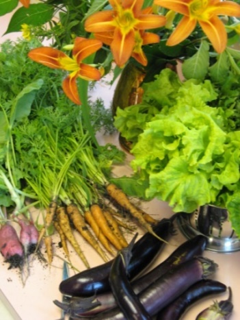
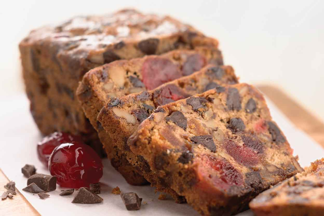

WICK – JICA Cookbook
Fenstad’s 2017
Favorite Family Recipes |
|
Kathy and Carol Rice |
|
12/10/2018 |
Carol, Craig and Kathy Rice, November 1956
Contents
Beets with Shallot Vinaigrette and Goat Cheese on Rye 9
Caramelized Onion Fig and Camembert Tarts 9
Mushroom and Goat Cheese or Dal Puff Pastry Pockets 10
Evensong Hibiscus "James Bond" Martini 12
Pineapple Ginger Sage Cocktail 14
Saketini with Sakura Blossom 15
Strawberry Peppercorn Shrub 17
Cranberry Ginger Sparkler Non-Alcoholic 17
Minnestrone Soup for Winter 19
Quick and Easy Asian Chicken Soup with Star Anise and Mushrooms 20
Drunkards Noodles with Crispy Tofu 23
Pumpkin pasta with walnut cream sauce 25
Linguini with Tangy Green Olive Sauce 25
Fettucine with Walnuts, Zucchini Ribbons, and Cheese 26
Macaroni and Cheese, Cheesemonger’s 27
Mee Goreng (Spicy Malaysian Street Fried Noodles) 28
Chilled Ramen with Soy Milk and Chili Oil 31
Spicy Spaghetti with Garlic 33
Tagliatelle with Prosciutto and Orange 33
Tagliatelle With Walnuts, Lemon, Parsley and Sage 34
Spicy Pasta Sauce with Vodka and Tomato 34
Pasta with Broccoli, Tomato, Basil and Walnuts 35
Pasta with Creamy Zucchini Sauce 35
Pasta with Yogurt and Caramelized Onions 36
Gnocchi with Lemon, Peas and Spinach 41
Mozzarella Fried, Arugula, (Prosciutto), Roasted Red Pepper, Olives 41
Quinoa (or Brown Rice) Bowl with Fried Egg and Avocado 42
Ratatouille: Easy, with Roasted Vegetables 42
Risotto with Squash or Pumpkin 43
Shakshuka With Tomato, Feta and Pine Nuts 44
Soufflé with Tomato, Cheese and Red Pepper 45
Pistachio-Crusted Tofu with Ponzu Sauce 46
New Orleans Herbal BBQ Shrimp ala Ava 49
Moqueca de Camarao (Brazilian Shrimp Stew) 50
Grilled Indian Spiced Butter Chicken 51
Grilled Chicken with Board Dressing 52
Harissa Roasted Chicken with Potatoes and Leeks, Yogurt Sauce 53
"Toad in Hole" (sausage in popover dough) 55
Lamb Tagine with Prunes and Cinnamon 55
Satay Sauce for Grilled Chicken 57
Pork Kebabs with Hoisin Sauce and Five Spice Powder 58
Soy-Sauce-And-Citrus-Marinated Chicken with Pomelo 60
Stuffed Grilled Chicken Breasts with Rosemary-Orange Dressing 61
Gougere with Ham, Tomato and Mushrooms 62
“Fly’s Head” Pork and Garlic Chive 62
Meat Loaf: The Machine Shed 63
Chinese BBQ Pork (Char Siu) 65
Braised Pork with Fuyu Persimmon Willy Street 66
Steak with Spicy Hoisin Sauce and Cucumber Relish 70
Kulebiaka (Russian Beef and Rice Filled Loaf with Stroganoff Sauce) 71
Beef and Stout Pot Pie with a Stilton Pastry Crust 72
Sides, Sauces and Condiments 75
Spinach Rolls with Sesame Shoyu Dressing 75
Wild Mushroom Bread Pudding 76
Buttery Pull-Apart Milk Rolls 78
Gwen's Sweet Dough (Kuchen) for Pillows, Cardamon Bread and Cinnamon Rolls 80
Swedish Limpa (Beatrice Ojakangas) 82
Quick Rich Moist Coffeecake with 85
Danish Almond Braid Beatrice Ojakangas 85
Almond Apricot Pound Cake with Amaretto 88
Almond Cake with Raspberry Puree 89
Apple Cake with Chile Caramel Glaze 92
Blackberry Apple Cake Saveur 93
Buttermilk Cake with Blackberries and Beaumes-de-Venise 97
Chocolate Sour Cream “Cheesecake” Gourmet Cookbook 100
Armagnac/Brandy (or Whiskey) Chocolate Cake with Prunes 101
Chocolate Chestnut Torte with Chocolate Cognac Mousse 102
Chocolate Fresh Mint Icebox Cake 104
Chocolate Sheet Cake with Milk Chocolate Frosting 104
Chocolate Malted Milk Cake 105
Cake Fresh Ginger Cake with Caramelized Pears (or Apples) 106
Fruitcake: Cherry Chip, Dates Brazil Nuts, Gwen Rice 107
Gingerbread with Three Gingers, Pears (or Prunes) and Armagnac 108
Lemon Olive Oil Cake with Raspberries and Pistachios 109
Esther’s Orange Marmalade Coconut Layer Cake 113
Raspberry Vanilla Layer Cake 115
Bundt Cake Brown Butter Almond Flour with Apple Caramel Sauce 116
Super Chocolate "Chiffon" Cake Layers 117
Torta de Cielo (Mexican Almond Cake) 121
Zucchini Layer Cake with Orange Curd 122
Hungarian Apple Pie (Almas Pite) 123
Hand Mixed Super Flaky Pie Crust 123
Coconut Cream Pie with Strawberries Pineapple and Pecans 125
Malted Milk Chocolate Hazelnut Tart 127
Strawberry Rhubarb Pie, Old Fashioned 127
Strawberry Rhubarb Pie, Ultimate 128
Pear Pie with Red Wine and Rosemary 129
Bakewell Raspberry Almond Slices 131
One Bowl Brownies (Cream Cheese Marble Option) 132
Cranberry Pecan Swirl Cookies 133
Garden Party Sugar Cookies with Lemon, Ginger and Thyme 133
Chocolate Chili Crinkle Cookies 134
Date Walnut Double Decker Bars 134
Chocolate Chip Cookies (with sea salt) 135
Dark Chocolate Meringue Cookies 136
Jewel Cookies (pistachio cranberry icebox cookies) 137
Oatmeal Cookies with Black Walnuts and Dried Cranberries 137
Molasses Cookies Silver Palate 139
Lavender Shortbread Cookies with Dried Flowers, Fruit and Gold Leaf 140
Tangy Lemon Snowflake Cookies 141
Lemon (or Orange) Curd, Uncle Wally’s 142
1-2 yellow beets
Salt pepper to taste
½ tsp sugar
1 ½ tsp mild
vinegar
2 oz goat cheese
2-3 Tbsp shallot vinaigrette (below)
½
tsp lemon zest, grated
4-6 slices dark rye bread, toasted and cut into
triangles
Thyme leaves, fresh, to decorate
Cut beets thinly with a mandoline (if possible), toss with salt, sugar and vinegar, let sit for 10 min, then add 2-3 Tbsp of vinaigrette for 20 min (keeps for several days). Combine goat cheese, lemon zest, salt and pepper, spread on bread, sprinkle with thyme leaves.
shallot vinaigrette
1 shallot, minced, tossed with a pinch of salt to
soften for about 10 min
1 tsp Dijon mustard
¼ C mild vinegar
¾
C light (not extra virgin) olive oil
1 tsp fresh thyme leaves
2 tablespoons unsalted butter
1 tablespoon extra virgin olive oil
3
c diced onions
¼ tsp salt
1 sprig rosemary, more for garnish
Pinch sugar
12
2” squares puff pastry
12 tsp fig jam
12 oz camembert cheese
Carmelize onions by low heat saute’ with butter oil and salt
400* oven.
Grease 12 muffin pan cups. Line with pastry, then 1 tsp jam, 1 tsp onion, 1 oz
camembert, sprinkle with rosemary. Bake 10-12 min.
1 lb mushrooms, chopped
3 Tbsp extra virgin olive oil
2 shallots,
minced
1 ½ tsp salt, pepper to taste
2 Tbsp parsley, minced
1
Tbsp dill, minced
1 tsp thyme, minced
1/4 C (2 oz.) goat cheese
(alternative to above is yellow dal, with chutney and cilantro)
2 sheets puff pastry (17 oz package)
1 egg, beaten with 2 tsp water
425◦ oven. Saute shallots, add mushrooms, cook until they give off juices, add rest of filling, cook 2-3 minutes, set aside to cool. Roll out dough to 10x15” rectangle, cut into 24 pieces, repeat with second sheet. On a parchment or silpat lined baking sheet, put 1 rounded tsp of filling on each square, fold up corners towards center, brush with egg wash, cook 10 minutes, switch position of sheets in oven, bake 4-6 minutes more until brown and bottoms are crisp.
2 boxes frozen chopped spinach (or fresh), lightly cooked and drained
2
14 cans artichoke hearts, chopped
1 red bell pepper, chopped
1 1/3
cups Parmesan cheese (or half Romano and half Parmesan, grated)
1 tsp
garlic, minced
2/3 C heavy cream
1 C sour cream
2 C mozzarella
cheese, shredded
Mix all, bake at 350◦ for 20-25 minutes until
cheese is melted and dip is bubbly
1 1/2 oz Gin
1 tsp Crème De Violette
1/2 oz Maraschino Liqueur (Luxardo)
3/4 oz Fresh lemon juice
1/4 oz Simple syrup or triple sec
1 part gin
1 part sweet vermouth
½ part
chartreuse
orange bitters, splash of campari
shake of salt
orange
peel
1 can sweetened condensed milk
2 eggs pasteurized
1 qt whole milk
dash of salt
1 Tbsp vanilla
Mix above, then fold in 1 cup cream, whipped (more to taste).
Add brandy to taste if desired, serve topped with freshly grated nutmeg.
1 Tbsp hibiscus tea infused vodka, or pomegranate liqueur
1/2 oz orange liqueur or less
2 oz vodka
2 oz gin
2 oz Lillet
3 drops orange bitters
orange peel
1 bottle red wine (blend,
ex., Bogle)
½ C vodka (to taste)
½ cup tawny port (to taste)
¼ cup brown sugar (or more to taste)
1-2 star anise (optional)
Small piece of cinnamon stick
4-5 whole cloves stuck in orange or
clementine slices
4-5 green cardamom pods
Pinch of salt, Raisins, blanched whole
almonds (optional)
Warm, but do not boil.
Gin (Bombay Sapphire)
Herb infused gin (splash)
Rudy’s Tonic Syrup (tsp)
St Germaine (splash)
Fresh lime wedge, squeezed
Tonic (Schweppes)
Ice
Good rye
Amaro
Orange bitters
Dark cherry juice
Dark cherry garnish
Woodford reserve barrel aged rye or other good rye
Carpano antica
Luxardo (maraschino liquor)
Orange bitters
Dark cherry juice (optional) and garnish
3/4 C tequila
1/4 C lime juice, fresh
1/4 C water
1/2 C triple sec
2 t sugar (variable)
salt for rim
Blend all (except salt), taste and adjust. pour over ice. Serves 2. Enjoy, very strong.
1 1/2 ounces gin
1 1/2 ounces Carpano Antica Formula or other sweet vermouth
1/4 ounce maraschino liqueur, ex., Luxardo
2 dashes of bitters
1 orange twist, for garnish
 Ava's Dark and
Stormy
Ava's Dark and
Stormy
4 oz. dark rum
8 oz ginger beer (not ginger ale)
Pinches of salt
Juice from 1/4 lime
Lime wedges for glasses
Ice cubes 2 per drink.
Add salt to lime juice. Pour over ice. Add rum. Add ginger beer on top.
Garnish with lime wedge.
serves 2. Enjoy!
1½ oz. gin, (or whiskey for Boulevardiers)
3/4 oz. Campari
3/4 oz. vermouth or more
Shake well with cracked ice. Strain into a chilled cocktail glass.
Garnish with orange peel twist.
1 part gin
1 part vodka
Strained fresh blended pineapple plus frozen juice
Ginger liqueur or infusion -- small amount!
St Germaine to taste
Lemon juice to taste
Sage, fresh leaves to muddle
Pinch of salt
1 cup triple sec
1 1/2 cups fresh lemon juice (6 to 8 lemons), strained
1 (750-ml) bottle Jamaican amber rum
12 oz Cognac (1 1/2 cups)
2 oz peach brandy (1/4 cup) (or peach flavor)
Garnish: lemon slices
Stir together triple sec, lemon juice, rum, Cognac, and brandy and chill, covered, at least 3 hours. Put ice block in a punch bowl and pour punch over it.
Salted cherry (or plum or rose) blossoms, to garnish
2 1⁄2 oz. sake
1 oz. gin
1⁄4 tsp. maraschino liqueur (Luxardo)
In a small bowl, soak some cherry blossoms in hot tap water for 10 minutes. Pour the blossoms through a fine sieve, and rinse in cold water. Drain and dry thoroughly with paper towels.
In a cocktail shaker filled with ice, stir the sake with the gin and maraschino liqueur. Strain into a cocktail glass, and garnish with cherry blossom before serving.
Trouble in Paradise (from Tosca in San Francisco)
1 oz bourbon
1 oz Campari
3/4 oz lemon juice(or more grapefruit j)
3/4 oz grapefruit juice
Tsp honey + tsp water
Basil leaf or sage leaf
2 grinds black pepper
Shake with ice and strain
Rye
Simple syrup made from unrefined sugar
Absinthe (few drops)
Peychads bitters and other bitters
Orange Peel
1 apricot
1 nectarine
1 small peach
2 tablespoons fresh lemon juice
2 750-ml bottles chilled dry rosé
(such as Côtes de Provence)
2 cups chilled elderflower liqueur
(such as St-Germain)
1/2 vanilla bean, halved lengthwise
3 plums or pluots
2 nectarines
2 apricots
1 peach
20 fresh cherries
sparkling water
Fruit Purée
Peel stone fruit. Halve, pit, and coarsely chop. Place chopped fruit in a mini-processor or blender; add lemon juice. Purée until smooth. Transfer to a large pitcher or jar.
Sangria
Add rosé and elderflower liqueur to fruit purée in pitcher; scrape in seeds from vanilla bean; add bean. Halve and pit all stone fruit. Cut fruit, except cherries, into 1/2" wedges. Add all fruit to pitcher. Chill for at least 1 hour and up to 2 days. Fill glasses with ice; pour in sangria and fruit to fill glasses 2/3 full. Top with sparkling water. Stir and serve.
Professor Pedro's Puissant Potion
2015 Tweety Award Winner to Kellie and Will!
3 C strawberries, washed and roughly chopped
2 1/2 C sugar
3 C apple cider vinegar
2T whole peppercorns
Mash the strawberries and sugar in a bowl. Let sit for 1-2 hours in the fridge. Then add apple cider vinegar and peppercorns. Let sit in a covered container for several days (Keep tasting it to check fermentation/taste). We kept our mix in the fridge but for faster fermentation you could keep it on the counter according to the internet! Stir or shake gently everyday. At the end of the fermentation period strain out the strawberries and peppercorns. Save the shurb in a glass container in the fridge (lasts for a few months).
Mix tequila, Strawberry Peppercorn Shrub, a squeeze of lime and a few basil leaves. (1 to 1 tequila to shrub) Mix and leave in the fridge for a few hours or overnight. Serve over ice with fizzy water (we used lemon flavored fizzy water). Recipe can be adapted for any juicy fruit, especially berries and stone fruits (even frozen), rhubarb + strawberries.
2 cups boiling water
1/2 cup fresh ginger, thinly sliced
1/2 cup cranberries, fresh, rinsed,
1 piece nutmeg
1/2 cup cranberry juice
2 sprigs mint, for garnish
In a medium saucepan water, ginger and cranberries till berries pop. Cover and let stand 20 minutes. Strain, add nutmeg and cranberry juice and stir. Serve chilled over ice cubes and club soda with fresh berries and lime slices. Garnish with mint.
2+ C vegetable stock (add water if needed when cooking)
1 C lentils
4-5 bay leaves
1 onion, minced
3 cloves garlic, minced
5 T olive oil
2 T turmeric
1 T red curry sauce
1/4 C fresh cut cilantro or 2 T cumin seed
Chili powder to taste
Boil stock, add lentils then simmer 1 hour. Sauté onions, garlic in olive oil. Add all seasoning. Blend into pot of lentils. Store in cool place to avoid sprouting. Very good one day old, served reheated. Add more stock if needed.
1/4 cup olive oil
4 large shallots, peeled and sliced thin
(roughly
1 cup)
3 large sprigs of thyme
1 bay leaf
1/8 teaspoon hot
pepper flakes
3 pounds carrots, peeled and thickly sliced
1 pound
beets, trimmed, peeled, and cut into
1/2-inch chunks
2 teaspoons
ground coriander
2 teaspoons salt
1/4 teaspoon pepper
8 cups
water, and more as needed
2 tablespoons red wine vinegar
Sour cream or yogurt to top
continued
Get out a large, heavy-bottomed soup pot and warm up the oil over medium heat. Add shallots, thyme, bay leaf, and red pepper flakes. Sauté, stirring occasionally, until everything is tender (about 5 minutes). Add carrots, beets, coriander, salt, pepper, and water, and bring everything to a boil. Cover the pot, turn the heat down, and let the soup simmer for about 20 minutes, or until the vegetables are tender. * Pick out the bay leaf and any tough thyme stems, and get out your blender. Puree the soup until it is smooth (carrot and beet soups are never as velvety as those made with squash, but get it as fine as you can) and pour it back into the pot. Add the vinegar, season with more salt and pepper to taste, and thin with a little more water if desired. Simmer for 5 minutes longer and serve hot.
1/3 pound sliced pancetta, chopped (optional)
3 medium red onions,
chopped
4 celery ribs, chopped
2 medium carrots, chopped
1/3
cup extra-virgin olive oil
1 bunch Swiss chard
6 garlic cloves,
finely chopped
2 tablespoons tomato paste
1 (28-ounce) can whole
tomatoes in juice
3 quart hot water
5 cups coarsely chopped cored
Savoy cabbage (6 ounces)
5 cups coarsely chopped escarole (1/2 pound)
1
piece Parmigiano-Reggiano rind (about 3 by 1 1/2 inches)
1 (19-ounce) can
cannellini beans, rinsed and drained
Accompaniments: extra-virgin olive
oil; cooked ditalini pasta , grated Parmigiano-Reggiano
Cook pancetta,
onions, celery, and carrots in oil in a wide 7-to 9-quart heavy pot over
medium heat, stirring occasionally, while preparing chard. Cut out stems from
chard and chop stems, reserving leaves. Stir chard stems into pancetta mixture
with garlic, 1 teaspoon salt, and 3/4 teaspoon pepper and continue cooking,
stirring occasionally, until vegetables are very tender and begin to stick to
bottom of pot, about 45 minutes total. (Set aside chard leaves.) Push
vegetables to one side of pot. Add tomato paste to cleared area and cook,
stirring constantly, until it starts to caramelize, about 2 minutes. Stir
paste into vegetables and cook, stirring, 2 minutes. (Paste may stick to pot,
but don't let it burn.) Stir in tomatoes with their juice, breaking them up
with a spoon, then add hot water (3 quarts), scraping up any brown bits from
bottom of pot. Bring to a simmer. Stir in cabbage, escarole, and parmesan
rind. Simmer, covered, until greens are tender, about 40 minutes. Coarsely
chop chard leaves and stir into soup along with beans. Simmer, partially
covered, 10 minutes. Discard rind. Season soup with salt and pepper. If
using ditalini, stir in just before serving. Soup, without pasta, can be made
2 days ahead and chilled.
10 cups chicken broth (vegetable broth or part water is OK)\ water
2 cloves garlic, crushed
2 whole star anise
2 inch fresh ginger thinly sliced
1 2-to-3-inch cinnamon stick
1 bay leaf
2 carrots, thinly sliced
1 pound baby bok choy, white stems sliced lengthwise and greens chopped, divided
6 ounces of sliced mushrooms
2 C shredded cooked chicken
Optional garnish:
scallion greens
cilantro
sesame oil
In a large pot combine broth, garlic star anise, cinnamon and bay leaf, bring to a boil then simmer 20 minutes. Strain out solids and return broth to pot. Add carrots, cook 3minutes. Add bok choy, mushrooms and chicken, cook until vegetables are crispy tender, add vinegar and serve. Garnish each bowl with scallion greens, cilantro and a ¼-teaspoon drizzle of sesame oil.
6 bell peppers (3 red, 3 yellow)
1 small onion, coarsely chopped
2 cloves garlic, whole
1 Tbsp butter
1 Tbsp olive oil
¼ tsp salt
½ cup / 120ml Tequila
¼ tsp chili powder ¼ tsp cayenne pepper or to taste
¾ cup / 180ml sour cream garnish
¼ cup cilantro, coarsely chopped garnish
1 Tbsp tequila
salt to taste
1 cup water
Roast the bell peppers. Place on a baking sheet. Place under a broiler and turn occasionally until charred and black on all sides. Remove from oven, put into plastic bag and let steam for about 10 minutes. Now the peppers should be easy to peel. Remove peel and all seeds. Set aside. Set heavy saucepan over medium-high heat. Melt butter and add olive oil. Add chopped onion and salt. Cook until lightly browned. Add garlic, cook until lightly browned. Add ½ cup of tequila, chili powder and cayenne pepper. Reduce heat, simmer partially covered until most of the liquid has evaporated. Add roasted and peeled bell peppers and cilantro. Puree with 1 Tbsp Tequila. Add 1 cup of water to adjust consistency. Garnish with cilantro and sour cream.
4T butter
1 onion, minced
2T flour
3 C broth (vegetable or chicken)
2C wild rice, cooked
1 C ham, chopped
1/2 C carrots, chopped
1-2 C of milk
4 T parsley or chives, chopped
Sauté onion in butter. Add flour, remove from heat. In larger pot, blend and simmer rice, broth, carrots and ham for about 30 min. Add onion mix and simmer 5 min. Add milk and parsley and heat until a good serving temperature. Serves c. 4.
1 medium onion, chopped
2 tbsp (5 mL) butter
2 lbs (900 g) tomatoes, halved
1 russet (baking) potato, cut into chunks
4 cups (1 L) chicken broth (or vegetable broth or water)
2 tbsp (30 mL) tomato paste
2 bay leaves
Salt and pepper to taste
1 cup (250 mL) cream
1/3 C (85 g) gin
Dash nutmeg
Chopped chives, for garnish
In a large saucepan, sauté the onion in butter until soft but not brown.
Add the tomatoes, potato, chicken broth, tomato paste, bay leaves, salt and pepper and cook over medium heat for 30 minutes. Remove bay leaves, purée the mixture in a food processor or blender and put through a strainer. Return the strained mixture to the saucepan and stir in the cream and gin. Add the nutmeg and simmer for an additional 10 minutes.
Serve very hot with a dollop of whipped cream and a sprinkling of chives for garnish.
Crispy Tofu
1 (14-ounce) package extra-firm tofu, cut crosswise into 4 (or 8 ½”) 1-inch thick slices
2 tablespoons peanut oil, plus more as needed
1 tablespoon tamari
1 teaspoon honey
1 tablespoon rice wine vinegar
1/2 tablespoon cornstarch
(4 medium sweet potatoes (about 8 ounces each), cut lengthwise into 3/4-inch wedges –omit – this is for tofu meal: double marinade for that)
¼ teaspoon kosher salt, plus more to taste
¼ teaspoon black pepper
(4 scallions, cut into 3-inch pieces and thinly sliced lengthwise for potato meal, plus cilantro)
Heat oven to 400 degrees. Arrange tofu pieces, cut sides down, on a clean kitchen towel or paper towels. Cover with another kitchen towel, and place a flat cutting board on top. If your cutting board is lightweight, stack a few cans or a skillet on top to weigh it down. Let tofu drain for at least 10 minutes (and up to 30 minutes), then transfer to a cutting board. Cut strips into 3/4-inch pieces (1-inch thick), and transfer to a medium bowl.
In a small bowl, whisk together oil, tamari, honey and 1 teaspoon vinegar. Toss half the mixture with the tofu, then toss in cornstarch. Arrange in a single layer on a rimmed sheet pan.
(On a separate rimmed sheet pan, toss together potato wedges, 1/2 teaspoon salt and pepper. Arrange in a single layer; do not crowd the pan. If they don’t all fit, arrange extra wedges on the pan with the tofu.)
Bake tofu and potatoes until browned, 35 to 40 minutes, flipping them halfway through. If the tofu sticks (and this is likely), use a thin metal spatula to carefully loosen each one before flipping. A small offset spatula is perfect here.
(Meanwhile, in a medium bowl, combine scallions, 1 tablespoon vinegar and a large pinch each sugar and salt. Let sit while tofu and potatoes roast.)
To serve, toss tofu with some of the reserved tamari sauce, to taste. Serve
with potato wedges, topped with scallions, cilantro and a drizzle of hot
sesame chile oil or sprinkling of red-pepper flakes, and more tamari sauce.
Sprinkle with peanuts if desired.
(continued)
 Noodles
Noodles
Vegetable oil
1/2 cup chicken stock/water
1 tablespoon oyster sauce (opt)
1 teaspoon Asian fish sauce
1 1/2 teaspoons roasted red chile paste
1 teaspoon black soy sauce or 3/4 teaspoon soy sauce sweetened with 1/4 teaspoon molasses
1/2 teaspoon sugar
1/2 red bell pepper, seeded and sliced/ onion, cabbage
1 egg, beaten
1/2 large jalapeño, seeded and sliced
2 garlic cloves, minced
1 red Thai bird chile, minced
1/2 pound frozen wide pad thai rice noodles, cooked (or maybe flat lasagna noodles?
Thai basil leaves/cilantro?
Lime wedges, for serving
(In a nonstick skillet, heat 1/4 inch of oil. Add the tofu and cook over moderately high heat, turning, until crisp, 5 minutes. Drain. --or use crispy recipe above)
In a bowl, whisk the stock, oyster sauce, fish sauce, chile paste, soy sauce and sugar.
In a large skillet, heat 2 tablespoons of oil. Add the bell pepper, jalapeno, garlic and Thai chile and stir-fry over high heat until fragrant, 2 minutes. Add the noodles and stir-fry until browned, 4 minutes. Add the sauce and toss over moderately high heat, until absorbed. Fold in 1 cup of basil and the tofu. Garnish with more basil and serve with lime wedges.
Pasta:
2C flour
1 t salt
1/2 t nutmeg
3/4 C pumpkin purée
2 eggs
Make pasta into a linguini shape. Let sit for 30 min, lightly covered.
Sauce:
4 T butter
1 T flour
1/3 C sherry or white wine
1 2/3 C cream or whole milk
1 C walnuts, broken in rough bits then toasted
Make roux with butter and flour. Stir in wine, then milk. Cook gently until thickened and smooth. Add nuts to sauce just at serving.
Cook pasta for just a few minutes until al dente. Serve hot topped with sauce. Serves 4.
1 1/2 C pitted green olives, minced, crushed slightly
1/2 C olive oil
2T pesto or 2 T parsley, chopped
2T basil, chopped
1 T lime zest and 2 T lime juice
3T capers
4 oz bacon, cooked, chopped
2 cloves garlic, minced
1/2 C parsley (optional)
1/4 C white wine (optional)
2 T butter
12 oz. linguini, cooked. Reserve 1/2 C liquid.
2/3 C Panko crumbs
1/2 C Parmesan, grated
Blend olives, garlic, parsley, pesto, basil, capers, lime juice, wine, oil and bacon. Set aside. Sauce good made 1 day ahead. Toss hot pasta and butter, with olive sauce alternating with pasta liquid. Top with panko crumbs and Parmesan when served. Serves 3-4.
2 1/2 pounds small zucchini, untrimmed
1 teaspoon fleur de sel or coarse kosher salt
2 garlic cloves, pressed
1/2 teaspoon (scant) dried crushed red pepper
1 pound fettuccine
1/3 cup extra-virgin olive oil plus additional for serving
3/4 cup walnuts, toasted, coarsely chopped
1 cup freshly grated Pecorino Romano cheese, divided
1/2 cup (packed) thinly sliced fresh basil
1/4 cup (packed) chopped fresh mint
Fresh zucchini flowers, thinly sliced (optional)
Place 1 zucchini on work surface. Using vegetable peeler and firmly holding zucchini by stem end, shave zucchini lengthwise into long ribbons. Discard scraps. Repeat with remaining zucchini. Place ribbons (about 10 cups total) in large colander set over large bowl; sprinkle with 1 teaspoon fleur de sel. Let stand 30 minutes. Rinse zucchini under cold running water; drain well. Spread on 2 large kitchen towels; roll up in towels to absorb excess water. Set aside.
Combine garlic, and crushed red pepper in very large serving bowl. Using pestle or wooden spoon, crush mixture until paste forms. Cook pasta in large pot of boiling salted water until just tender but still firm to bite. Drain, reserving 1/2 cup cooking liquid. Transfer pasta to bowl with garlic mixture. Add 1/3 cup oil and 1/4 cup reserved cooking liquid; toss. Add zucchini, walnuts, 1/2 cup cheese, basil, and mint; toss. Season with salt and pepper, adding more pasta cooking liquid if mixture is dry. Drizzle with additional oil. Sprinkle with zucchini flowers, if desired. Serve with remaining cheese.
1 1/2 cups coarsely grated gruyere cheese
1 1/2 cups coarsely grated sharp cheddar cheese(about 6 oz.)
1 1/2 cups diced brie cheese (cut from 1 lb. wedge with rind removed)
5 tablespoons butter, divided
1/4 cup all-purpose flour
2 teaspoons chopped fresh thyme leaves (optional)
3/4 teaspoon nutmeg
4 cups whole milk
1 3/4 cups fresh breadcrumbs (made from crustless French bread)
1 lb penne pasta
8 teaspoons whipping cream (if making 1 day ahead)
Mix all cheeses. Set aside 1 cup for topping; cover and chill.
Melt 4 tablespoons butter in large saucepan over medium heat. Add flour and stir until mixture turns golden brown, about 4 minutes. Add thyme and nutmeg. Gradually whisk in milk. Simmer until thickened and smooth, stirring often, about 4 minutes. Add cheeses from large bowl. Stir until melted and smooth.
Melt 1 tablespoons butter in heavy large skillet over medium-high heat. Add breadcrumbs,; toss. Stir until golden, about 2 minutes. Transfer to plate.
Preheat over to 375 degrees. Cook pasta in boiling salted water until tender but firm to bite. Drain. Transfer to large bowl. Pour cheese sauce over; toss. Divide among 8 1 1/4 cup custard cups. Sprinkle with 1 cup reserved cheese. Place cups on rimmed baking sheet.
(Can be made 1 day ahead. Cover with foil; chill. Drizzle each with 1 tsp cream. Cover with foil; bake 15 minutes. Uncover and proceed. Sprinkle partially baked, chilled, or just assembled cups with bread crumbs. Bake pasta until beginning to bubble and tops are golden, about 20 minutes.
2 cups fresh Chinese egg noodles (1/2 lb), or ½ lb dry japanese noodles
2
Tbsp sambal oelek, or black bean chili paste (could use Siracha)
¼ C tsp
dark soy sauce
1 tsp fish sauce (optional)
1 stalk lemongrass or
more (optional)
1/8 C molasses
1/8 C brown sugar
1/4 tsp
salt
3 Tbsp oyster sauce (optional)
2-4 Tbsp vegetable or canola
oil
2 eggs, beaten
2-4 tsp minced garlic
1 cup mung bean
sprouts, rinsed, (optional)
1/2 cup shredded cabbage or more
3-4
scallions sliced
1 block tofu, drained
2 T cornstarch
1/4 lb
boneless chicken breast, cut into 1/2-inch cubes (or shredded cooked chicken),
(optional)
2 Tbsp shao hsing wine
1/4 tsp white pepper
2 lg
shallots, once minced and 1 sliced to fry
Bring a large pot of water to a boil. Cook the noodles as directed
In a
small bowl, dark soy, sugar, tsp salt, molasses (oyster sauce).
In
another bowl mix chili paste, garlic, minced shallot.
Toss salted and
peppered tofu in cornstarch, shake off excess, stir fry in oil for 8-10 min
till golden and crispy. Set aside. Repeat for chicken option.
Stir fry
shallots till a bit crispy, set aside.
Stir fry veggies, move to side,
stir fry egg, move to side, add chili paste mix to center, stir fry 30 sec
till fragrant. Add noodles, the soy mixture (stir first), then stir-fry
continuously until noodles are cooked.
Sauce
3 28-ounce cans diced tomatoes in juice
3 T oil
3 medium onions, chopped
1/2 teaspoon (or more) salt, , plus garlic, red pepper flakes, tsp of sugar
Meatballs
1 cup fresh breadcrumbs made from crustless French or country-style bread
1/3 cup whole milk
8 ounces ground beef (15% fat)
8 ounces ground pork
1 cup grated Parmesan cheese
1/3 cup finely chopped Italian parsley
1 teaspoon salt
1/4 teaspoon freshly ground black pepper
Fennel seeds, nutmeg, red pepper flakes to taste (at least ½ tsp, maybe more)
2 large eggs
2 large garlic cloves, pressed
1 pound spaghetti
Freshly grated Parmesan cheese (for serving)
Sauce. Saute onions in oil. Combine tomatoes with juice, butter, salt anmd spices in large wide pot. Bring to simmer over medium heat. Reduce heat; simmer uncovered 45 minutes, stirring occasionally. Using immersion blender, process sauce briefly to break up any large pieces of tomato (texture should be even but not completely smooth). Season sauce with more salt and freshly ground black pepper, more red pepper. Remove from heat.
Meatballs. Combine breadcrumbs and milk in small bowl; stir until breadcrumbs are evenly moistened. Let stand 10 minutes.
Place beef and pork in large bowl and break up into small chunks. Add 1 cup ground Parmesan, parsley, salt, and pepper. Whisk eggs to blend in small bowl; whisk in garlic. Add to meat mixture. Using hands, squeeze milk from breadcrumbs, reserving milk. Add breadcrumbs to meat mixture. Using hands, quickly and gently mix meat mixture just until all ingredients are evenly combined (do not overmix). Chill mixture 15 minutes to 1 hour.
Moisten hands with some of reserved milk from breadcrumbs, then roll meat mixture between palms into golf-ball-size balls, occasionally moistening hands with milk as needed and arranging meatballs in single layer in sauce in pot. Bring to simmer. Reduce heat to medium-low, cover, and simmer until meatballs are cooked through, 15 to 20 minutes. DO AHEAD Can be made 2 days ahead. Cool slightly. Chill uncovered until cold.
Cook spaghetti, Drain.
Using slotted spoon, transfer meatballs to platter. Add pasta to sauce in pot and toss to coat. Top pasta with meatballs. Sprinkle with Parmesan cheese and serve.
1 butternut squash, roasted
1 package frozen spinach, chopped
1 package of dry, no bake lasagna
2 eggs
1 pint whole milk ricotta cheese
16 oz shredded mozzarella
2 cups grated Parmesan, divided
Tomato sauce
2 28oz cans of diced tomatoes
2 onions, chopped (save a few for bechamel)
Garlic
Red pepper flakes, salt pepper, splash of wine?
Bechamel
2 cups whole milk
2 T flour
2 T butter
Nutmeg, salt pepper, a few T chopped onion
Make tomato sauce: sauté onions, add garlic and spices, tomatoes, simmer. about 30 min., blend with immersion blender.
Make bechamel.
Mix squash with 1 egg, 1/2 of the ricotta, salt and pepper, do the same with spinach, plus a little nutmeg.
Lasagna layers: tomato sauce, noodles, spinach mix, mozzarella, Parmesan, then similar layers with tomato, then spinach, then tomato, then bechamel topped with Parmesan.
Bake covered for about 1 hour, then remove cover and bake about 15 more minutes until Parmesan is brown ( or carefully broil the top).
Let stand 15 or so minutes before serving.
Sichuan Chili Paste
1 1-inch piece ginger, peeled, very finely chopped
¼ cup toasted sesame oil
¼ cup vegetable oil
4½ teaspoons crushed red pepper flakes
1 tablespoon paprika
4 teaspoons toasted sesame seeds
1 tablespoon mirin (sweet Japanese rice wine)
1 tablespoon raw or granulated sugar
1 tablespoon red or white miso
1 tablespoon sake
1 tablespoon Sichuan peppercorns
Miso Tare
2 scallions, thinly sliced
1 1½-inch piece ginger, peeled, finely grated
1 apple wedge (about ⅛ of apple), peeled, finely grated
2 garlic cloves, finely grated
⅔ cup white, sweet white, and/or red miso
1 tablespoon mirin (sweet Japanese rice wine)
1 tablespoon sake
1½ teaspoons toban djan (chili bean paste)
½ teaspoon crushed red pepper flakes
Chili Oil
¼ cup vegetable or other neutral oil
2 scallions, thinly sliced
1 teaspoon paprika
Kosher salt
Noodles and Assembly
20 ounces frozen ramen noodles or 12 ounces dried ramen noodles
Kosher salt
3 Persian cucumbers, cut into ½-inch pieces
1 small red or orange bell pepper, ribs and seeds removed, very thinly sliced
½ cup thinly sliced radishes
¼ cup thinly sliced basil (continued)
4 cups soy milk or other nondairy milk or regular milk
1 3x1-inch strip grapefruit zest, very thinly sliced
2 tablespoons white or regular soy sauce
Plain unsweetened granola or fried shallots, garlic chips, unsalted, dry-roasted peanuts, and/or any other store-bought crunchy toppings you want (for serving)
Sichuan Chili Paste
Bring ginger, sesame oil, vegetable oil, red pepper flakes, and paprika to a gentle simmer in a small saucepan over medium heat. Let bubble gently 30 seconds, then remove from heat. Add sesame seeds, mirin, raw sugar, miso, sake, and Sichuan peppercorns and whisk until sugar is dissolved. Return paste to a gentle simmer, then let cool.
Do Ahead: Sichuan chili paste can be made 1 month ahead. Cover and chill.
Miso Tare
Cook scallions, ginger, apple, garlic, miso, mirin, sake, toban djan, and red pepper flakes in a small saucepan over medium heat, stirring, just until warm (do not let it simmer) and garlic no longer tastes raw, about 5 minutes.
Do Ahead: Miso tare can be made 1 month ahead. Let cool; cover and chill.
Chili Oil
Heat oil in a small saucepan over medium-high until very hot but not quite smoking. Add scallions and paprika; season with salt. Cook, swirling pan often, until scallions are browned and oil is deep red, about 2 minutes. Let cool.
Do Ahead: Chili oil can be made 1 month ahead. Cover and chill.
Noodles and Assembly
Cook noodles in a large pot of boiling salted water according to package instructions until al dente. Drain, then immediately chill in a bowl of ice water. Drain again.
Toss cucumbers, bell pepper, and radishes with 3 Tbsp. Sichuan chili paste in a small bowl until well coated. Season to taste with salt. Toss in basil.
Whisk miso tare into milk in a medium bowl, then whisk in grapefruit zest and soy sauce.
Divide noodles, then milk mixture and vegetables, among bowls. Toss granola or other crunchy toppings of choice in a little chili oil in a small bowl and scatter over noodles; drizzle with more chili oil.
About 1 1/2 large heads garlic, separated into cloves (about 30)
5 1/2 tablespoons extra-virgin olive oil
1/4 teaspoon dried hot red pepper flakes
1 lb spaghetti
1 1/2 teaspoons finely grated fresh lemon zest
1/4 teaspoon salt
1/2 cup finely chopped fresh flat-leaf parsley
finely grated Parmigiano-Reggiano
Peel garlic without crushing cloves and thinly slice lengthwise as evenly as possible (you should have about 1 cup; peel and slice more if necessary). Cook garlic in 4 tablespoons (1/4 cup) oil in a 12-inch nonstick skillet over moderately low heat, stirring occasionally, until just golden, 7 to 10 minutes. Transfer garlic with a slotted spoon to a bowl. (Garlic will crisp as it cools.) Add hot pepper flakes to skillet and cook, stirring, 1 minute, then remove skillet from heat.
Meanwhile, cook spaghetti in a 6- to 8-quart pot of boiling until al dente. Reserve 1 cup cooking water, then drain spaghetti in a colander. Stir zest and salt into oil in skillet, then add spaghetti, parsley, and 1/2 cup reserved cooking water. Toss over moderately high heat until combined well, 30 seconds to 1 minute, adding enough reserved cooking water to keep spaghetti moist. Add half of garlic and toss. Remove from heat and toss pasta with remaining 1 1/2 tablespoons oil and salt and pepper to taste. Transfer to a serving bowl and sprinkle with remaining garlic.
12 ounces egg tagliatelle or fettuccine (preferably fresh)
2 tablespoons (1/4 stick) unsalted butter
2 ounces thinly sliced prosciutto, torn into 1" pieces
Zest and juice of 1 orange
1/2 cup heavy whipping cream
Freshly ground black pepper
1/4 cup finely grated Parmesan
Bring a large pot of water to a boil. Season with salt; add pasta and cook, stirring occasionally, until 1 minute before al dente, about 2 minutes for fresh pasta, longer for dried. Drain, reserving 1/4 cup of pasta water.
Meanwhile, melt butter in a large heavy nonstick skillet over medium-high heat. Add prosciutto; sauté until browned, about 3 minutes.
Add reserved pasta water, orange juice, half of zest, and cream; bring to a boil. Add pasta; cook, stirring, until sauce coats pasta and pasta is al dente, about 1 minute. Season with salt and pepper. Stir in cheese and divide among warm bowls.
2/3 cup walnuts, roughly broken up
2 tablespoons unsalted butter
1/3 cup sage leaves, finely shredded
grated zest of 1 medium lemon
3 tablespoons heavy cream
10 1/2 ounces tagliatelle or tagliolini or other flat pasta
1 3/4 cups parmesan, shaved
1/2 cup flat leaf parsley leaves, chopped
2 tablespoons lemon juice
salt and black pepper
Preheat the oven to 325°F. Spread out the walnuts on a baking sheet and roast
in the oven for 15 minutes. Remove and set aside to cool. Place a sauté pan
over high heat and add the butter.
Cook for 1 minute, add the sage and
fry for about 2 minutes, until the butter starts to brown.
Add the lemon
zest, cream, 1/2 teaspoon salt, and plenty of black pepper and stir and cook
for just a few seconds to thicken the sauce a little. Remove from the heat at
once so the cream doesn't separate. Set aside until ready to use. Bring a
large pan of salted water to a boil and add the pasta. Cook for 8 minutes, or
according to the package instructions, until al dente.
Drain, reserving a
few tablespoons of the cooking liquid, and place in a large bowl.
Warm
the sauce, adding some cooking liquid if it has become very thick, then add it
to the pasta along with the walnuts, Parmesan and parsley.
Toss the mix, stir in the lemon juice and serve at once.
7 Tbsp butter
½ tsp hot pepper flakes
¾ C vodka
1 C canned tomatoes
1 C cream
1 C parmesan cheese, grated
Melt butter, add pepper and vodka, simmer 2 minutes, add tomatoes simmer until reduced a bit, add cream, simmer until thick. Add cooked pasta, cheese.
1 pint cherry tomatoes, tossed with a little oil, salt and pepper
1 small head broccoli, chopped
1 cup walnuts, chopped
2 Tbsp butter
2 Tbsp olive oil
Garlic, minced to taste
½ basil, chopped (or use pesto)
Pasta, ½ pound (or less)
1 cup parmesan cheese, grated
Preheat oven to 400 degrees. Bring a large pot of salted water to boil. Toast walnuts for about 5 minutes, roast tomatoes about 10 minutes until soft. Add garlic to cooked tomatoes. (You could also do all these steps in a skillet on the stove). Cook pasta, adding broccoli 5 minutes before pasta is not quite al dente. Reserve ½ cup of pasta water, then drain rest. Return pasta and broccoli to pan with tomatoes, reserved water, basil/pesto, oil and butter, tossing over medium heat until pasta is done and sauce is silky. (This is a good method for all pasta – finishing the sauce in the pan with the past and some cooking liquid (Add a bit more water if to dry while you’re doing this). Serve with parmesan cheese.
1/3 cup olive oil
Garlic, minced to taste
Pasta, ½ pound (or less), cooked
8 oz mozzarella, shredded
1 pound zucchini, grated
Salt, pepper, parsley
½ cup Parmesan, grated, plus a bit extra
Heat oil, add garlic, heat for 30 seconds, add cooked pasta
and parmesan
mozzarella, mix, then add zucchini. Serve with parmesan cheese.
5 tablespoons extra-virgin olive oil
6 cups coarsely chopped onions
Sea salt
1 pound tagliatelle or other fresh pasta
2 cups thick, strained Greek-style yogurt (see note)
1 cup coarsely grated kefalotyri cheese, or pecorino Romano
Heat the olive oil in a large skillet over medium-high heat and add the onions. Reduce the heat to medium low and cook, stirring frequently and seasoning with salt to taste as you go, until the onions are soft and golden brown, 20 to 30 minutes.
Meanwhile, fill a large pot with water and bring to a boil. As the water heats, add enough salt so that you can taste it. Add the pasta and cook until soft, not al dente. Reserve 1/2 cup pasta water. Combine the yogurt with 1/4 cup cooking water and mix well. Add more of the reserved pasta water as needed to get the sauce to your thickness. Drain the pasta and toss with the yogurt mixture. Serve immediately with cheese caramelized onions and juices.
10 c basil leaves (may supplement with some parsley)
1/2 C parmesan
1 1/2 T pine nuts
1 garlic clove minced
1/2 C extra virgin olive oil
Blanch basil in hot salted pasta water x 10 secs, reserve 1/2 c H20 (and rest to cook pasta). Scoop out basil with a slotted spoon or sieve, cool in chilled H2O. Squeeze out H2O, blend with other ingredients in food processor, stir in oil. Cook pasta until almost al dente, add some pesto and reserved H20, toss over heat adding more until glossy. Serve with more cheese.
1 Onion, chopped
1/4 Cup olive oil
3 cloves garlic
1 lb
ground lamb
1/2 teaspoon cinnamon
1 teaspoon ground cardamom
1
1/2 Cup chopped tomatoes (once frozen is OK)
1/2 Cup chopped fresh
parsley
2/3 lb small shaped pasta, cooked
Sauté first 4
ingredients. Drain any excess fat. Add all other ingredients listed above.
Place in greased pan 9x13" works well. hold.
For Topping
1/2 Cup
butter
1/4 Cup flour
2 Cups whole milk
3 eggs beaten
Make
roux with butter and flour over operate heat in saucepan. Cool. Add eggs to
milk. Add all topping ingredients gently. pour topping over lamb pasta
mixture. Bake covered for 35 min until firm. let stand 15 min. Eat warm .
2 cups cooked turkey
3 onions, chopped
8 oz mushrooms, sliced
3 cups grated parmesan and pecorino
¼ c flour
4 T butter
2 C chicken broth
2 C milk
¼ C sherry
Nutmeg, salt pepper
1 lb linguine, cooked
Bake 350 for about 30 min till bubbling
Saute’ onions, mushrooms, add flour, seasonings, then saute’ a bit longer, add liquids, simmer till sauce thickens, add turkey and half of cheeses. Sprinkle rest of cheeses on top. Bake.
1 (15-oz) can chickpeas (or 1.5 cups cooked chickpeas)
1/3 cup chopped red onion or shallots
½ cup chopped celery
2 Tbsp chopped fresh dill (option: or a ~1 pickle)
1 tbsp minced fresh dill
1 garlic clove, minced
4 Pita/tortillas/fresh flatbread
Mixed greens
Mix everything above except bread and greens in a bowl, mashing up the chickpeas with a fork (or process some chickpeas in a food processor first), and season with salt and pepper, to taste. Toss with 2/3 of the sauce below.
Sauce
1 1/2 tsp Dijon mustard
2/3 cup plain yogurt
1 Tbsp fresh lemon juice, plus zest
Mix above, salt to taste.
Serve on
4 Pita/tortillas/fresh flatbread, Spread with remainder of sauce, then greens, then chickpeas.
1 baked pie shell. 9" pie pan or quiche dish
3 large eggs
5-6 Roma tomatoes, halved and seeded
1 1/2 C cottage cheese, drained of some whey
1/4 C sour cream
1/4 C parsley, minced
Pepper to taste
1/2 C basil pesto
Mix gently: eggs, sour cream, cottage cheese, parsley, pepper in bowl. Pour into shell. Arrange tomatoes on top in circle. Place 1 t pesto into each tomato half. bake pie at 350 degrees Fahrenheit for 40 min. Let quiche cool to room temperature. Serves 6.
4 C cold cooked rice
1 bunch scallions, sliced
1 bag mung bean
sprouts or cabbage
1 cup frozen baby peas (opt)
3 eggs, beaten, and
or fried tofu (vegan)
1 cup chopped shitake mushrooms, dried and
soaked
4 Tbsp cooking oil
1 Tbsp sesame oil
1-2 Tbsp soy
sauce
Stir fry scallions 1 min in 2 Tbsp cooking oil, add other veggies
for 1 min, push to side, add eggs, stir till cooked, remove from pan. Stir fry
rice in 2 tbsp cooking oil till hot and a little browned in places, add the
veggies, sesame oil and soy sauce.
1 cup pink or yellow lentils, or split yellow mung beans, split chick
peas (channa dal)
4 cups water
1 tsp oil or ghee
1 tsp tumeric
1 tsp salt or to
taste
2 tbs ghee or 1/2 butter and 1/2 corn or peanut oil
1/2 tsp
whole cumin seed
1 tsp finely chopped/minced ginger
1 tsp minced
jalapeno or other chili or to taste
1/4 cup finely chopped onion
1/2
tsp cracked black pepper
1/4 tsp or more cayenne - optional
1/2 tsp
Garam Masala - optional
Chopped green coriander (cilantro) to taste for
garnish
Wash the dal in several changes of water, and if you have the
time - soak the dal for an hour or more. Place dal and water in a large
saucepan, bring to a boil. Skim off froth, and then put in the 1 tsp ghee or
oil. Add turmeric and salt and turn heat to medium low, cook partially covered
20 min- 1 hr till the dal is the texture you (slightly chunky texture - almost
smooth). Add water if you want a thin soupy mixture, or raise the heat to boil
off excess water if you like it thick. When the dal is almost done heat
ghee or butter and oil mixture over med high heat. When hot, put in the cumin
seed, and when it sizzles, the ginger, then the onion and minced chili. Fry
till the onion picks up some golden flecks and add the pepper to the mixture.
At this point, if you want it spicy - add the optional Garam Masala and
cayenne. Cook for 1/2 a minute and then pour the contents of the skillet into
the pot of boiled dal.Let this simmer for a minute or two, and then taste for
salt, and spices. Adjust as necessary, sprinkle with cilantro and serve.
 2 lg (28 oz each) cans diced tomatoes
2 lg (28 oz each) cans diced tomatoes
2 onions, chopped
2 green peppers, chopped
1 can of red beans, rinsed
1 can of black beans, rinsed
1 can of garbanzo beans, rinsed
1 can of corn, rinsed (or frozen corn)
Mexican dried chiles, ground, to taste (buy at a Hispanic store)
2 T dried oregano
2 T minced garlic
1 bag of vegan Boca crumbles
2 oz dark chocolate
½ tsp cinnamon
1 tsp sugar, or to taste
2 tsp salt or to taste
Sautee’ onions and peppers, add chili and garlic, then everything else. Add water if too thick, simmer for an hour or so. Better the next day
3 large eggs
1 1/2 C whole milk
1 cheese, grated. (Gouda, Monterey jack, Swiss or mild cheddar)
1/2 C Green onion, chopped
2 C spinach, raw. Cook then squeeze out moisture
Pepper to taste
Stir all above. Place into a raw pie shell (see Gwen's Pie crust recipe), laid into a 9" pie plate or quiche dish. Bake 30-45 minutes at 375 degrees F, until filling sets. Let rest 15 minute. Best warm. Serves 4-6.
1 cup frozen baby peas (not thawed)
1/2 cup heavy cream
1/4 teaspoon dried hot red-pepper flakes
1 garlic clove, smashed
3 cups packed baby spinach (3 ounces)
1 teaspoon grated lemon zest
1 1/2 teaspoons fresh lemon juice
1 pound dried gnocchi (preferably De Cecco)
1/4 cup grated parmesan
Simmer peas with cream, red-pepper flakes, garlic, and 1/4 teaspoon salt in a 12-inch heavy skillet, covered, until tender, about 5 minutes.
Add spinach and cook over medium-low heat, uncovered, stirring, until wilted. Remove from heat and stir in lemon zest and juice.
Meanwhile, cook gnocchi in a pasta pot of boiling salted water (3 tablespoons salt for 6 quarts water) until al dente. Reserve 1/2 cup pasta-cooking water, then drain gnocchi.
Add gnocchi to sauce with cheese and some of reserved cooking water and stir to coat. Thin with additional cooking water if necessary.
2 bunches arugula
5 oz thinly sliced prosciutto (optional)
1 roasted red pepper
1/3 C brine cured black olives
½ C onion, thinly sliced (optional)
…..
2 large egg whites
1 cup fine dry bread crumbs or Panko
2 C (or less) oil for frying
1 lb mozzarella cut in 4 slices
Vinaigrette
2 Tbsp red wine vinegar, whisked with
¼ C olive oil, salt and pepper to taste
Whisk vinegar, salt pepper and oil. Whisk egg whites with salt and pepper. Double coat cheese slices by dipping in egg white then crumbs and repeating.
Heat ½ inch olive oil in a 12” heavy skillet over medium heat, fry mozzarella slices about 2 minutes, turning 1-2 times until cheese starts to melt but still holds its shape, drain on paper towels. Serve with rest, drizzled with vinaigrette.
4 scallions, thinly sliced
2 cups cooked quinoa or brown rice
1 teaspoon red wine vinegar
Kosher salt, freshly ground pepper
3 tablespoons olive oil
4 large eggs
1 avocado, chopped
Hot sauce (for serving)
Mix scallions, rice, and vinegar in a small bowl; season with salt and pepper.
Heat oil in a nonstick skillet over medium-high heat. Crack eggs into skillet; season with salt and pepper and cook until whites are set around the edges, about 1 minute. Flip eggs, or baste, covered, and cook to desired doneness, about 30 seconds for a runny yolk.
Divide rice among bowls; top with eggs, avocado, and hot sauce.

1 eggplant (medium)
2-3 zucchini (medium)
1 green pepper (large)
1 onion
4-6 chopped tomatoes
Feta cheese
Roast 1st 4 veggies, chopped, 450* x 20 min, add chopped tomatoes, salt pepper garlic.
Cook down to sauce consistency. Serve with rice, sprinkle with feta.
2 1/2 cups/12 oz/340 g cooked quinoa, at room temperature
4 large eggs, beaten
1/2 teaspoon fine-grain sea salt
1/3 cup/.5 oz /15 g finely chopped fresh chives
1 yellow or white onion, finely chopped
1/3 cup/.5 oz/15 g freshly grated Parmesan or Gruyère cheese
3 cloves garlic, finely chopped
1 cup/3.5 oz /100 g whole grain bread crumbs, plus more if needed
Water, if needed
1 tablespoon extra-virgin olive oil or clarified butter
Combine the quinoa, eggs, and salt l. Stir in chives, onion, cheese, and garlic. Add bread crumbs, stir, and let sit for a few minutes. form into twelve 1-inch/2.5cm thick patties. add more bread crumbs, a bit at a time, to firm up the mixture, if need be. Heat oil in a large, add 6 patties, cook for 7 to 10 minutes, until bottoms are deeply browned. Continue to cook until the patties are browned. Carefully flip the patties with a spatula and cook the second sides for 7 min, or until golden. Cool on a wire rack while you cook the remaining patties. Alternatively, the quinoa mixture keeps nicely in the refrigerator for a few days; you can cook patties to order, if you prefer. Good with yogurt, or poached egg or roasted tomato.
2 C squash puree (cooked) (canned pumpkin works fine)
7 T butter (or 5-6 T oil)
2T olive oil
2 T minced sage or other
herb
1 T minced rosemary
6 C vegetable stock (can use H2O for
half)
2/3 C carmelized onions
2 C arborio rice (japanese or short
grain is OK)
1/2 C white wine
1/2 parmesan
Melt 4 T
butter, add sage and brown slightly (optional step). Simmer squash puree and
stock/H20 - whisk together in large sauce pan, warm olive oil add rice and
onions, stir 3 min, add 1/2 of herbs, add wine, stir till absorbed. Add stock
ladleful at a time, stir till absorbed and add next ladle. When rice is al
dente, add salt and pepper, rest of herbs, oil/butter, drizzle with sage
butter (optional) pass cheese if desired
3 tbsp. extra-virgin olive oil
1 large onion, diced
1 large red bell pepper, seeded and diced
1 serrano chile, optional
3 garlic cloves, thinly sliced
2 tsp. sweet paprika
1/2 tsp. ground cumin
1 (16-oz.) can whole plum tomatoes with juices, coarsely chopped
3/4 tsp. salt, divided
1/4 tsp. black pepper
3 oz. feta cheese, crumbled
8 eggs
3 tbsp. toasted pine nuts
2 tbsp. chopped cilantro
Heat olive oil in a large skillet. Add onion, red pepper and serrano chile. Cook til vegetables are browned in spots, 8 to 10 min. Add garlic cook about 30 secs. Add paprika and cumin, cook 30 secs, careful not to burn the spices. Add tomatoes, 1/2 teaspoon salt and pepper. Simmer 10 min. Using a large spoon, make a well and break an egg into it. Repeat with remaining 3 eggs. Season with 1/4 teaspoon salt, cover, reduce heat to low, cook until whites are barely set and yolks are still runny, 6 to 10 minutes. Sprinkle with cheese, pine nuts and cilantro
1/8 onion, sliced
1/3 tsp dahinomoto + 1/3 cup water
1 T sake
1T mirin
1/8 tsp salt
1/3 T soy sauce
2 eggs, beaten
1-1/4 cup cooked rice
Topping: green onion and or nori
In small saucepan cook 1st 5 ingredients 5 min. Add eggs, slowly push coagulated eggs to center, cover, cook on low heat for. 30 secs.
2 medium tomatoes, chopped
1 tsp olive oil
½ C onion, diced
1 medium red pepper, chopped
2 tsp fresh thyme
2 garlic cloves, minced
¼ tsp salt
¼ tsp pepper
Roux
2 Tbsp butter
3 Tbsp flour
1 ½ C milk
….
4 egg yolks, room temperature
4 egg whites, room temperature, whipped with ¼ tsp salt
4 oz Parmesan cheese, grated, or mixed with Romano
375◦ oven. Coat 8 10 oz ramekins with butter and flour (or one large dish).
Sautee onions, then peppers till soft, add thyme, salt and pepper, tomatoes and garlic until thickened. Make roux : melt butter, add flour, whisk for about 2 minutes, slowly add milk, whisk until thick. Whisk in yolks one at a time, then add vegetables. Fold in egg whites, bake 20-25 minutes until top is puffy and golden and soufflé doesn’t jiggle when gently shaken.
425* for 10 min, then 350* for about 30 min, until knife comes out clean
Pie shell, unbaked
Mix all and add to pie shell, bake as above:
1 onion, chopped and sautéed
5 chopped fresh tomatoes
5 eggs beaten
3 T chopped fresh basil, to taste
Salt and pepper to taste
1 1/2 C grated cheddar cheese
2 medium onions, chopped
2 cloves garlic, minced
2 tablespoons butter
2 tablespoons oil
1 tablespoon ground chile arbor or other spicy ground chile
1 teaspoon salt
1 15-ounce can diced tomatoes (substitute with fire-roasted style, if you prefer)
1 4-ounce can diced green chilies
1 15-ounce can corn drained
1 cup milk
3 eggs, beaten
1 1/2 cups yellow cornmeal
1/2 cup pitted black olives (optional)
2 cups shredded sharp Cheddar cheese
sour cream for serving
To prepare oven, baking dish: Heat oven to 350 degrees. Grease an 11 1/2-by-8-inch baking dish or 8-cup casserole. To make filling: In a large skillet, saute the onions and garlic in the butter and oil over medium heat until softened, about 10 minutes. Add chili powder, salt, tomatoes, chilies and corn. Stir. Then add and stir in the milk, eggs, cornmeal and olives. Cook on medium heat for 10 minutes, stirring occasionally. To bake: Put mixture into baking dish, top with cheese, and bake uncovered for 30 minutes until puffy and deliciously browned on top. To serve: Cut into squares and top with sour cream.
1 12-ounce package organic firm tofu, drained
1/4 cup ponzu
1/2 cup unsalted natural pistachios (about 2 1/2 ounces)
1/4 cup mayonnaise
2 tablespoons peanut oil
Cut tofu in half crosswise, then cut each piece in half horizontally, forming 4 rectangles. Press between paper towels to dry. Pour ponzu into shallow bowl, and marinate 15 minutes. Pulse nuts in processor until finely ground (do not allow to turn to paste). Transfer to another shallow bowl. Pat tofu dry. Sprinkle with pepper. Whisk mayonnaise into ponzu in bowl. Working with 1 tofu piece at a time, coat with ponzu mayonnaise and place in bowl with ground pistachios. Turn to coat; press so nuts adhere. Place tofu on rimmed baking sheet. Repeat with remaining tofu, ponzu mayonnaise, and pistachios. Heat oil in large nonstick skillet over medium heat. Add tofu; cook until golden and heated through, 3 to 4 minutes per side. Spoon remaining ponzu mayonnaise onto plates. Top with tofu and serve.
1 lb small zucchini
1 3/4 teaspoons salt
2 tablespoons olive oil
1 teaspoon finely chopped fresh marjoram flowers or leaves, or a pinch of dried (opt)
2 large eggs
1 large pinch black pepper
Trim ends of zucchini, coarsely grate, toss with 1 tsp salt in a large bowl, and let stand 30 min.
Firmly squeeze handfuls to remove excess liquid. Heat oil in a 10-inch heavy skillet until hot but not smoking and sauté zucchini, stirring until golden, 6 to 7 min. Stir in marjoram, let cool about 15 minutes. Lightly beat eggs with zucchini, pepper, and remaining 3/4 tsp salt in a large bowl. Heat butter in a nonstick skillet until foam subsides and butter has a nutty fragrance. Add egg mix, distributing zucchini evenly with a heatproof rubber spatula, and cook, lifting up egg around edges occasionally to let any uncooked egg flow underneath, until egg mix is set around edge, about 1 min. Reduce heat and cook until softly set but top is still moist, about 3 minutes. Shake skillet to loosen omelet from pan, then slide omelet onto a large plate. Place another plate over the omlette, invert and slide into skillet browned side up. Cook omelet until set.
1 1/2 pounds large shrimp, peeled, tails intact, deveined
2-3 tablespoons harissa paste
2 tablespoons olive oil
Kosher salt
4 radishes, trimmed, thinly sliced
/2 cup fresh basil leaves
1/2 cup fresh cilantro leaves
Freshly ground black pepper
Prepare grill for medium-high heat. Combine shrimp, harissa, and oil in a medium bowl; season with salt. Grill shrimp until cooked through, about 2 min per side. Transfer to a plate and let cool. Toss shrimp, radishes, basil, and cilantro in another medium bowl; season with salt and pepper. DO AHEAD: Shrimp can be grilled 2 hours ahead. Cover and chill.
Note that the fish needs to marinate for at least 6 or up to 24 hours before cooking
1/2 cup white miso paste (or yellow, red, or brown miso)
1/4 cup sugar
3 tablespoons sake
3 tablespoons mirin
4 (6- to 8-ounce) skin-on salmon fillets
Lemon wedges
Use center-cut salmon fillets of similar thickness. Whisk miso, sugar, sake, and mirin together in medium bowl until sugar and miso are dissolved (mixture will be thick). Dip each fillet into miso mixture to evenly coat all flesh sides. Place fish skin side down in baking dish and pour any remaining miso mixture over fillets. Cover with plastic wrap and refrigerate for at least 6 hours or up to 24 hours.Adjust oven rack 8 inches from broiler element and heat broiler. Place wire rack in rimmed baking sheet and cover with aluminum foil. Using your fingers, scrape miso mixture from fillets (do not rinse) and place fish skin side down on foil, leaving 1 inch between fillets. Broil salmon until deeply browned and centers of fillets register 125 degrees, 8 to 12 minutes, rotating sheet halfway through cooking and shielding edges of fillets with foil if necessary. Transfer to platter and serve with lemon wedges.
Spice Mix: may be made ahead
2 1/2 t paprika
1t salt
1t pepper
2T garlic powder
1 T Cayenne pepper
1 T oregano (dried)
Sauce: make 1 day ahead
2T of spice mix (above)
2T olive oil
1/2 C onion, minced
4T garlic, minced
3 bay leaves
1/2 C fresh oregano, chopped
1/2 C Worchestshire Sauce
2 jalapeños, chopped
1/2 C dark beer
2 C water
juice from one lemon or lime
1/2 C parsley, chopped
To make sauce:
Sauté onion and garlic in oil. Add liquids and spices. reduce to 1 1/2 C. Add lemon juice and parsley. Let stand overnight.
4 T butter, melted
2 1/2 lbs shrimp, raw, shelled
Add butter to sauce and warm. pour into large open pan. toss in shrimp.
bake at 300 degrees Fahrenheit for 20-30 min until shrimp is just pink. Baste
often. Serves 6.
2T olive oil
1 1/4 lb shrimp, shelled
3 cloves garlic, minced
1/4 C lemon juice (lime is good option)
2 tomatoes, chopped (green tomatoes work well)
2 bell peppers, chopped
1 onion, minced
2C coconut milk (1can)
5T cilantro, chopped
1 small yam, par cooked, sliced
1 Chili pepper, minced
1 can water chestnuts (optional)
1/2 lb of spicy sausage, cooked and sliced
Sauté onions and garlic in oil. Add peppers, tomatoes, cilantro, yam, coconut milk. Cook on medium heat for 15-20 min. Add water chestnuts and sausage. Chill for one day, if desired. Sprinkle lemon juice on shrimp, let sit 30 min. Reheat stew base, then add shrimp. Cook a few minutes until shrimp is just opaque. Serve over steamed rice. Serves 6.
1 cup chopped onion (1 medium)
3 tablespoons finely chopped garlic
2 tablespoons finely chopped peeled fresh ginger
1 1/4 teaspoons salt
1 small green fresh Thai or serrano chile, coarsely chopped, including seeds
1 teaspoon white distilled vinegar
1/3 cup thick plain yogurt, such as Greek yogurt or lebneh, or drained regular yogurt
1 1/2 tablespoons ground coriander
1 tablespoon vegetable oil
1 teaspoon ground turmeric
1/2 teaspoon cayenne
1 (3- to 3 1/2-lb) chicken, quartered, then backbone and as much skin as possible discarded
1 stick (1/2 cup) unsalted butter
Marinate chicken: Purée onion, garlic, ginger, salt, chile, and vinegar to a
smooth paste in a food processor. Transfer to a large wide bowl and whisk in
yogurt, coriander, oil, turmeric, and cayenne. Add chicken pieces and turn to
coat thickly. Cover with plastic wrap and marinate, chilled, at least 16
hours. Let stand at room temperature 30 minutes before grilling.
Make
ghee: Bring butter to a boil in a 1-quart heavy saucepan over moderate heat.
When foam completely covers butter, reduce heat to very low. Cook butter until
a very thin crust begins to form on surface and milky white solids fall to
bottom of pan, about 8 minutes. Continue to cook butter, watching constantly,
until solids at bottom of pan turn light brown and butter has a nutty
fragrance, 8 to 16 minutes. Remove pan from heat and let butter stand 1
minute. Pour through a sieve lined with a dampened heavy-duty paper towel or a
triple layer of cheesecloth into a bowl, discarding solids. Drizzle chicken
with ghee and grill over indirect heat, serve with remaining ghee.
1 dried guajillo or New Mexico chile or
1/2 teaspoon crushed red pepper flakes
3/4 cup chopped fresh cilantro
1/4 cup chopped fresh oregano
1 teaspoon finely grated lime zest
1/4 cup olive oil plus more for grill
Kosher salt, freshly ground pepper
freshly ground pepper
1 4-pound chicken, halved, backbone removed
Lime wedges (for serving)
If using whole chile, toast in a dry skillet, turning often, until slightly puffed and darkened, about 4 minutes. (Do not toast red pepper flakes.) Discard stem and seeds. Finely chop chile and transfer to a small bowl. Stir in cilantro, oregano, lime zest, and 1/4 cup oil; season dressing with salt and pepper.
Prepare grill for medium indirect heat (for a charcoal grill, bank coals on 1 side of grill; for a gas grill, leave 1 burner turned off). Brush grill rack with oil. Season chicken with salt and pepper and place, skin side down, on grill. Grill chicken, turning occasionally, until skin is crisp and browned and an instant-read thermometer inserted into the thickest part of a thigh registers 165°, 10-15 minutes per side (move chicken to cooler part of grill if it's cooking too quickly). About 5 minutes before chicken is done, baste with some of dressing.
Pour remaining dressing onto a carving board (or platter, if you don't have a large board) and place chicken, skin side up, on top. Let sit at least 10 minutes to rest and absorb flavor from dressing before carving. Drizzle chicken with some dressing from board and serve with limes.
DO AHEAD: Dressing can be made 2 days ahead. Cover and chill.
1 ½ pounds bone-in, skin-on chicken thighs and drumsticks, or ¼ breasts
1 ¼ pounds Yukon Gold potatoes, peeled and cut into 1 by 1/2-inch chunks
3 teaspoons kosher salt
¾ teaspoon freshly ground black pepper
2 tablespoons harissa paste/sauce
½ teaspoon ground cumin
4 ½ tablespoons extra-virgin olive oil, plus more as needed
2 leeks, white and light green parts, halved lengthwise, rinsed, and thinly sliced into half-moons
½ teaspoon grated lemon zest
1/3 cup plain yogurt, preferably whole-milk (if using Greek, thin it down with
a little milk
1 small garlic clove
1 cup mixed soft fresh herbs such as dill, parsley, mint, and/or cilantro leaves
Fresh lemon juice, as needed
Combine the chicken and potatoes in a large bowl. Season them with 2½ teaspoons of the salt and ½ teaspoon of the pepper. In a small bowl, whisk together the harissa, cumin, and 3 tablespoons of the olive oil. Pour this mixture over the chicken and potatoes, and toss to combine. Let it stand at room temperature for 30 minutes. Meanwhile, in a medium bowl, combine the leeks, lemon zest, ¼ teaspoon of the salt, and the remaining 1½ tablespoons olive oil. Heat the oven to 425°F. Arrange the chicken and potatoes in a single layer on a large rimmed baking sheet, and roast for 20 minutes. Then toss the potatoes lightly, and scatter the leeks over the baking sheet. Roast until the chicken is cooked through and everything is golden and slightly crisped, 20 to 25 minutes longer. While the chicken cooks, place the yogurt in a small bowl. Grate the garlic clove over the yogurt, and season with the remaining ¼ teaspoon salt and ¼ teaspoon pepper. Spoon the yogurt over the chicken and vegetables in the baking sheet (or you can transfer everything to a platter if you want to be fancy about it). Scatter the herbs over the yogurt, drizzle some olive oil and lemon juice over the top, and serve.
¾ lb boneless chicken breast, halved and flattened between wax paper to ¼” thick
Filling
¾ C Monterey jack cheese, grated
¾ C sharp cheddar cheese, grated
2 T parsley, minced
2 Tbsp butter, cut in bits
….
8 sheets phyllo dough, stacked between paper towels
3 Tbsp butter, melted
Combine filling, form into 2 oval patties, roll one chicken half around it, tucking in sides to enclose filling completely. Brush 4 phyllo sheets individually with butter, wrap around chicken, repeat with second breast, brushing outside with butter.
Bake 350◦ for about 40 min, basting occasionally, until golden
5 lbs chicken, cut into pieces. Use some pieces with bones for flavor
4 cloves garlic, minced
1/4 C oregano, dried
1/2 C red wine vinegar
1/2 C olive oil
1 1/3 C pitted prunes
2/3 C pitted Spanish olives
1/3 C pitted black olives
1/2 C capers. Plus 1 t liquid from jar
6 bay leaves
1/2 C brown sugar
1 1/2 C white wine
2/3 C fresh cilantro, chopped
Marinate chicken in first 9 ingredients overnight in fridge. Keep all in 13x9" pan. Add brown sugar and wine. Stir gently. Cover pan and bake in oven at 350 degrees Fahrenheit for 1 1/4 hours. Baste often. Very good 1 day old. Remove bay leaves. Serve hot topped with cilantro over of steamed rice or with crusty bread. Serves 6+.
1 3/4 C flour
1 cup whole milk
1/2 C water
1/2 t salt
4 eggs
1 1/2 lb sausage links, cooked and in small pieces
1/3 C melted butter
Blend first five ingredients in blender for the batter. Let sit 30 min. Place butter into a 9x13" pan. Pour batter into pan. Scatter sausages on top. Bake at 400 degrees Fahrenheit for 30 min. Serve immediately. Serves 4+. Popular with kids.
2 1/2 lbs lamb shoulder, cut into small pieces
2 T flour
1/3 C olive oil
1 red onion, sliced
Salt and pepper to taste
3 3-inch sticks of cinnamon
1t ground cinnamon
1 t ginger, fresh minced
1 t ground ginger
1 t turmeric
1 pinch saffron threads, toasted
2 T hot salsa
2 1/2 C water
1 C pitted prunes
1/2 C dried apricots, macerated in ginger water
2 T tarragon vinegar
1 T sesame seeds
1/2 C toasted almonds
Brown lamb and onion in a bit of olive oil. Add onions, salt and pepper. Add water, and all seasonings. Cook covered for 1 1/2 hours at 350 degrees Fahrenheit. Stir in prunes and apricots. Cook an additional 15 min. Until meat is tender. Very good made 1 day ahead. serve with sesame seeds and almonds. Serves 6.
2 1/2 lbs. lamb or beef
4 T (T=tablespoons) flour mixed with paprika, pepper, salt and oregano
2 T olive oil
2 leeks, sliced
4 medium potatoes, chunked, do not peel
3 onions, chunked
3 celery stalks, chopped
2 C carrots, chopped
4 cloves of garlic, minced
1/2 cup parsley minced
2 T sage, minced
2 T thyme, minced
8 oz. brown mushrooms, chopped
1/2 cup red wine
1/2 cup water
Toss meat with flour mix. Brown in olive oil in a large pot. Stir in onions and mushrooms to brown. Add liquids. Stir till smooth. Add all other ingredients. Cover and bake at 325 degrees F for 2 hrs. Stew is best if it rests for 1 day then heated up. Serve with crusty bread. Serves 4+.
2 lbs ground lamb,
2 T olive oil
1 t (t= teaspoon) cardamom
1 t cayenne pepper
1 T fresh ginger, minced
2 whole cloves, chopped
1 bay leaf
1 onion, chopped
1 hot jalapeño pepper, chopped
1/2 C plain yogurt
2 t garam marsala
2 cups Cooked rice
2 T toasted almonds or cashews
2 T cilantro, chopped
Brown lamb in oil. Sauté next six spices and jalapeño pepper briefly, with lamb. Add yogurt, garam Marsala, rice. Place in baking dish. Cook covered 15 min. @ 350 degrees F. Serve hot with nuts and cilantro if desired. Serves 4+.
3 fresh Scotch bonnet or habanero chilis
6 scallions, coarsely chopped
1/4
pound shallots (3 medium), quartered
5 garlic cloves, smashed
1
(3-inch) piece fresh ginger, peeled and chopped
3 tablespoons fresh thyme
leaves
2 teaspoons ground allspice
1 1/2 teaspoons black pepper
1
1/2 teaspoons salt
1 teaspoon ground cinnamon
1/2 teaspoon freshly
grated nutmeg
1/2 teaspoon ground cloves
1/4 cup vegetable oil
8
whole chicken legs (4 1/2 pounds), thighs and drumsticks separated, or breasts
Discard stems, seeds, and ribs from 2 chiles and coarsely chop. Coarsely chop remaining chile including seeds (for a less spicy dish, seed half of chile before chopping). Blend chiles with remaining ingredients except chicken in a food processor until a paste forms. Cut several 1-inch-long slits in each piece of chicken, reserve some paste for the dipping sauce then rub paste all over chicken, rubbing it into slits. Marinate, covered and chilled, up to 24 hours. Open vents on bottom of grill and on lid. Light a rounded chimney full of charcoal briquettes (about 100) and divide between 2 sides of grill, leaving a space down middle. When charcoal turns grayish white (15 to 20 minutes from lighting) and you can hold your hand 5 inches about top rack for 3 to 4 seconds, grill chicken, skin sides down first, on portion of lightly oiled grill rack with no coals underneath, turning occasionally, until cooked through, 20 to 30 minutes.
½ C roasted unsalted peanuts
1/3 C unsweetened coconut milk
2 Tbsp water
2 Tbsp red curry paste
Fish sauce to taste
1 Tbsp chopped shallot or onion
2 tsp vinegar
1 tsp sugar
Purée in blender, then simmer over low heat.
4 skinless and boneless chicken breasts, pounded flat between wax paper
Sea salt and freshly ground black pepper
All-purpose flour, for dredging
5 tablespoons extra-virgin olive oil
¼ C white wine
1 small onion, diced
6 tablespoons unsalted butter
1/3 cup fresh lemon juice
1/2 cup chicken stock (or water)
1/4 cup brined capers, rinsed
1/3 cup fresh parsley, chopped
Coat chicken with flour salt and pepper and shake off excess.
In a large skillet over medium high heat, melt 2 tablespoons of butter with 3 tablespoons olive oil. When butter and oil start to sizzle, add 2 pieces of chicken and cook for 3 minutes. When chicken is browned, flip and cook other side for 3 minutes. Remove and transfer to plate. Melt 2 more tablespoons butter and add another 2 tablespoons olive oil. When butter and oil start to sizzle, add the other 2 pieces of chicken and brown both sides in same manner. Remove pan from heat and add chicken to the plate.
Into the pan add the wine and scrape to glaze the pan. Add onions, saute for
about 3 minutes, add garlic for 30 seconds. Add lemon juice, 2 T butter, stock
(or water) and capers and bring
to boil, scraping up brown bits from the
pan for extra flavor. Return all the chicken to the pan and simmer for 5
minutes. Remove chicken to platter. Pour sauce over chicken and garnish
with parsley.
(2) 12 oz pork tenderloins, cut in 1“ chunks
1 tsp salt
3 tsp 5 spice powder
2 garlic cloves, mashed in salt
½ tsp cornstarch
5 Tbsp hoisin sauce
2 Tbsp oil
2 scallions, thinly sliced (garnish)
Toss pork and salt for 20 min. Wisk all except scallions, reserve 2 Tbsp. Toss the rest with the pork. Thread on kebabs, leaving ¼ between each piece, coat with oil. Grill, brushing with reserved sauce, serve with scallions.
Four 6-ounce skinless, boneless chicken breast halves, butterflied and lightly pounded
8 large sage leaves
4 thin slices prosciutto di Parma
All-purpose flour, for dusting
2 tablespoons extra-virgin olive oil
4 tablespoons unsalted butter, cut into tablespoons
1/4 cup plus 2 tablespoons dry white wine
1 cup chicken stock or low-sodium broth
Season the chicken with salt and pepper. Place 2 sage leaves on each breast. Top with a slice of prosciutto, trimming it to fit. Press the prosciutto to help it adhere to the chicken. Dust the chicken with flour, shaking off the excess.Heat a large skillet. Add the oil and 2 tablespoons of the butter. Add 2 of the breasts, prosciutto side up, and cook over high heat until nearly cooked through, about 3 minutes. Turn the chicken and cook just until the prosciutto begins to shrink, about 1 minute. Transfer the chicken to a plate; repeat with the remaining chicken. Pour off any fat and wipe out the skillet.Add the remaining butter to the skillet. Add the wine and cook over high heat until reduced by half, 2 minutes. Add the stock and bring to a boil. Cook until reduced by half, 3 minutes.Return the chicken to the skillet, prosciutto side up, and simmer over moderate heat until the chicken is cooked through, about 2 minutes; season with salt and pepper. Transfer the chicken to plates, pour the sauce on top and serve.
1 onion, sauteed
¼ tsp salt
Freshly ground black pepper
1 lb ground beef & pork combination
1 large egg
2 Tbsp milk
⅓ cup panko (Japanese breadcrumbs)
1 tsp Kosher salt
Freshly ground black pepper
½ tsp nutmeg
Mix above, form patties with depression in middle, fry
Sauce:
1 Tbsp unsalted butter
3 Tbsp red wine
3 Tbsp water
3 Tbsp ketchup
3 Tbsp tonkatsu sauce (or Worcestershire sauce)
4 garlic cloves, crushed
1 2-inch piece fresh
ginger, crushed
1 cup mixed fresh citrus juice (such as sour orange,
grapefruit, and/or lime)
½ cup soy sauce
⅓ cup distilled white
vinegar
¼ cup sugar
1 3½–4-pound chicken, halved, backbone removed,
or bone- in breasts
Kosher salt
Sauce
1 lemongrass stalk, top
third removed
2 shallots, halved
2 scallions, dark green tops
removed
1 red chile (such as Fresno)
4 garlic cloves, unpeeled
1
1-inch piece ginger, peeled, very finely chopped
2 tablespoons fish
sauce
2 tablespoons fresh lime juice
1 teaspoon sugar
1
pomelo
Cilantro sprigs (for serving)
Combine garlic, ginger, citrus juice, soy sauce, vinegar, and sugar in a medium bowl. Place chicken halves in a large resealable plastic bag and pour in marinade. Seal bag, pressing out any air. Chill at least 12 hours and up to 2 days. Place rack in top third of oven; preheat to 425°. Remove chicken from bag; discard marinade. Pat chicken dry with paper towels; season lightly with salt. Roast chicken on a foil-lined rimmed baking sheet until deep brown and cooked through, 30–40 minutes.
Dipping Sauce and Assembly
Bruise lemongrass stalk by lightly crushing with a rolling pin. Bring lemongrass and ½ cup water to a boil in a small saucepan. Remove from heat and let sit until very fragrant, 8–10 minutes; strain lemongrass infusion into a large measuring glass. Meanwhile, heat a large skillet, preferably cast iron, over medium-high. Toast shallots, scallions, chile, and garlic, tossing occasionally, until dark brown in spots, 8–10 minutes. Let cool. Remove skins from garlic and coarsely chop garlic with shallots, scallions, and chile. Add garlic, shallots, scallions, chile, and ginger to lemongrass infusion. Stir in fish sauce, lime juice, and sugar. Using a sharp knife, remove peel and white pith from pomelo; discard. Working over a medium bowl, cut along sides of membranes to release segments. Squeeze juice from membranes into bowl; discard. Tear segments into large pieces. Mix into dipping sauce. Transfer chicken to a platter, spoon some dipping sauce over, and top with cilantro. Serve with remaining dipping sauce alongside.
1 cup pitted brine-cured green olives
1 tablespoon olive oil
1 large
garlic clove, peeled
1 1/2t teaspoons chopped fresh rosemary
1/2
teaspoon finely grated orange peel
6 boneless chicken breast halves with
skin
Dressing and Oranges
6 tablespoons orange juice
2
tablespoons chopped fresh rosemary
4 garlic cloves, pressed
1
tablespoon finely grated orange peel
3/4 cup olive oil
1/2 cup
chopped pitted brine-cured green olives
2 large unpeeled oranges, each
cut into 6 wedges
Blend first 5 ingredients in mini processor until olives and garlic are
chopped. Transfer stuffing to small bowl; season with salt and pepper. Using
fingertips, gently loosen skin on 1 chicken breast, leaving 1 long side
attached. Spread 1/6 of stuffing over flesh under skin. Pull skin flap over to
cover; secure flap with metal pin or toothpick. Repeat with remaining chicken
and stuffing. Arrange chicken on large rimmed baking sheet. DO AHEAD Can be
made 1 day ahead. Cover and chill. Combine first 4 ingredients in medium bowl.
Gradually whisk in oil, then olives. Season dressing to taste with salt and
pepper. Transfer 3/4 cup dressing to small bowl; reserve for serving.
Coat
grill rack with nonstick spray and prepare barbecue (medium-high heat). Divide
remaining dressing between 2 small cups. Drizzle chicken with dressing from 1
cup. Arrange orange wedges on sheet of foil; brush oranges with dressing from
second cup.
Grill chicken until cooked through, drizzling with dressing
from first cup and turning occasionally, 12 to 14 minutes. Grill orange wedges
until heated through and slightly charred, turning and brushing often with
dressing from second cup, about 10 minutes. Transfer chicken and orange wedges
to platter. Serve with reserved 3/4 cup dressing.
Pate’ a Choux
1 C flour
1 C water
½ butter, sliced
4 eggs, room temperature
1/8 lb sharp cheddar, cubed
Filling
4 T butter
2 onions, chopped
½ lb mushrooms, sliced
1 ½ Tbsp flour
Salt, pepper
1 C hot water
2 tomatoes, cubed
6 oz ham, thin strips or cubed
2 T cheddar cheese, shredded
2 Tbsp chopped parsley
Choux: melt butter in water in a saucepan, boil, add flour, stir until it forms one ball, add eggs singly, stirring with a wooden spoon, stir in cheese. Spoon around the edge of a greased pie pan. Sautee’ onion in butter, then mushrooms, cook, sprinkle with flour salt and pepper, cook 2 minutes, add water simmer 4 minutes. Add ham and tomato, our filling into center of pie plate.
Bake at 400◦ for 40 minutes until pastry is puffed and golden brown
2 tablespoons vegetable oil
1¼ pounds ground pork
1 cup mirin
¾ cup white soy sauce
1½ pounds budding chives (about 5 bunches), trimmed, cut into ½-inch pieces. Or garlic chives.
4 garlic cloves, finely grated
4 red Thai chiles, thinly sliced
¼ cup toasted sesame oil
2 tablespoons dried fermented black beans
Heat oil in a large nonstick skillet over high. Cook pork, pressing down to encourage browning and stirring occasionally, until almost cooked through but with some remaining pink spots, about 3 minutes. Add mirin and soy sauce and simmer, frequently pressing down firmly on pork to break into small pieces, until liquid is reduced by half and meat looks slightly glazed, 6–8 minutes. Add budding chives, garlic, chiles, sesame oil, and fermented black beans. Cook, tossing, until chives are just tender and very fragrant, about 2 minutes. Serve over rice.
1 egg, lightly beaten
½ cup rolled oats (can substitute a slice of
bread)
1/3 cup milk
¼ cup finely chopped onions (use more if using
fewer other vegetables)
¼ cup finely chopped apple (use more if using fewer other vegetables)
¼
cup finely chopped celery (optional)
¼ cup finely chopped green pepper
(optional)
¼ cup finely chopped red pepper (optional)
¼ cup grated
parmesan cheese (optional)
1 Tbsp Worcestershire sauce (optional)
1
tsp salt
1 tsp garlic
T tsp ground black pepper
1 ½ pounds ground beef (or mixed meats)
½
cup ketchup
In a large bowl combine egg, oats, milk, onion, celery, peppers, parmesan, Worcestershire sauce, ketchup, salt, garlic salt, and black pepper. Add meat; mix well. Lightly pat mixture into an 8x4x2-inch loaf pan. Bake in a 350 degree F oven for 1 to 1 ½ hours or until internal temperature reaches 160 degrees F. Drain off fat. Bake for 10 more minutes. Let stand 10 minutes before serving.
1/4 cup dried currants
1/4 cup Greek extra-virgin olive oil, divided
1 pound ground lamb or beef
1/2 teaspoon ground cinnamon
1/8 teaspoon cayenne
Kosher salt and freshly ground black pepper
1 large yellow onion, halved and thinly sliced
1 red bell pepper, stemmed, cored, and thinly sliced
1 serrano chile, finely diced
5 cloves garlic, finely chopped
2 tablespoons tomato paste
1 cup red wine
1 (28-ounce can) plum tomatoes, pureed until smooth with their juices
1/4 cup chopped fresh flat leaf parsley, plus more for garnish
2 tablespoons chopped fresh oregano
……(continued)
1 1/2 pounds eggplant, cut crosswise into 14-thick slices
Bechamel Sauce
6 tablespoons unsalted butter
1/2 cup flour
2 1/2 cups milk
1 bay leaf
1/8 teaspoon freshly grated nutmeg
2 eggs yolks
1 cup grated Romano
For the lamb: Soak the currants in warm water for 30 minutes. Drain. Heat 1 tablespoon of the olive oil in a 6-quart saucepan over high heat. Add the lamb, cinnamon, cayenne, and salt and pepper and cook, stirring to break up the meat, until browned, about 5 minutes. Transfer the lamb to a large strainer set over a bowl and drain; discard any liquid left in the pan. Return the pan to the heat and add the remaining 3 tablespoons olive oil and heat until it begins to shimmer. Add the onions and bell pepper and cook until soft, about 5 minutes. Add the serrano and garlic and cook for 1 minute. Add the tomato paste and cook for 1 minute. Return the lamb to the pan, add the wine, and cook, stirring occasionally, until almost completely evaporated, about 5 minutes. Add the tomato puree and currants and bring to a boil. Reduce the heat to medium-low and simmer until thickened, about 30 minutes. Stir in the parsley and oregano and season with salt and pepper and honey, if needed. Remove from the heat. Broil eggplant.
For the bechamel: Melt the butter in a medium saucepan over medium heat. Add the flour and cook, whisking constantly, until pale and smooth, 2 minutes. Still whisking constantly, add the milk and bay leaf and cook until thickened. Season with salt, pepper, and nutmeg and discard the bay leaf. Let the sauce cool for 5 minutes. In a small bowl, whisk together the egg yolks, goat cheese, and lemon zest and whisk into the bechamel sauce until smooth. Preheat the oven to 400 degrees F. Butter a 3-quart baking dish or casserole dish.
To assemble: Put half the eggplant slices in the dish and cover with half the meat sauce. Top the sauce with the remaining eggplant slices, and then the remaining meat sauce. Pour the bechamel over the top of the meat sauce and spread evenly with a rubber spatula. Sprinkle Romano evenly over the top, place the dish on a baking sheet, and bake until browned and bubbly, 45 to 50 minutes. Top with more chopped parsley, if desired. Let cool for at least 20 minutes before serving.
Marinade
3/4 tbsp sugar , brown or white (Note 1)
1 1/2 tbsp honey
1 1/2 tbsp hoisin sauce
1 tsp oyster sauce (not critical)
1 tbsp light soy sauce (Note 1)
1/2 tbs soy sauce (normal all purpose soy sauce) (Note 1)
1/2 tsp five spice powder (Note 2)
1/2 tsp sesame oil (not critical)
Few drops red food colouring
Pork
1 lb/ 500g pork shoulder
1 tbsp honey
Place the Marinade ingredients in a small saucepan and bring to simmer for just 30 seconds, then set aside to cool.
Place the pork and Marinade in a ziplock bag. Remove as much air as possible, then massage it so the marinade is all over the Pork. Place in the fridge and marinate for at least 3 hours, preferably overnight (up to 24 hours).
To Roast
Take the pork out of the fridge and bring it to room temperature.
Preheat oven to 180C/350F. Line a baking tray with foil or baking/parchment paper and place a rack on top (rack is recommended but not critical).
Remove pork from the marinade, save Marinade.
Mix 1 tbsp honey into Marinade.
Place the pork on the rack and tuck the thin end of the tenderloin underneath so the whole piece is roughly the same thickness.
Roast for 25 minutes or until the internal temperature is 145 - 160F/ 65 - 70C. Around halfway through roasting, baste generously with the reserved Marinade. Sort of dab it on so you get as much Marinade on the pork as possible - this is key for getting the thick, glossy glaze.
Allow to rest for 10 minutes before slicing.
Serve with rice and steamed Chinese greens. It is also great to serve on noodle soups, or chopped up inside Chinese pancakes or steamed buns.
2 1⁄2 lb boneless pork shoulder (cut into
1 1/2-inch pieces)
3⁄4 tsp salt
1 1⁄2 T vegetable oil (plus more as
needed)
1 onion (peeled and chopped)
1 green bell pepper
(chopped)
1 celery rib (chopped)
1 clove garlic (large, minced)
1 T
cumin (ground)
2 tsp coriander (ground)
1 tsp turmeric (ground)
1⁄8 tsp
cayenne
2 C water
14 oz tomatoes (whole, canned, drained and
chopped
1 1⁄2 lb Fuyu persimmons (firm-ripe, peeled and cut into
1/4-inch-thick wedges)
1⁄2 c scallion (chopped, green parts only)
Place oven rack in lower third of oven preheated to 350˚F. Pat pork dry, sprinkle with salt. In a 6-quart Dutch oven, heat the oil until hot but not smoking. In 3 batches, brown the pork about 2 1/2 minutes per side. Transfer to a large bowl. Pour off all but 1 Tbsp of fat. Cook onion, bell pepper, and celery 3-5 minutes. Stir in the garlic, cumin, coriander, turmeric, and cayenne, and cooking 1 minute. Transfer pork and juices from the bowl back into the pot. Add water and tomatoes, bring to a simmer. Cover the pot, then transfer to the oven. Braise about 1 hour 45 minutes, until very tender. Add the persimmons to the pork, partially cover the pot, and cook another 10 minutes. Remove from oven, add salt and pepper to taste, and top with the chopped scallions. Serve over rice. (picture: Hidemi and Atsuko Kudo, Tsugaru Japan)
1 lb rare grilled steak, thinly sliced
1 red bell pepper, sliced (roasted optional)
1 green bell pepper, sliced (roasted optional)
6 scallions, sliced
½ tsp minced garlic
½ C mayonnaise
Tabasco sauce (or other) to taste, salt, pepper
Toss all, chill at least 4 hours, bring to room temp and serve on lettuce with good crusty bread.
8 garlic cloves
2 Tbsp rosemary chopped
2 Tbsp brown sugar
2 Tbsp balsamic vinegar
1 tsp cayenne pepper
2 large racks of baby back pork ribs
glaze
2 C hot water
1 cup balsamic vinegar
½ C brown sugar
Marinate ribs with first 5 ingredients for 8-24 hrs. Bake with glaze in tightly covered pan at 425◦ for about 2 hr until very tender. Remove ribs, chill remaining liquid, skim off fat, reduce for sauce. Finish ribs on the grill, brushing with some of the sauce.
1 tablespoon finely chopped fresh sage
1 tablespoon finely chopped fresh thyme
2 teaspoons light brown sugar
1½ teaspoons kosher salt
1 teaspoon crushed fennel seeds
½ teaspoon crushed red pepper flakes
¼ teaspoon freshly ground black pepper
¼ teaspoon garlic powder
¼ teaspoon smoked paprika
1 pound ground pork shoulder (Boston butt)
Mix sage, thyme, brown sugar, salt, fennel seeds, red pepper flakes, black pepper, garlic powder, and paprika in a medium bowl. Add pork and work spice mixture into meat with your hands until it's very well blended. Scoop out ¼-cupfuls of mixture and flatten into about ¼"-thick patties (they will plump slightly when cooled). Griddle sausage over medium-high heat until browned on one side, about 2 minutes. Flip and cook 2 minutes more. Do Ahead: Patties can be made 2 days ahead. Stack between parchment paper; cover and chill, or freeze up to 1 month.
2 1½-inch-thick boneless rib eyes (about 14 ounces
each)
5 tablespoons grapeseed or vegetable oil, divided
Kosher
salt
3 tablespoons unsalted butter, divided
1 large shallot, finely
chopped
¼ cup plus 2 tablespoons cognac
1 cup heavy cream
2
teaspoons coarsely ground black pepper
1 tablespoon green peppercorns in
brine
4 garlic cloves, crushed
4 small sprigs rosemary; plus more
for serving (optional)
Rub steaks all over with 1 Tbsp. oil and season generously with salt. Heat 2 Tbsp. oil and 1 Tbsp. butter in a saucepan over medium-low. Cook shallot until golden brown, 10–15 minutes. Remove from heat and carefully add ¼ cup cognac. Bring mixture to a simmer over medium-low heat and cook until cognac is reduced by half, about 5 minutes. Stir in cream and black pepper and simmer. Cook until cream is slightly thickened, about 5 minutes; cool slightly. Transfer mixture to a blender and blend until smooth (or use an immersion blender directly in the pot). Add green peppercorns, pulse just to break up (do not blend completely). Return sauce to saucepan; add salt. Cover. Heat remaining 2 Tbsp. oil in a large cast-iron skillet over high. Add steaks and cook, occasionally lifting steaks to allow oil to flow underneath, until a brown crust forms underneath, about 4 minutes. Turn steaks and cook until crust forms on the other side and an instant-read thermometer inserted into the thickest part registers 125° about 4 minutes. Transfer steaks to a cutting board and let rest 10 minutes. Pour off all but 2 Tbsp. fat from skillet and return to medium-high heat. Place steaks, garlic, rosemary, and remaining 2 Tbsp. butter in skillet and cook, basting and turning halfway through, until butter is fragrant and golden brown, about 1 minute. Increase heat to high. Lean safely away from pan, add remaining 2 Tbsp. cognac, and immediately tilt skillet toward flame to ignite cognac (if cognac doesn’t ignite, it’s okay). Cook, carefully shaking skillet flames), until flames die out, about 30 seconds. Transfer steaks back to cutting board let rest 10 minutes, slice. Serve with sauce.
Beef filets
Butter, oil, salt, pepper, (sugar)
Puff pastry sheets
Egg wash
Port (or red wine)
Beef broth or boullion
Lemon juice or vinegar
Partly freeze filets. Preheat oven per puff pastry box instruction. Salt and pepper filets, then sear in a butter oil mix. Deglaze pan with wine - see below, save. Wrap filets in puff pastry, brush with an egg wash. Bake per puff pastry package instructions. Serve with a port wine (or red wine) reduction made with wine, broth, salt, pepper, (a little sugar if using a dry red wine). After reducing add a few pats of butter, plus a little lemon juice or a tiny splash of vinegar to taste.
8 oz chopped bacon
3 lb trimmed beef chuck cubes
1/3 C flour
¾ lb carrots, cut
12 lg garlic cloves
saute’ bacon until crisp, reserve, brown floured meat in 3 batches, remove, saute veg, add all to bowl
3 c beef broth or water
½ c brandy
deglaze pot with 1 C broth + brandy, add all ingredients below to pot, bring to boil
1 bottle red wine
1 ¼ lb mushrooms
2 T dry thyme or 1/3 C fresh
1 T dry or fresh rosemary
1 T brown sugar
1 T tomato paste
Cook in oven 1.5 hr till tender. Chill, skim fat, reduce broth or thicken with buerre manie
Sauce
1 tablespoon olive oil
4 medium shallots, thinly sliced
1/4
cup coarsely chopped fresh cilantro
3 garlic cloves, minced
1
tablespoon finely grated peeled fresh ginger
1/2 teaspoon dried crushed
red pepper
1/2 cup low-salt chicken broth
1/4 cup hoisin sauce
3
tablespoons light soy sauce
2 tablespoons honey
Relish
2 unpeeled cucumbers, cut into 1/4-inch cubes
1/4 cup
seasoned rice vinegar
1 tablespoon toasted sesame seeds
2 teaspoons
minced peeled fresh ginger
Steak
2 1-pound grass-fed New York strip steaks (each about 1 inch
thick)
2 Maui or Vidalia (sweet) onions, cut into 1/2-inch-thick rounds
Olive oil
Heat oil in medium saucepan over medium heat. Add shallots and next 4
ingredients; sauté 5 minutes. Add broth, hoisin, and soy sauce; boil until
slightly thickened, about 5 minutes. Stir in honey. DO AHEAD Can be made 1 day
ahead. Cover and chill. Rewarm sauce before using.
Mix all ingredients in
large bowl. Season with salt and pepper.Prepare broiler or barbecue
(medium-high heat). Brush both sides of steaks and onion slices with oil.
Brush steaks with some of sauce. Broil steaks until cooked to desired
doneness, about 5 minutes per side for medium-rare. Transfer to work surface
to rest. Broil onions until charred, about 4 minutes per side. Thinly slice
steak. Separate onion rings. Spoon relish into 6 bowls; place 1 bowl on each
of 6 plates. Divide steak, onions, and sauce equally among plates.
Bread
4 C flour
2 pkg yeat
1 C warm water
1/3 cup oil
½
T salt
2 eggs beaten (plus 1 for brushing on egg wash with 1 T of water)
Combine 2 C flour and the yeast. Add water, oil, sugar salt, mix, then eggs. Beat 3 min at high speed, adding remainder of flour until it forms a soft dough. Knead on floured surface till smooth. Place in greased bowl, turn over once to grease surface. Cover, let rise till double about 1 hour.
Filling
1 lb Ground beef
1 onion chopped
4 C cooked rice
Parsley,
salt and pepper
Sautee beef and onions, add rest. Add a bit of sauce before the sour cream is added (below, to bind). Wrap in risen dough making a loaf, decorate with dough, brush with egg wash, bake 350* for 35-40 min, serve with sauce
Sauce
½ cup butter
½ c flour
3 cups milk
1 lb mushrooms
2
cups sour cream or Greek yogurt
Sautee onions in butter, add flour to cook slightly, add milk and stir until thickened. add sour cream or yogurt and warm sauce
7 Tbs. olive oil
1 lb. white button mushrooms, quartered
2 cups frozen pearl onions, thawed, or 2 regular onions, chopped
Salt and freshly ground pepper, to taste
3 1/2 lb. beef chuck roast, cut into 1-inch cubes
1 cup all-purpose flour
3 garlic cloves, minced
2 Tbs. tomato paste
2 1/2 cups Irish stout, or something similar
1 cup beef broth
1 lb. carrots, cut into chunks
1 lb. red potatoes, cut into chunks
1 Tbs. finely chopped fresh thyme
1 egg, beaten with 1 tsp. water
Stilton Pastry
2 1/2 cups all-purpose flour
2 tsp. salt
1 Tbs. sugar
16 Tbs. (2 sticks/250g) cold unsalted butter, cut into 1/2-inch pieces
1/3 to 1/2 cup ice water
4 oz. Stilton cheese (or other blue cheese), crumbled
In a food processor, combine the flour, salt and sugar and pulse until
blended, about 5 pulses. Add the butter and process until the mixture
resembles coarse meal, about 10 pulses. Add 1/3 cup of the ice water and pulse
2 or 3 times. The dough should hold together when squeezed with your fingers
but should not be sticky. If it is crumbly, add more water 1 Tbs. at a time,
pulsing twice after each addition. Turn the dough out onto a lightly floured
work surface and shape into a disk. Wrap with plastic wrap and refrigerate for
1 hour.
Remove the dough from the refrigerator and let stand for 5
minutes. Sprinkle the top of the dough lightly with flour, place on a lightly
floured sheet of parchment paper and roll out into a 12-by-16-inch rectangle.
Sprinkle the cheese over half of the dough, then fold the other half over the
cheese. Roll out the dough into a 16 1/2-inch square. Using a paring knife,
trim the dough into a 16-inch round. Refrigerate the dough until firm, about
10 minutes, then lay the dough on top of the beef and stout pie and bake as
directed in that recipe. Makes enough dough for a 16-inch round.
In a 5
1/2-quart Dutch oven over medium-high heat, warm 1 Tbs. of the olive oil. Add
the mushrooms, onions, salt and pepper and cook, stirring occasionally, about
12 minutes. Transfer to a bowl. Or use any other casserole dish, fitting the
shape of the pastry to it.
Season the beef with salt and pepper. Dredge
the beef in the flour, shaking off the excess. In the Dutch oven over
medium-high heat, warm 2 Tbs. of the olive oil. Add one-third of the beef and
brown on all sides, about 7 minutes total. Transfer to a separate bowl. (cont)
Add 1/2 cup water to the pot, stirring to scrape up the browned bits. Pour the liquid into a separate bowl. Repeat the process 2 more times, using 2 Tbs. oil to brown each batch of beef and deglazing the pot with 1/2 cup water after each batch. (You can skip the first 2 deglazes, and just deglaze when done with browning all the beef). Return the pot to medium-high heat. Add the garlic and tomato paste and cook, stirring constantly, for 30 seconds. Add the beef, stout, broth and reserved liquid, stirring to scrape up the browned bits. Add the mushrooms, onions, carrots, potatoes and thyme and bring to a boil. Reduce the heat to medium-low, cover and simmer, stirring occasionally, until the beef and vegetables are tender, about 3 hours. Option, you can braise this in the oven at 350 degrees, covered, a few hours until beef is tender, or use a crockpot. Preheat an oven to 400°F. Brush the rim of the pot with water. Lay the pastry round on top, allowing it to droop onto the filling. Trim the dough, leaving a 1-inch overhang, and crimp to seal. Brush the pastry with the egg mixture, then cut 4 slits in the top of the dough. Bake for 30 minutes. Let the potpie rest for 15 minutes before serving. Serves 8 to 10.
Spice Paste: mix and saute for a few minutes the following
8 large dried New Mexico chiles
4 lemongrass stalks
1/2 cup chopped shallots
6 garlic cloves, peeled
2 teaspoons ground coriander
1 1/2 teaspoons ground cumin
1/2 teaspoon ground ginger
1 tsp fish sauce (such as nam pla or nuoc nam) or more to taste
1 tablespoon golden brown sugar
Stew
3 pounds boneless beef chuck roast, trimmed, cut into 1 1/2-inch cubes, browned in oil
1 13.5- to 14-ounce can unsweetened coconut milk
8 kaffir lime leaves
2 whole star anise
1 cinnamon stick
1 tablespoon tamarind paste or tamarind concentrate
Chopped fresh cilantro
Steamed rice
Cover chiles with very hot water and soak until soft, about 45 minutes. Drain. Stem, seed, and chop chiles. Cut off bottom 4 inches from lemongrass stalks; chop and transfer to processor (reserve tops of stalks for stew). Add shallots, garlic, coriander, cumin, ginger, and 1 teaspoon ground black pepper; process until finely ground. Add 1/2 cup water, chiles, fish sauce, and sugar; process to paste. DO AHEAD Can be made 1 week ahead. Transfer to bowl. Cover; chill.
Smash reserved tops of lemongrass from spice paste with mallet or rolling pin. Bend in half; bundle with kitchen twine. Mix beef and spice paste in slow cooker. Stir in lemongrass bundles, coconut milk, lime leaves, star anise, cinnamon, and tamarind. Press meat down to completely submerge. Cook stew on low heat until meat is very tender, 41/2 to 5 hours. Tilt pot and spoon off excess fat from surface of stew. Remove lemongrass bundles, lime leaves, star anise, and cinnamon stick. Transfer stew to bowl. Sprinkle cilantro over and serve with steamed rice.
2 lb baby spinach
2 tablespoons sesame seeds, lightly toasted and cooled
1/4 cup peanut oil
1 1/2 tablespoons rice vinegar (not seasoned)
2 tablespoons mirin (Japanese sweet rice wine)
2 teaspoons shoyu (Japanese all-purpose soy sauce)
1/2 teaspoon Asian sesame oil
1/8 teaspoon salt
Rinse spinach and drain lightly. With water still clinging to leaves, cook in 3 batches in an 8-quart pot over moderately high heat, covered, turning occasionally with tongs, until wilted and bright green, 2 to 3 minutes per batch. Transfer as cooked to a colander, then rinse under cold water until cool and drain well. Squeeze small handfuls of spinach to remove as much moisture as possible, then in 3 batches wrap spinach in several layers of paper towels and squeeze to remove even more moisture. Coarsely chop spinach. On a 16-inch sheet of plastic wrap, form half of spinach into a 13 1/2- by 1 1/2-inch log. Repeat with remaining spinach on another sheet of plastic wrap. Use plastic wrap and your hands to roll, compact, and smooth sides of logs. Remove and discard plastic wrap. With a sharp knife, cut each spinach log crosswise into 9 (1 1/2-inch) pieces (18 total), then arrange, cut sides up, on a platter, reshaping and smoothing mounds with your fingers. Finely grind 2 teaspoons sesame seeds in a blender, then add peanut oil, vinegar, mirin, shoyu, sesame oil, and salt and blend until combined well. Spoon 1 teaspoon dressing over each spinach mound, stirring dressing occasionally (it will separate as it stands), and sprinkle mounds with remaining 4 teaspoons sesame seeds.
2c fresh cranberries
2 tbls water bit more if needed
1 tbls
dark brown sugar
1 tsp cloves, freshly ground
1/4tsp nutmeg, freshly
ground
Dash of black pepper or ginger to taste
Cook all in a saucepan on low heat until most of berries pop and it
seems a bit thick. 5+min. Cool. Adjust all seasonings to taste. Store in
fridge. Is better made ahead of time. Keeps for weeks in fridge.
2 C eggplant, pre roasted or grilled and chopped
1 T olive oil or ghee
1 1/2 t cumin seeds
1 onion sliced
1" piece ginger root, minced
1t paprika
2 tomatoes, chopped (canned or frozen ok)
4T cilantro
1 hot pepper (jalapeño)
Sauté onion in oil. Toss in eggplant. Add cumin and ginger. Lower heat and add paprika, tomatoes, pepper and. Cook 5 min. Add cilantro. Serve warm or room temp. Serves 4-6.
4 C bread (crusty Italian peasant loaf is good); cubed. Old is OK
1 1/2 lbs brown or wild mushrooms, chopped
1/2 C onion, chopped
2 T butter
3+ cloves garlic, minced
1/2 C parsley, fresh, chopped
1/2 C chives, chopped
2 cups cream (half and half)
4 eggs, beaten lightly
1/2 C Parmesan, grated
4 oz. Monterey Jack, grated
Sauté mushrooms garlic and onions in butter. Mix in a bowl: cream, herbs, cheese and eggs. add all ingredients to bowl, tossing gently. Plus into greased 9x 13" pan. Bake for 35 min. @ 350 degrees Fahrenheit. Brown for 10 min. on confectioner or broil briefly to brown. Serves 6. recipe is good at 1 1/2 x to serve 8-10. Note: good keeper, leftovers are popular.
1 bag pearl onions, cooked
1/2 pint whipping cream
Dash nutmeg
Salt and pepper to taste
Cook onions in cream until a bit reduced and thicker, stirring constantly. Add spices. pour all into shallow gratin dish to reheat and serve hot. Serves 4-6.
1-2 butternut squash, peeled, seeded, cubed
Salt, pepper
4 T olive oil
2 garlic cloves, chopped
Roast all the above at 400◦ for 20 minutes
….
2 Jalapeno chiles, seeded and chopped
2 Tbsp lime juice
2 Tbsp cilantro, chopped
….
Grated cheese on top (optional)
Toss all in a greased casserole, bake at 350◦ 30 min covered
1 1/2 C Port
1/4 C scallions, minced
1 1/2 C beef juice or broth
2T butter
2 T parsley, minced
Juice from 1/2 lemon
Reduce port, broth and scallions until c. half. Add butter and parsley. Keeps well at this point. Add lemon juice just before serving.
4 black plums, diced
1 T olive oil
2/3 C cherries, dried and reconstituted
1 onion, diced
1/3 C brown sugar
1/2 C water
3 cloves of garlic
2 T ginger, minced
2 bay leaves
various spices to taste: cardamom, cayenne pepper, back pepper, paprika, nutmeg, salt.
Splash of brandy, optional Sauté onions in oil. Add all other ingredients. Simmer 8-15 min. Chutney is better days old and it keeps.
10 tablespoons unsalted butter, cut into pieces, divided
¾ cup whole
milk, divided
3 tablespoons plus 2¼ cups bread flour
1 ¼-ounce
envelope active dry yeast (about 2¼ teaspoons)
2 tablespoons sugar
2
large eggs
2 teaspoons kosher salt
Flaky sea salt
Place 5 Tbsp. butter in a medium bowl. Cook remaining 5 Tbsp. butter in a
small saucepan over medium heat, until butter foams and turns golden brown.
Remove from heat; scraper all into bowl with butter pieces. Reserve saucepan.
Stir until all butter is melted. Let sit, stirring occasionally, until butter
is room temperature and solidified, 15–20 minutes.
Whisk ¼ cup milk, 3
Tbsp. flour, and ¼ cup water in reserved saucepan until smooth, then set over
medium heat and cook, whisking constantly, until it becomes a very stiff paste
resembling mashed potatoes, about 2 minutes. Scrape into the bowl of a stand
mixer; reserve saucepan.
Gently heat remaining ½ cup milk in
reserved saucepan over low (warm to the touch but not steaming hot). Remove
from heat and let sit 1 minute. Add yeast and whisk until dissolved. Let
mixture sit until foamy (it may not foam – just use fresh yeast), about 5
minutes.
Brush bottom and sides of a 13x9" baking dish with 2 Tbsp
butter. Set aside another 2 Tbsp. butter in a small bowl for brushing over
baked rolls.
Add yeast mixture, sugar, 1 egg, and remaining 2¼ cups flour
to paste in mixer bowl. Using the dough hook, mix on low speed until a shaggy
dough forms. Add kosher salt, increase speed to medium, and continue mixing
until dough forms a smooth single mass, about 3 minutes. Reduce speed to low
again and add remaining butter a tablespoonful at a time, waiting until
incorporated before adding more. Once all of the butter has been added,
increase mixer speed back to medium and mix dough until very soft, smooth, and
supple, another 8–10 minutes. Lightly oil a large bowl; form dough into a ball
and place in bowl. Cover with plastic wrap and let rise in a warm draft-free
spot until doubled in size, 45–60 minutes.
Punch down dough and knead
several times to deflate, then turn out onto a clean work surface. To form the
rolls, divide dough into 15 equal pieces (about 1½ oz. each). Working one at a
time and keeping other pieces covered in plastic, fold edges of dough
underneath, pinching bottom to seal. Turn 90° and fold and pinch again. Repeat
process until you have created a smooth sphere with no seams except at the
bottom.
(cont.)
Place ball on work surface and rest the side of your hand next to it so
your palm and fingers are cupped around it. Drag the ball toward you, using
friction against the work surface to create tension and stretch the surface of
the dough into a smooth, taut dome. This shaping method tightens the gluten
over the surface so the rolls rise evenly upward and outward instead of
slumping into amorphous blobs. Repeat with remaining balls of dough and place
in prepared pan in a 5x3 grid, spacing evenly apart.
Loosely cover pan
with plastic wrap and let rolls rise in a warm draft-free spot until doubled
in size and touching, 35–45 minutes (to test, poke one with an oiled finger;
dough should spring back but leave a slight indentation).
Place a rack in
middle of oven; preheat to 375°. Beat remaining egg in another small bowl
until yolks and whites are incorporated and no streaks remain. Gently brush
tops of rolls with egg, then sprinkle with sea salt.
Bake rolls until they are deep golden brown, 20–25 minutes. Transfer pan to a wire rack and brush warm rolls with reserved 2 Tbsp. garlic butter; let cool in pan 10 minutes.
Slide an offset spatula around sides and underneath rolls to loosen, then invert onto rack and turn right side up. Let cool at least another 15 minutes before serving.
Do Ahead: Dough can be formed into rolls (do not let rise) 1 day ahead; cover and chill. Let rise before baking; this may take around 3 hours.
4 cups flour
2 Tbsp sugar
½ teaspoon salt
3 teaspoon baking
powder
¼ teaspoon baking soda
8 Tbsp butter
1 cup currants
2 eggs, lightly beaten
1 cup buttermilk (cont.)
325◦ oven, greased baking sheet. Whisk together flour, sugar, salt, baking soda, and baking powder. Work the butter into the flour with a pastry cutter or your fingers until it resembles coarse meal, then add in the currants or raisins. Make a well, add buttermilk, egg, and vanilla mix in with a fork. Dust hands with a little flour, then gently knead dough in the bowl just long enough to form a rough ball. If the dough is too sticky to work with, add in a little more flour. Do not over-knead! Transfer dough to a lightly floured surface and shape into a round loaf. Transfer dough to a large, lightly greased cast-iron skillet or a baking sheet (it will flatten out a bit in the pan or on the baking sheet). Using a serrated knife, score top of dough about an inch and a half deep in an "X" shape. Bake about 40-50 minutes (check sooner) until bread is golden and bottom sounds hollow when tapped. Check for doneness also by inserting a long, thin skewer into the center. If it comes out clean, it's done. Let cool a few minutes: Remove pan or sheet from oven, let bread sit in the pan or on the sheet for 5-10 minutes, then remove to a rack to cool briefly. Serve bread warm, at room temperature, or sliced and toasted. Best when eaten warm and just baked.
Make a double batch if making all 3
3/4 C milk, scalded
1/2 C butter
1/4-1/2 C sugar
2 large eggs beaten
1 t vanilla
1 package yeast in ¼ cup warm water
3 1/2 C flour (approximate)
Dissolve butter and sugar in hot milk. Cool. Beat in eggs, vanilla and yeast. Beat in. Flour gradually- dough should be soft. Knead 2-3 min. Divide dough into thirds, add cardamom to one third, combine other two. Allow dough to double in bulk in a greased bowl, covered. Knead again, allow dough to rise a second time.
Cinnamon Rolls
Pat above dough into rectangle. Spread with butter (4 oz?) and cinnamon 4 T and sugar 1/3 C. roll up and slice into 1" disks. Arrange in a 13x9" pan or two 8” round cake pans. Let rise in a warm place. Bake @350 degrees F for 25 min. Serve warm. Ice with butter white icing.
Icing for Cinnamon Rolls
½ cup butter, melted and cooled
1 tsp vanilla
Approx. 2 cups powdered sugar
Approx. ½ cup of milk (add milk to get desired consistency)
(cont.)
Cardamom Bread
Add ¾ tsp cardamom to 1/3 of dough before first rise. Braid loaf, brush with an egg wash, sprinkle with Angel Sugar or Swedish Pearl Sugar and bake ?30 minutes until brown and hollow when tapped.
Chocolate Pillows
3 squares Hersheys milk chocolate per pillow, wrap in squares of dough. Let rise, brush with egg wash and bake (?15 minutes). Dust with powdered sugar to serve.
1 ½ package (1/4 ounce) active dry yeast
¼ cup lukewarm water
3 ½ -3
¾ cups all-purpose flour
3/4 cup warm milk (110° to 115°)
3 Tbsp
sugar
1 tsp salt
1/4 cup butter, softened
2 large eggs
In a large bowl, dissolve yeast in warm water with a pinch of sugar. When yeast mix is foamy Add the milk, butter, sugar, salt, and 1 cup flour; beat until smooth. Add eggs one at a time, beating until combined. Add 2 ½ Cups flour, beat till smooth. Knead in bowl adding 1/4 cup more flour if needed to make a soft but slightly stick dough. Knead on a floured surface a few seconds to make a soft dough. Place in a greased bowl, turning once to grease the top. Cover and let rise in a warm place until doubled, about 1 hour. Spoon into a greased and floured 10-in. tube (bundt) pan. Cover and let rise until doubled, about 1- 1 ½ hour. Bake at 350° 30-40 minutes or until golden brown. Remove from pan to a wire rack to cool. Serve with honey, butter and or jam.
Swedish Limpa (Beatrice
Ojakangas)
1 c dark beer, at room temperature
1/4 c dark corn syrup
1 T butter,
at room temperature
1 cup light rye flour
2 cups bread flour
Grated
rind of 1 orange
2 tsp lightly crushed caraway seed
1 tsp salt
1
1/2 tsp active dry or quick rise yeast
Breadmaker: Measure all of the ingredients in the order given in to the bread pan.
Select
either basic bread or wheat bread setting and medium crust.
Program the
machine, if desired, for delayed baking (follow
directions that come with
the machine). Press start.
Chuck made this for our fall Wisconsin gatherings.
Or make by hand, first proofing yeast in a scant ¼ C warm water, then mixing it with all wet ingredients, add to dry and stir well. Let rise 1 hr, punch down, knead a little more flour in until elastic. Let rise 1 hr, punch down, cover and refrigerate for 3 hours. Rest on counter about 15 min, bake at 375 for about 40 minutes until it sounds hollow.
Special equipment: 2 giant muffin tins
For the Dough:
3 cups (361 grams) all-purpose flour
1 tablespoons granulated sugar
2¼
teaspoons instant (rapid-rise) yeast
¾ teaspoon salt
1½ cups (340
grams) unsalted butter, cut into ¼-inch-thick slices and chilled (maybe
less)
1 cup (227 grams) sour cream, chilled
¼ cup (57 grams) orange
juice, chilled
3 tablespoons ice water
1 egg yolk
For the Filling:
½ cup (99 grams) granulated sugar
½ cup (106 grams)
light brown sugar
1 tablespoon grated orange zest
2 teaspoons ground
cinnamon
1 teaspoon vanilla extract
Prepare the Dough: Combine flour, sugar, yeast and salt in a large zipper-lock
bag. Add butter, seal and shake to evenly coat butter. Press the air out of
the bag and reseal. Roll over the bag several times with a rolling pin,
shaking bag after each roll, until butter is pressed into large flakes.
Transfer mixture to a large bowl and stir in sour cream, orange juice, water
and egg yolk until combined. Turn dough onto a floured surface and knead
briefly to form a smooth, cohesive ball. Roll dough into a 20x12-inch
rectangle. Starting at the short end, roll dough into a tight cylinder. Pat
cylinder flat into a 12x4-inch rectangle and transfer to a parchment
paper-lined rimmed baking sheet. Cover with plastic wrap and freeze for 15
minutes.
Prepare the Filling: grease giant muffin tins (2) with crisco.
In a medium bowl, stir together the sugars, orange zest, cinnamon and vanilla.
Remove the dough from the freezer and place on a lightly floured surface. Roll
the dough into a 20x12-inch rectangle and sprinkle evenly with the filling,
leaving ½-inch border around the edges. Lightly press the filling into the
dough. Starting at the long end, roll the dough into a tight cylinder and
pinch lightly to seal the seam. Trim ½-inch of dough from each end and
discard. Cut the cylinder into 12 equal pieces and transfer cut-side-up to the
prepared muffin tin. Cover loosely with plastic wrap and refrigerate for at
least 4 hours or up to 24 hours.
Preheat oven to 200 degrees F. When oven reaches temperature, turn it off. Remove muffin tin from refrigerator and discard plastic wrap. Place buns in the turned-off oven until puffed and doubled in size, 20 to 30 minutes. Remove buns from oven and heat oven to 425 degrees F. Bake for 5 min, then reduce oven temperature to 325 degrees F. Bake until buns are golden brown, about 20 additional min. Allow buns to cool in the muffin tin for 5 min, then remove and transfer to a wire rack, cool upside down. The buns are best served fresh and warm, but can be frozen (microwave thawed frozen buns for 30 sec x 2 to warm – perfect at Bearskin Lodge).
7 1/2 cups all-purpose flour (1000 grams) plus more for shaping dough
4
teaspoons fine sea salt
1/2 teaspoon active dry yeast
Whisk flour, salt, and yeast in a medium bowl. While stirring with a wooden
spoon, gradually add 3 cups water; stir until well incorporated. Mix dough
gently with your hands to bring it together and form into a rough ball.
Transfer to a large clean bowl. Cover with plastic wrap and let dough rise at
room temperature (about 72°) in a draft-free area until surface is covered
with tiny bubbles and dough has more than doubled in size, about 18 hours
(time will vary depending on the temperature in the room). Transfer dough to a
floured work surface. Gently shape into a rough rectangle. Divide into 6 equal
portions. Working with 1 portion at a time, gather 4 corners to center to
create 4 folds. Turn seam side down and mold gently into a ball. Dust dough
with flour; set aside on work surface or a floured baking sheet. Repeat with
remaining portions. Let dough rest, covered with plastic wrap or a damp
kitchen towel, until soft and pliable, about 1 hour.
DO AHEAD: Can be
made 3 days ahead. Wrap each dough ball separately in plastic wrap and chill.
Unwrap and let rest at room temperature on a lightly floured work surface,
covered with plastic wrap, for 2–3 hours before shaping.
To Make the
Pizzas During the last hour of dough's resting, prepare oven: If using a pizza
stone, arrange a rack in upper third of oven and place stone on rack; preheat
oven to its hottest setting, 500°–550°, for 1 hour. If using a baking sheet,
arrange a rack in middle of oven and preheat to its hottest setting,
500°–550°. (You do not need to preheat the baking sheet.) Working with 1 dough
ball at a time, dust dough generously with flour and place on a floured work
surface. Gently shape dough into a 10"–12" disk. If Using Pizza Stone When
ready to bake, increase oven heat to broil. Sprinkle a pizza peel or rimless
(or inverted rimmed) baking sheet lightly with flour. Place dough disk on
prepared peel and top with desired toppings.
Using small, quick
back-and-forth movements, slide pizza from peel onto hot pizza stone. Broil
pizza, rotating halfway, until bottom of crust is crisp and top is blistered,
5–7 minutes.
Using peel, transfer to a work surface to slice. Repeat,
allowing pizza stone to reheat under broiler for 5 minutes between pizzas. If
using a Baking Sheet Arrange dough disk on baking sheet; top with desired
toppings. Bake pizza until bottom of crust is crisp and top is blistered,
about 10 minutes. Transfer to a work surface to slice. Repeat with remaining
pizzas.
Quick Rich Moist Coffeecake with Blueberries (Joy of Cooking 1972)
All ingredients room temp, greased 8x8 pan (double recipe for 9 x13 pan), preheat oven to 350
Whisk
2 C flour
¾ C sugar
2 tsp baking powder
½ tsp salt
Cut in
½ cup butter
Break into a measuring cup
1 egg
Add milk to 1 Cup
1 tsp vanilla
Stir into dry, then add
1 pint blueberries
Sprinkle with sugar
Bake for about 25 min or longer till poker comes out clean
Makes 2 filled braids
Quick Method Danish Pastry:
3 1/2 to 4 cups all-purpose flour
1 1/2 cups (3 sticks) chilled unsalted butter
2 packages active dry yeast
1/2 cup warm water
1/2 cup heavy cream or undiluted evaporated milk
1/2 teaspoon freshly crushed cardamom seed (optional)
1/2 teaspoon salt
2 eggs, room temperature
1/4 cup sugar
(cont.)
Butter Cream Filling: (could increase filling amount by 50% - happy accident N Shore 2017)
1/4 cup (1/2 stick) soft butter
1 cup powdered sugar
1/4 teaspoon almond extract
1 cup finely pulverized almonds or almond flour
1 (3-ounce) package almond paste
1 egg white
Glaze:
1 slightly beaten egg
2 tablespoons milk or water
Pearl sugar or crushed sugar cubes, for topping
Chopped or sliced almonds for topping
Quick Method Danish Pastry:
Measure 3 1/2 cups flour into a bowl or work bowl of food processor with steel blade in place. Cut the butter into 1/4-inch slices and add to the flour. Process or cut the butter into the flour until the butter is about the size of kidney beans. In a large bowl, dissolve the yeast in the warm water. Let stand 5 minutes. Stir in the cream or milk, cardamom, salt, eggs, and sugar.
Turn the flour-butter mixture into the liquid ingredients, and with a rubber
spatula mix carefully just until the dry ingredients are moistened. Cover and
refrigerate 4 hours, overnight, or up to 4 days. Turn the dough out onto a
lightly floured board; dust with flour. Pound and flatten to make a 16- to
20-inch rectangle. Fold into thirds, making 3 layers. Turn dough around and
roll out again. Fold from the short sides into thirds. This should result in a
perfect square.
Repeat folding and rolling again if you wish. Wrap and
chill the dough 30 minutes or as long
as overnight.
To make the Danish Pastry Braid:
Cover two baking sheets with parchment paper or lightly grease and flour them.
Divide the chilled dough into 2 parts. Roll each part out to make a rectangle
12 by 6 inches. Place these strips on the prepared baking sheets. To make the
filling, cream the butter and sugar until light. Blend in the almond extract,
almonds, almond paste, and egg white. Spread filling down the length of the
center of the strips. Cut slanting strips at 3/4-inch intervals
along
both sides up toward the center using a pastry wheel. Fold strips over the
filling in a crisscross manner
Preheat the oven to 400ºF.
Let strips rise for 15 to 30 minutes, just until the pastry strips look puffy; they will not double.
To make a glaze, beat the egg with the milk or water. Brush the pastry lightly with it. Sprinkle the sugar and/or sliced almonds over the top.
Bake about 15 minutes or until golden.
 1/2 cup unsalted butter, softened
1/2 cup unsalted butter, softened
3/4 cup sugar
2 eggs
1 tsp vanilla extract
1 1/2 cups all purpose flour
2 tsp baking powder
1/2 tsp salt
3/4 cup plain yogurt
1 chopped pear
Topping:
2 sliced pears
1/4 cup sugar
Preheat the oven to 350F. Grease a 9 inch round spring-form pan (or a deep quiche dish) and line the bottom with waxed paper. Cream together the butter and sugar until light and creamy. Add the eggs one at a time, beating well after each addition. Add the vanilla extract. In a separate bowl whisk together the flour, baking powder and salt. Add the flour mixture to the wet ingredients, then add the yogurt, and stir until smooth. Spoon the batter into prepared pan and smooth the surface. Arrange the pear slices evenly over the mixture in a circular pattern, starting in the center. Sprinkle the pear slices with sugar. Bake for 45 minutes or until toothpick comes out clean when inserted into the center of the cake. Leave in the pan for 5 minutes to cool, pop open the spring-form pan. (Picture: Aldebaran Farm Spring Green WI)
Almond Apricot Pound Cake with Amaretto (from the book “Eat Cake”)
1 1/2 cups blanched almonds, lightly toasted/ or 1 cup of almond flour (better)
3 cups plus 3 tablespoons granulated sugar
1 cup unsalted butter, at room temperature
4 oz. almond paste
6 large eggs, at room temperature
2 teaspoons pure almond extract
1 1/2 teaspoons pure vanilla extract
1/4 cup Amaretto or other almond liqueur
1/4 cup apricot or orange brandy or orange bitters + orange liqueur/ triple sec+ vodka
2 1/2 cups all-purpose flour
1/2 cup cake flour, sifted
3/4 tsp salt
1/2 teaspoon baking soda
1 cup full-fat sour cream
2/3 cup chopped dried apricots, preferably unsulphured – California preferred
Preheat oven to 325 degrees F. Grease and flour a 10-inch tube pan and tap out excess flour, holding center tube if it is a removable bottomed pan. Process almonds and 3 tablespoons of sugar in a food processor until finely ground, then set aside. In a large bowl, or the bowl of a stand mixer fitted with the paddle attachment, cream butter and remaining 3 cups of sugar together for 3 to 4 minutes, or until mixture is very fluffy and pale. Add almond paste and cream until well blended. There may be a few little pieces of almond paste that don't break up in the batter -- this will add a little texture and pockets of flavor to the finished cake. (If the paste is not soft enough to cream, grind it in a food processor with the almonds and add it to the batter when the nuts are added.) Scrape down the sides of the bowl and do so frequently from now on. Add eggs, one at a time, beating well between each addition. Beat in the almond and vanilla extracts, Amaretto, and apricot brandy. Sift together the flours, salt, and baking soda. Add the flour mixture to the creamed batter in three additions, alternately with the sour cream in two additions, beginning and ending with the dry ingredients so the batter never gets too dry, causing the flour to become overworked. Fold in the chopped apricots and ground nuts and scrape the butter into the prepared pan, smoothing the surface with a rubber spatula. Bake the cake in the center of the oven for 1 1/2 hours to 1 3/4 hours, or until a wooden skewer inserted into the center of the cake comes out clean and the cake is beginning to pull away from the sides of the pan. Cool the cake in the pan on a wire rack for 15 minutes. Run a thin-bladed knife around the outside of the cake and the center tube. If the pan has a removable bottom, lift the tube out, freeing the cake. Invert the cake onto a wire rack and pull out the tube and bottom. If the pan does not have a removable bottom, invert the cake onto the rack.
3 large eggs
3/4 cup sugar
1/2 cup (1 stick) unsalted butter, room temperature
8-ounce package almond paste, broken into pieces
1/4 teaspoon salt
1/4 cup cake flour
Powdered sugar
1 pint Raspberries, pureed and whole
Preheat oven to 350°F. Butter flour and line with parchment a 8-inch-diameter cake pan with 2-inch-high sides. Using electric mixer, beat 3/4 cup sugar and butter in large bowl until light and creamy. Add almond paste, 1 piece at a time, beating until well blended after each addition. Beat in eggs 1 at a time. Mix flour and baking powder in small bowl; add to batter. Beat just until blended. Spoon batter into prepared pan; smooth top.Bake cake until top is golden brown and tester inserted into center comes out clean, about 35 minutes. Cool in pan on rack.
Invert cake to platter. (Can be made 1 day ahead. Store airtight at room temperature.) Dust with powdered sugar and serve with raspberry puree.
4 large eggs, separated
1/2 cup sugar, divided
2 tablespoons coarse sugar for dish
1 teaspoon vanilla extract
1 ½ cups almond flour
1 teaspoon baking powder
1/4 teaspoon salt
1 1/2 to 2 cups sliced strawberries, for topping
Preheat the oven to 350°F. Lightly grease a quiche dish and line with parchment, greased. Sprinkle 2 T of coarse sugar into bottom of the pan. In a large bowl, beat together egg yolks, 1/4 cup sugar, and vanilla until smooth. Using mixer, whip egg whites until they form soft peaks. Slowly beat in remaining 1/4 cup sugar. Set aside. Whisk together dry ingredients: flours, baking powder and salt and add to egg yolks. Stir together to form a thick dough. Fold in egg whites, 1/2 C at a time, incorporating fully between each addition. Final addition should result in a smooth, fluffy batter. Pour batter into prepared pan. Bake cake on center rack for 30- 35 min, golden brown and a toothpick inserted into the center comes out clean. Remove from oven and allow it to cool in pan for 5 min. Run a knife around edge of the pan to loosen the sides, then turn the cake out onto a plate.
For cake
2 3/4 cups sifted cake flour (not self-rising; sift before measuring)
2 1/2 teaspoons baking powder
1/2 teaspoon salt
1 1/2 sticks (3/4 cup) unsalted butter, softened
1 1/2 cups sugar
4 large whole eggs, at room temperature for 30 minutes
1 tablespoon finely grated fresh orange zest
1 1/2 teaspoons vanilla
1 cup whole milk
For orange filling
2 large whole eggs
3/4 cup sugar
1/4 cup cornstarch
3/4 cup water
1/2 cup fresh orange juice
1/4 cup fresh lemon juice
3 tablespoons unsalted butter
2 teaspoons finely grated fresh orange zest
For seven-minute frosting
1 (7-oz) bag sweetened flaked coconut (2 2/3 cups)
2 large egg whites
1 cup sugar
1/4 cup water
2 teaspoons light corn syrup
1 teaspoon vanilla
1 teaspoon fresh lemon juice
Oven rack in middle position, preheat oven to 350°F. Butter and flour 2 cake pans. Sift flour (2 3/4 cups), baking powder, and salt into a bowl. Beat butter and sugar at medium-high speed until pale and fluffy, 3 to 5 min. Beat in eggs 1 at a time, then beat in zest and vanilla and beat 5 min more. Reduce speed to low, add flour mixture and milk alternately in 4 batches, beginning with flour mixture until batter is just smooth. Divide between cake pans. Bake until cake begins to pull away from sides and a skewer comes out clean, 20 to 25 min. Cool 5 min, turn onto racks and cool completely. (Leave oven on for toasting coconut.)
Filling: Whisk eggs in a heatproof bowl until combined well. With clean dry whisk, stir together sugar, cornstarch, and a pinch of salt in a saucepan, whisk in water and juices til smooth. Bring to boil over mod heat, whisking, then cook at a simmer, whisking 2 min (mixture will be thick). Add half of hot juice mixture to eggs in a slow stream, whisking, then whisk egg mixture into juices in saucepan and cook over moderately low heat, whisking, just it reaches a boil. (cont)
Remove pan from heat, then add butter and zest, whisking until butter is
melted. Chill filling,
its surface covered with a buttered round of wax
paper (buttered side down), until cold, about 30 minutes.
Make frosting: Spread coconut in a shallow baking pan and toast in oven, stirring occasionally, until golden, 12 to 15 minutes. Beat together egg whites, sugar, water, corn syrup, and a pinch of salt in a large metal bowl with a handheld electric mixer (clean beaters if necessary) until combined. Set bowl over a saucepan of simmering water and beat mixture at high speed until it holds stiff, glossy peaks, 5 to 7 minutes. (Humid weather may necessitate additional beating time.) Remove bowl from heat, then add vanilla and lemon juice and continue beating until frosting is cooled and very thick, 6 to 10 minutes.
Halve each cake horizontally with a long serrated knife. Put 1 layer on a cake stand or large plate and spread with about 3/4 cup filling. Stack remaining cake layers using about 3/4 cup filling between each layer. Spread top and side of cake with frosting and coat cake with coconut, gently pressing to help it adhere.
4 eggs
2 cups granulated sugar
1/2 cup oil
1/2 cup softened butter (room temperature)
1 teaspoon vanilla
1 teaspoon cinnamon
2 cups all purpose flour
4 teaspoons baking powder
1/2 teaspoon kosher salt
4 cups peeled and chopped apples (Haralson, keepsake granny smith, pink lady)
4 teaspoons cinnamon
4 tablespoons brown sugar
Preheat oven to 350 degrees F. Grease and flour a bundt pan.
Sift flour, baking powder, cinnamon and salt together in a small bowl and set aside.
In a large bowl, beat eggs, butter, oil, vanilla and granulated sugar until creamy and smooth.
Stir in flour mixture until well combined.
Stir in apples gently until combined.
In a separate small bowl, stir 4 teaspoons cinnamon and 4 tablespoons brown sugar together and set aside.
Pour half of the cake batter into the prepared bundt pan. Sprinkle half of the brown sugar and cinnamon mixture evenly over the cake batter and swirl through with a knife. Repeat with the remaining cake batter and brown sugar mixture.
Bake in a 350 degree oven for 50-60 minutes. Top will be golden brown and sides will pull away from the pan. Allow to cool completely before turning out

1 C pecans, chopped
3 C flour
2 T cinnamon
1 1/2 t nutmeg
1 t baking soda
3 C Apple, chopped fine
1 1/2 C vegetable oil
1 3/4 C sugar
1 T vanilla
3 large eggs
Sift flour, cinnamon, nutmeg and baking soda. Set aside. In mixing bowl beat sugar and oil. Add vanilla and eggs. Add flour mixture. Beat in apples. Stir in pecans. bake in a greased and floured bundt pan @ 325 degrees F for 1 hour 20 min. Cool cake for 10 min. Remove from pan. Cool.
Glaze:
1 chili pepper, dried and minced fine
3 T butter
1/4 C sugar
1/4 C cream
1 t vanilla
Combine pepper, butter and sugar and bring to a boil. Cool slightly. Add cream and vanilla. pour over top of cake. Serves 15. This cake is a really good keeper.
½ cup (1 stick) unsalted butter, room temperature, plus more
1½ cups plus 2 tablespoons all-purpose flour
1 cup almond flour or almond meal
2 teaspoons baking powder
½ teaspoon baking soda
½ teaspoon kosher salt
2/3 cup black sesame seeds
1⅓ cups plus 2 tablespoons sugar
2 large eggs
¾ cup buttermilk
1 (medium) firm but ripe Bosc pear, peeled, cored, cut into ¼-inch cubes (or 2 drained canned) (cont.)
Preheat oven to 325°. Butter one 9x5x3-inch loaf pan or six 4x2x2-inch paper or metal loaf pans. Whisk 1½ cups flour, next 4 ingredients in a medium bowl. Grind sesame seeds in spice mill to form a thick paste, about 2 minutes.
Using an electric mixer, beat ½ cup butter and 1⅓ cups sugar in a large bowl until well combined, 2–3 minutes. Add sesame paste and beat, occasionally scraping down sides of bowl, until blended, 1–2 minutes. Add eggs. Beat until pale and fluffy, 3–4 minutes. On low speed, beat in flour mixture in 3 additions, alternating with buttermilk in 2 additions, beginning and ending with dry ingredients. Toss pear with remaining 2 Tbsp. flour in a small bowl; fold into batter. Spoon batter into prepared pan; smooth top. Sprinkle with remaining 2 Tbsp. sugar.
Bake until a tester comes out clean when inserted into center, about 1 hour 40 minutes for large loaf and 45–55 minutes for small loaves. Let cool in pans on a wire rack.
3⁄4 cup softened unsalted butter, plus more for greasing pan
1 1⁄2 lb. fresh blackberries (about 6 cups)
1 tbsp. dark brown sugar
3 granny smith apples, cored, peeled, and quartered
1⁄3 cup apple brandy, such as calvados
2 1⁄2 cups cake flour
2 1⁄4 tsp baking powder
1 tsp. ground cinnamon
1⁄2 tsp. fine salt
3⁄4 cup milk
1 1⁄2 tsp. vanilla extract
Zest of 1 lemon
1 cup plus 2 tbsp. superfine sugar
4 eggs
Crème fraîche, for garnish (optional)
Heat oven to 350°. Grease a 9" springform pan with butter. Line bottom of pan with a parchment paper circle; grease paper. Wrap outside of pan with foil; set aside. (cont.)
In a small bowl, toss 2 cups blackberries with brown sugar; set aside to let macerate. Meanwhile, cut each apple quarter into ⅛" slices; toss with apple brandy in a bowl; set aside. Sift together cake flour, baking powder, cinnamon, and salt into a bowl; set aside. In another bowl, stir together milk, vanilla, and lemon zest; set aside. Using a standing mixer with a paddle attachment, cream butter and sugar on medium speed until fluffy, about 2 minutes. Add the eggs, one at a time, beating for 15 seconds after each addition. Reduce mixer speed to low. Alternately add flour and milk mixtures in thirds, beginning and ending with flour, until just incorporated. Scrape down sides of bowl with rubber spatula and gently fold in the apple–calvados mixture. Transfer batter to the prepared pan; spread evenly. Scatter remaining blackberries over top of batter. Bake until golden and a toothpick inserted into center of cake comes out clean, about 1 hour and 30 minutes. Let cake cool in pan on a rack for 30 minutes; unmold, then cool completely. Mash macerated blackberries through a sieve into a bowl; discard seeds. Serve cake slices drizzled with the blackberry juice and dollops of crème fraîche (if using).
3/4 cup (1 1/2 sticks) unsalted butter, room temperature, plus more for pan and parchment
2 1/3 cups cake flour (sifted, then measured) plus more for pan
2 1/2 cups (10 ounces) fresh blackberries (or other fruit)
1/4 cup plus 1 1/3 cups sugar
1 1/2 teaspoons baking powder
3/4 teaspoon salt
1/2 teaspoon baking soda
3 large eggs, room temperature
2 teaspoons vanilla extract
1 1/2 teaspoons finely grated orange zest
1 cup well-shaken buttermilk
Position a rack in middle of oven and preheat to 350°. Butter pan; line bottom with a round of parchment paper. Butter parchment. Dust with flour; tap out excess. Arrange berries in a single layer in bottom of pan; sprinkle evenly with 1/4 cup sugar. Sift 2 1/3 cups flour, baking powder, salt, and baking soda into a medium bowl; set aside. Using an electric mixer, beat 3/4 cup butter and remaining 1 1/3 cups sugar in a large bowl at medium-high speed, occasionally scraping down sides of bowl, until pale and fluffy, about 2 minutes. Add eggs, one at a time, beating well after each addition. Beat in vanilla and zest. Reduce speed to low; beat in flour mixture in 3 additions, alternating with buttermilk in 2 additions, beginning and ending with flour mixture and beating just until incorporated. Pour batter over berries in pan; smooth top.
Bake until cake is golden brown and cake bounces back when pressed gently with fingertip, about 1 hour 25 minutes for a 9" pan and about 1 hour for a 10" pan. Let cool in pan set on a wire rack for 15 minutes, then run a thin, sharp knife around the edge of the pan to loosen. Remove pan sides. Invert cake onto rack and remove pan bottom; peel off parchment.
1 1/3 cups all purpose flour
2/3 cup yellow cornmeal
2 teaspoons baking powder
2 teaspoons baking soda
6 tablespoons vegetable oil
2 large eggs
1 tablespoon vanilla extract
1 teaspoon honey
10 tablespoons (1 1/4 sticks) unsalted butter, room temperature
3/4 cup plus 3 tablespoons sugar, divided
1 1/2 teaspoons salt
1 cup ricotta cheese
1/3 cup plain yogurt
3 cups fresh blueberries
special equipment
10-inch-diameter springform pan with 2 3/4-inch-high sides
Preheat oven to 325°F. Spray 10-inch-diameter springform pan with 2 3/4-inch-high sides with nonstick spray. Whisk flour and next 3 ingredients in medium bowl. Whisk oil, eggs, vanilla, and honey in another medium bowl. Using electric mixer, beat butter, 3/4 cup plus 2 tablespoons sugar, and 1 1/2 teaspoons salt in large bowl until creamy. With mixer running on medium speed, gradually add egg mixture; beat to blend. Beat in flour mixture just to blend. Add ricotta and yogurt; beat on low speed just to blend. Pour half of batter into prepared pan. Scatter 1 1/2 cups blueberries over. Spoon remaining batter over in dollops, then spread to cover blueberries. Scatter remaining blueberries over. Sprinkle remaining 1 tablespoon sugar over.
Bake cake until top is golden brown and tester inserted into center comes out clean, about 1 hour 15 minutes. Cool completely in pan on rack.
16 tablespoons (1 cup) butter, at cool room temperature
1 cup light brown sugar, packed
1/2 cup granulated sugar
3 large eggs
1 teaspoon baking powder
1 teaspoon salt
1/4 teaspoon baking soda
2 cups flour
1 cup sour cream
1 1/2 teaspoons vanilla
Coarse sugar to dust pan
Preheat oven to 350°F. Lightly grease a Bundt pan. Dust with coarse sugar. In a large bowl, beat butter and sugars at med speed for about 2 min. Mixture will be light, airy, and lightened in color. Add eggs one at a time, beating for a min or 2 between additions. Scrape sides and bottom of the bowl, and beat briefly to recombine any residue. Add the baking powder, salt, and baking soda, then gently beat in half the flour. Gently mix in the sour cream and vanilla, then add the remaining flour, mixing just until blended. Scoop the batter into the pan, and bake 55 - 60 min, until a tester inserted in the center comes out clean. Remove the cake from the oven. Cool it in the pan for 15 minutes before turning it out of the pan onto a rack to finish cooling. Serve with crème fraiche and sliced strawberries and blueberries.
2 cups cake flour (not self-rising)
1 teaspoon baking powder
1 teaspoon baking soda
3/4 teaspoon salt
1 stick (1/2 cup) unsalted butter, softened
1 cup sugar
1 teaspoon vanilla
2 large eggs
1 cup well-shaken buttermilk
For topping
3/4 cup Beaumes-de-Venise or other white dessert wine (dry white wine is OK)
4 tablespoons sugar
1 (3- by 1-inch) strip fresh orange zest
1/3 cup seedless blackberry preserves or 1/2 cup blackberry preserves with seeds, strained
4 cups fresh blackberries (1 1/2 lb)
Preheat oven to 350°F.
Line bottom of a buttered 9- by 2-inch round cake pan with a round of wax paper, then butter paper. Sift together flour, baking powder and soda, and salt. Beat together butter and sugar in a large bowl with an electric mixer until pale and fluffy, then beat in vanilla. Add eggs 1 at a time, beating well after each addition, then, with mixer at low speed, beat in all of buttermilk until just combined. Add flour mixture in 3 batches, mixing after each addition until just combined.
Spoon batter into cake pan, smoothing top, and bake in middle of oven until golden and a tester comes out clean, 40 to 50 minutes. Cool in pan on a rack 10 minutes, then run a thin sharp knife around edge of cake to loosen. Invert onto rack, then slide cake onto a cake plate.
Make topping:
Bring wine, 3 tablespoons sugar, and zest to a boil in a small heavy saucepan, stirring until sugar is dissolved. Boil until syrup is reduced to about 2/3 cup, 1 to 2 minutes. Discard zest.
Reserve 2 tablespoons syrup and pour remainder slowly and evenly over cake (cake will absorb syrup). Stir together reserved syrup, preserves, and remaining tablespoon sugar in small saucepan and simmer, stirring occasionally, until thickened slightly, about 1 minute (it should be the consistency of a thick syrup). Put blackberries in a large bowl, then pour preserves mixture over berries. Gently stir berries with a rubber spatula to coat, then pour over cake, mounding blackberries on top.
Cake:
2 cups flour
1 ¾ cups sugar
½ cup cocoa (good quality)
(Dutch process)
1 tsp. salt
1 Tbl. baking soda
1 egg
2/3 cup vegetable oil
1 cup buttermilk
1 cup hot coffee
Combine dry ingredients. Add wet to dry til mixed. Slowly pour in coffee. Scrape bowl. Mix briefly. Pour batter into 3 greased & papered 9” pans. Bake at 350 for 25-30 minutes.
Frosting:
5 Tbl. Butter
½ cup milk
1 1/3 cup sugar
2
2/3 cups semi sweet chocolate chips (good quality)
3/4 cup caramel
sauce
1 ½ cups toasted pecans
Mix sugar and milk in sauce pan, add butter and bring to a boil. Remove from heat and add chocolate chips. Whisk til smooth. Add a little coffee too thick/grainy. For each cake layer: Spread 1/3 of the frosting, sprinkle ½ cup pecans drizzle ¼ cup of caramel on the first layer.
1 lb. ricotta
16 oz. cream cheese
1 1/2 c. sugar
4 eggs
1/2 tsp. lemon juice
1/2 tsp. vanilla
3 tbsp. cornstarch
3 tbsp. flour
1/4 c. melted butter
1 pt. sour cream
Blend ricotta or cottage cheese with cream cheese. Add sugar. Beat in eggs, one at a time. Add vanilla, lemon, flour, cornstarch and melted butter; mix well. Fold in sour cream; blend well.
Butter 10" spring pan and place mixture in a cold oven. Set oven at 325 degrees. Bake 1 hour. Turn oven off. Leave cake in oven for 2 more hours. Do not open. Cool and serve
2 C all-purpose flour
2 teaspoons baking soda
1 1/2 teaspoons ground cinnamon (or less)
1/4 teaspoon salt
3 large eggs
¾ C corn oil
3/4 cup low-fat buttermilk
2 tsp vanilla
2 cup granulated sugar
1 C chopped walnuts, toasted
2 cups grated carrot
¾ C crushed pineapple, drained
½ pkg (7 oz) grated coconut
1 C golden raisins
FROSTING:
6 ounces cream cheese, softened
2 tablespoons butter, softened
1/2 teaspoon vanilla extract
1/8 teaspoon salt
3 cups powdered sugar
Preheat oven to 350°. Whisk: flour, baking soda, (cinnamon), and salt in med bowl. Beat eggs in a large bowl. Add oil, buttermilk, sugar, vanilla, mix. Add dry ingredients, carrot, pineapple, coconut, walnuts and raisins, stir well. Spread into 13 x 9-inch greased pan. Bake at 350° for 45 min til pick comes out clean.
To prepare frosting, place softened cream cheese and next 3 ingredients in med bowl. Beat til fluffy. Add powdered sugar, beating until combined
1 1/2 cups chocolate cookie crumbs
1/2 t. Cinnamon
1/4 cup melted butter
Mix above and press into a buttered 9" springform pan. Chill shell.
3/4 cups of sugar
3 eggs
8 oz melted semisweet chocolate
2 T. Cocoa
1t. Vanilla
3 cups of sour cream
Beat sugar and eggs until light, stir in everything else. Blend in sour cream well. Pour into shell. Bake at 350 for 45-50 min. It may still seem a bit liquid-like. But will firm up when chilled.
Crust
1 1/3 cups chocolate wafer crumbs
2 T brown sugar
4 tablespoons/50 grams (1/2 stick) unsalted butter, melted
Cake
1 cup/250 milliliters cream
1 cup/250 milliliters sour cream
8 ounces/250 grams best-quality semisweet chocolate, broken into pieces
1 ½ pounds/700 grams cream cheese
3/4 cup/200 grams sugar, divided
4 eggs, separated
2 T cornstarch
Pinch of salt and cream of tartar
Make crust, press in springform pan and chill. Heat oven to 300 degrees.
In a microwave, heat cream and chocolate together just until chocolate is
melted. Mix
until smooth.
Whip egg whites with salt and cream of tartar, adding ¼ C sugar when soft peaks form, then whip until stiff peaks form. In a separate bowl beat yolks and ½ C sugar until it forms ribbons. Beat in cream cheese, sour cream and cornstarch until smooth. Add to chocolate mixture and mix until smooth. Fold in egg whites
Pour filling over the crust in the pan and bake 1 1/2 hours. Turn off heat, do
not open oven door. Leave in oven for 1 hour. Set aside to cool and
refrigerate until ready to serve,
up to 2 days.
Cake
1/3 C chopped prunes
¼ C armagnac or brandy
or whiskey
6 oz dark chocolate about 70 per cent
cocoa
3 Tbsp strong coffee
½ C
butter, soft
3 eggs, separated
½ C
+ 2 T sugar
Cream of tarter, pinch
Salt, pinch
1 C ground pecans
¼ C
cornstarch
Glaze
4 oz sweet chocolate
1 T Armagnac
¼ cup butter, soft
Place the prunes in a large bowl, pour over the armagnac or brandy,
loosely cover and set aside overnight.
Preheat the oven to 350*. Butter
and flour a loose bottom cake pan, or line a buttered and floured 2” deep pan
with baking paper.
Melt chocolate in coffee, then beat in butter a bit
at a time.
Beat yolks with ½ C sugar until it ribbons. Beat white with
salt and cream of tartar till soft peaks, then beat in 2 T sugar till
stiff.
Add chocolate to yolks, then pecans, prunes + Armagnac and
cornstarch. Stir in 1/3 of whites, then fold in the rest
Bake for 40 min
hours or until a skewer inserted at the center comes out either clean or very
slightly tacky. Remove and leave to cool in the pan. Before transferring to a
plate, chill 1 hr.
Melt chocolate in Armagnac, stir in butter in bits,
ice top and sides of cake, decorate to with whole pecans.
For ganache filling and frosting
2 cups heavy cream
1/2 stick (1/4 cup) unsalted butter
16 oz fine-quality bittersweet chocolate (not unsweetened), finely chopped
6 marrons glacés (candied chestnuts), finely chopped (optional)
For cake layers
9 oz bottled whole shelled roasted chestnuts (1 1/2 cups) or chestnut puree
2 cups cake flour (not self-rising)
1 1/2 teaspoons baking soda
1/2 teaspoon salt
2 sticks (1 cup) unsalted butter, softened
1 1/2 cups packed light brown sugar
4 large eggs
1 teaspoon vanilla
3/4 cup sour cream
For chocolate Cognac mousse
3/4 stick (6 tablespoons) unsalted butter, cut into pieces
8 oz fine-quality bittersweet chocolate (not unsweetened), finely chopped
5 tablespoons Cognac
3/4 cup chilled heavy cream
2 large egg whites (pasteurized)
1/4 cup granulated sugar
Garnish: caramelized chestnuts
Special equipment: 3 (8-inch) round cake pans; an 8-inch round of cardboard, covered with foil if not wax-coated
Make ganache:
Bring cream and butter to a simmer in a 3- to 4-quart heavy saucepan, then reduce heat to low. Whisk in chocolate until smooth and remove from heat. Transfer ganache to a bowl and chill, covered, stirring every 30 minutes, until thickened but spreadable, about 2 hours. (If ganache becomes too stiff, let stand at room temperature until slightly softened.)
Make cake layers while ganache chills:
Preheat oven to 350°F. Butter cake pans and line bottom of each with a round of parchment or wax paper. Butter paper and dust pans with flour, knocking out excess flour.
Pulse chestnuts with flour, baking soda, and salt in a food processor until finely ground.
Beat butter and brown sugar in a large bowl with an electric mixer at medium-high speed until pale and fluffy, about 3 minutes in a standing mixer or about 6 minutes with a handheld.
Add eggs 1 at a time, beating well after each addition, then beat in vanilla (mixture will look a little separated). Reduce speed to low and add flour mixture and sour cream alternately in 3 batches, beginning and ending with flour and mixing until just combined.
Divide batter evenly among pans and bake in middle of oven until pale golden and springy to the touch, about 30 minutes. Cool cakes in pans on racks, then invert onto racks and remove parchment.
Make mousse and assemble torte:
Melt butter and chocolate in a double boiler or a metal bowl set over a saucepan of barely simmering water, stirring until smooth, and stir in Cognac. Transfer to a bowl and chill, covered, stirring occasionally, until thickened to the consistency of softened butter, about 1 hour. (If mixture becomes too stiff, let stand at room temperature until softened.)
Beat cream in a bowl with cleaned beaters until it just holds soft peaks, then chill, covered, while beginning to assemble torte.
Put 1 cake layer on cardboard round on a rack set in a shallow baking pan (1 inch deep). Spread 1/2 cup ganache evenly over top of layer and sprinkle with all of chopped marrons glacés. Top marrons glacés with another 1/4 cup ganache and cover with another cake layer.
Beat egg whites with a pinch of salt using cleaned beaters at medium-high speed until they just hold soft peaks. Add sugar and beat at high speed until whites just hold stiff peaks. Stir whipped cream into chocolate Cognac mixture, then stir in one third of whites to lighten. Fold in remaining whites gently but thoroughly. Spoon mousse immediately onto cake layer (it sets quickly), spreading evenly, then top with third cake layer. Chill torte, covered, until mousse layer is firm, about 1 hour. Keep remaining ganache at a spreadable consistency at room temperature, chilling, covered, if it becomes too soft.
Glaze cake:
Reserve 1 1/4 cups ganache in a metal bowl, then spread remainder over top and side of torte to seal in crumbs. Chill until firm, about 1 hour.
Set bowl of reserved ganache over a saucepan of barely simmering water, stirring until ganache reaches a pourable consistency. Remove bowl from heat and cool 5 minutes. Pour ganache evenly over top of torte, making sure it coats all of side. Shake rack gently to smooth glaze (let excess drip into baking pan). Transfer cake on cardboard to a cake stand or plate using 2 large heavy metal spatulas and chill until set. Garnish just before serving.
Cooks' notes:
• Cake layers can be made 3 days ahead, cooled completely, then chilled, individually wrapped well in plastic wrap. • Ganache can be made 3 days ahead and chilled, covered. Let stand at room temperature 2 to 3 hours to soften to a spreadable consistency. • Torte can be assembled 2 days ahead and chilled, covered with a cake dome.
1/3 cup loosely packed fresh mint leaves, rinsed, spun dry, and chopped fine, plus, if desired, mint sprigs for garnish
3 tablespoons sugar
1 tablespoon unsweetened cocoa powder
1 cup heavy cream, chilled
9-ounce package chocolate wafers
In a bowl of an electric mixer combine the mint leaves, the sugar, the cocoa powder, and the cream, beat the mixture until it holds soft peaks, and spread about 1 mounded teaspoon of it on one side of each wafer. On a platter sandwich the wafers together on their sides to form a log and ice the log with the remaining cream mixture, covering it completely. Chill the cake, covered loosely with plastic wrap, for at least 6 hours or overnight. Cut the cake diagonally into 3/4-inch-thick slices and serve it garnished with the mint sprigs.
(1 ¼ cup all-purpose flour
1 ½ cup sugar
½ teaspoon baking soda
½ teaspoon salt
1 cup milk
8 oz bittersweet chocolate, chopped
¾ cup Dutch Process cocoa powder (expensive but worth it)
2/3 cup oil sticks butter
1 teaspoon vanilla extract
4 large eggs
Chocolate Frosting (or use a vanilla buttercream – see raspberry vanilla cake recipe):
1 pound milk chocolate
2/3 cup heavy cream
16 tablespoons unsalted butter, sliced and softened
For the cake: Preheat the oven to 325 degrees F. Grease a 13x9” pan. In a med bowl, whisk flour, sugar baking soda and salt. In a large bowl, combine milk, bittersweet chocolate and cocoa, and microwave on low 60 secs at a time, stirring in between, til melted and smooth. Cool about 5 min, whisk in oil, eggs and vanilla. Whisk in sugar. Bake 30-35 min until a poker in comes out with a few crumbs. Cool, then frost. While the cake is baking, carefully microwave on low (see above) milk chocolate and cream, whisking in between until melted and glossy. Whisk in butter. Let stand 5 min to melt butter. Refrigerate, without stirring, 30 min to 1 hr til cool whisk until smooth. Spread on top of cake.
 Chocolate Malted Milk Cake
Chocolate Malted Milk Cake
Cake
Nonstick vegetable oil spray
1⅓ cups all-purpose flour
¾ cup unsweetened cocoa powder
¼ cup malted milk powder
1 teaspoon kosher salt
1 teaspoon baking soda
¾ teaspoon baking powder
2 large eggs
1 large egg yolk
1½ cups plus 2 tablespoons granulated sugar
1 cup buttermilk
⅓ cup vegetable oil
½ teaspoon vanilla extract
¾ cup coffee, cooled, divided
2 tablespoons light brown sugar
Glaze
3 ounces bittersweet chocolate, chopped
½ teaspoon vanilla extract
½ cup heavy cream
¼ cup malted milk powder
¼ teaspoon kosher salt
coarsely chopped malt balls (for serving; optional, but recommended)
Cake: Preheat oven to 350°. Lightly coat a 9x5" loaf pan with nonstick spray, then line with parchment paper, leaving overhang on long sides. Whisk flour, cocoa powder, malted milk powder, salt, baking soda, and baking powder in a large bowl. Whisk eggs, egg yolk, and 1 ½ cups granulated sugar in a medium bowl. Add buttermilk, oil, vanilla extract, and ½ cup coffee, whisk just to blend. Gradually add buttermilk mixt to dry ingredients, stirring til just combined (batter will be a little lumpy). Scrape batter into pan and smooth surface. Bake until cake pulls away from sides of pan and a tester inserted into center comes out clean, 60–70 minutes. Meanwhile, combine brown sugar, remaining ¼ cup coffee, and remaining 2 Tbsp. granulated sugar in a small bowl, stirring to dissolve sugar. Transfer cake pan to a wire rack set inside a rimmed baking sheet and brush with coffee mixture (use all of it). Let cake cool completely in pan before turning out onto rack.
Glaze: Place chocolate and vanilla in a medium bowl. Bring cream, malted milk powder, and salt to a bare simmer in a small saucepan. Pour over chocolate mixture and let sit 5 minutes.
Gently stir with a rubber spatula until chocolate is melted and mixture is combined. While still warm, pour glaze over turned-out cake on wire rack, letting it drip over the sides (any extra glaze will pool in baking sheet). Decorate with chocolate pearls and malt balls, if desired. Let cake sit until glaze is set, about 30 minutes.
Cake
1/4 cup unsulfured molasses
1/4 cup sour cream
1/2
stick (1/4 cup) unsalted butter, melted
1/4 cup firmly packed light brown
sugar
1 large egg
2 Tbsp finely grated peeled fresh gingerroot
1
tsp ground ginger (optional)
1 Tbsp candied ginger (optional)
1/2
teaspoon freshly grated lemon zest
1 cup all-purpose flour
1/2
teaspoon baking soda
1/4 teaspoon salt
Caramelized pears
2 medium firm-ripe pears (or apples)
1 tablespoon
fresh lemon juice
2 tablespoons unsalted butter
1/4 cup sugar
3
tablespoons water
1 1/2 teaspoons Cognac or other brandy
3
tablespoons heavy cream
Peel pears and cut each pear lengthwise into 6 wedges, discarding cores. In a
bowl toss pears with lemon juice. In a heavy skillet just large enough to hold
pears in one layer melt butter over moderate heat and cook pears, shaking
skillet, 3 minutes. Sprinkle pears with sugar and cook, shaking skillet and
turning pears, until sugar is melted and pears are tender. Transfer pears with
a slotted spoon to bowl.
Boil sugar mixture remaining in skillet stirring
occasionally and swirling skillet until it begins to turn a golden caramel.
Remove skillet from heat and carefully add water, brandy, and cream. Return
skillet to heat and simmer sauce, stirring until smooth and thickened
slightly. Return pears to skillet and cook until heated through. Preheat oven
to 350°F. Butter and flour an 8-inch square baking pan. In a bowl whisk
together molasses, sour cream, butter, brown sugar, egg, gingerroot, and zest
until smooth and sift in flour, baking soda, and salt. Stir batter until just
combined and spread evenly in baking pan. Bake cake in middle of oven until a
tester comes out clean, 15 to 20 minutes. Cool cake in pan on a rack 5 minutes
and turn out onto rack. Serve cake with caramelized pears and ice cream.
1 C butter
3 large eggs
2 cups all-purpose flour
1 cup granulated sugar
1 1⁄2teaspoons baking powder
1⁄2 teaspoon salt
1 cup chopped brazil nuts (measure after chopping)
1 cup chopped dates
1 cup maraschino cherries or candied
1 cup semi-sweet chocolate chips
Cream butter, then sugar, then eggs, add ½ dry ingredients, mix, fold in nuts etc, then rest of dry. Greased loaf pan, bake at 350 degrees for 60-90 min, till poker comes out clean, cool on rack for 15 min, and turn out.
4 cups all-purpose flour
1 teaspoon baking powder
3 1/2 teaspoons ground ginger
¼ teaspoon mace or ground nutmeg
2 cups unsalted butter, softened
1 teaspoon finely grated fresh orange zest
3 Cups sugar
6 large eggs
3/4 cup whole milk at room temperature
Preheat oven to 300°F. Generously butter a bundt pan, then flour it, knocking out excess. Whisk together flour, baking powder, ground ginger, and nutmeg.
Cream butter 10 minutes, then add gradually, beating till. Add eggs 1 at a time, beating well after each addition.
Alternately add flour and alternatively with milk mixing at low speed until each batch is just incorporated.
Spoon batter into pan, smoothing top, and bake in middle of oven until golden brown on top and a tester inserted into center comes out clean, about 1 1/2 hours Carefully loosen edges with a knife and immediately invert cake onto a rack to cool completely.
unsweetened cocoa powder for dusting pan
1 cup chopped pears (or pitted
prunes)
1/2 cup Armagnac or Cognac
1 tablespoon minced peeled fresh
gingerroot
3 cups all-purpose flour
2 teaspoons baking soda
2
teaspoons cinnamon
1 teaspoon ground ginger
1 teaspoon ground
cloves
1/8 teaspoon cayenne
3/4 teaspoon salt
1 cup butter,
room temperature
1 1/2 cups packed light brown sugar
1 cup
unsulfured molasses
1/2 cup strong brewed coffee
4 large eggs,
beaten lightly
1 teaspoon vanilla
1/2 cup chopped crystallized
ginger
crème fraîche or sour cream for serving
Preheat oven to 350°F. Butter a 10-inch springform pan and dust with cocoa powder, knocking out excess. In a skillet cook pears (or prunes), Armagnac, and gingerroot over moderately high heat, stirring frequently, until almost all liquid is evaporated. Remove pan from heat. Into a bowl sift flour, baking soda, spices, and salt. In another bowl with an electric mixer cream butter. Add sugar, beating, and beat mixture until light and fluffy. Add molasses in a stream, beating until combined well. Beat in coffee, flour mixture, eggs, and vanilla until batter is just combined. (It may separate at this point.) Reserve 1 tablespoon crystallized ginger and stir remainder into batter with prune mixture. Turn batter into prepared pan and sprinkle top with reserved ginger. Bake gingerbread 1 hour 20 minutes, or until a tester comes out clean, and cool on a rack 1 hour. (The gingerbread will fall slightly in center.) Serve gingerbread warm or at room temperature with crème fraîche.
1 pkg yellow cake mix
1 box 4 oz. lime jello
1 c water
3/4 c oil
4 extra large eggs
Glaze:
Powdered sugar, lime juice and grated peel: add juice to about 1 c powdered sugar till thin enough to pour
Mix per box directions, 13x9” pan, greased
350* for about 25 min till poker comes out clean. Poke holes in top, pour on glaze
Choose a mild, fruity not-too-peppery olive oil (Spanish, Zoe Olive Orchard Greek, Newmans)
1¾ cups all-purpose flour
1½ teaspoon baking powder
½ teaspoon kosher salt
4 large eggs
1¼ cups plus 2 Tbsp. sugar
2 teaspoons vanilla extract
2 tablespoons finely grated lemon zest
1 tablespoon plus ¼ cup fresh lemon juice
¾ cup olive oil
1 cup fresh raspberries (about 4 oz.)
3 tablespoons chopped unsalted, raw pistachios
Preheat oven to 350°. Coat a 9” diameter cake pan with nonstick spray. Whisk flour, baking powder, and salt in a small bowl.
Using an electric mixer, beat eggs and 1 cup sugar until light and fluffy, about 5 minutes. With mixer running, add vanilla and 1 Tbsp. lemon juice, then gradually add oil, mixing just until combined. Fold in lemon zest and dry ingredients.
Scrape batter into prepared pan and smooth top. Scatter berries over cake, then pistachios and 2 Tbsp. sugar. Bake cake until a tester inserted into the center comes out clean, 45–55 minutes.
Meanwhile, bring remaining ¼ cup sugar and remaining ¼ cup lemon juice to a boil in a medium saucepan, stirring to dissolve sugar; let lemon syrup cool.
Transfer hot cake (still in pan) to a wire rack and immediately brush with lemon syrup (use all of it). Let cake cool completely in pan.
DO AHEAD: Cake can be made 2 days ahead. Store wrapped tightly at room temperature.
5 tablespoons butter, melted, plus more to grease pan
1 1/2 cups
all-purpose flour
1 cup plus 2 to 3 tablespoons sugar, more to taste
2
teaspoons baking powder
1/4 teaspoon plus a pinch fine sea salt
6
large eggs, separated
1/3 cup plus 3 tablespoons milk
1 teaspoon
vanilla extract
1/4 teaspoon cream of tartar
2 cups cubed very ripe
mango (can use frozen)
1 can (15 ounces) unsweetened coconut milk
1
can (14 ounces) sweetened condensed milk
1/4 cup brandy or Cognac
1
1/2 cups heavy cream
Heat oven to 350 degrees. Butter a 9-inch-by-13-inch baking pan. In a medium
bowl, whisk together the flour, 3/4 cup of the sugar, the baking powder and
1/4 teaspoon salt. In a large bowl, whisk together the egg yolks, melted
butter, 3 tablespoons of the milk and vanilla. Using an electric mixer set on
medium, beat the egg whites until frothy. Add the cream of tartar and beat
until thick, fluffy and white but before peaks form. Add 1/4 cup of sugar, a
little at a time, and continue beating until the whites are glossy and firm
peaks form when the beaters are lifted. Whisk half the flour mixture into the
yolks (it will seem like paste). Whisk a quarter of the egg whites into the
yolk mixture to lighten it. Using a rubber spatula, gently fold in another
quarter of the whites. Sift half of the remaining flour mixture over the
batter and fold in. Fold in another quarter of the egg whites followed by the
rest of the sifted flour and finally the rest of the whites. Scrape batter
into the pan and smooth the top with the spatula. Bake until the cake is
golden and a toothpick inserted into the center comes out clean, about 25
minutes. Let cool. Meanwhile in a blender or food processor, purée the mango
with 2 to 3 tablespoons sugar. When the cake is cool, use a fork to poke holes
all over the top, then cut the cake into 18 pieces, but don’t take the pieces
out of the pan. In a small saucepan over medium heat stir together the coconut
milk, condensed milk, remaining 1/3 cup milk, brandy and a pinch of salt. Heat
until steaming, then pour it evenly over the cake. Cover and chill the
cake for at least 1 hour
or overnight.
Just before serving, whip the cream with the cinnamon and half of the puréed mango until thick and mousse-like. Taste and add more sugar if it tastes flat. Spread the mango cream on the cake, then dollop on the remaining mango purée. Use a spatula to swirl the mango purée into a marble-like pattern. Or use the purée as a sauce when you serve the cake.
2 cups all-purpose flour
1/4
teaspoon salt
1 teaspoon baking powder
1 1/4 cups strong brewed
coffee
1/4 cup bourbon or brandy
5 1-ounce squares unsweetened
chocolate
1 cup butter (2 sticks)
2 cups sugar
2 eggs, at room
temperature
1 1/2 teaspoons vanilla extract
unsweetened cocoa powder
to dust pan
Preheat oven to 275°. Sift the flour, salt, and the baking powder together
ensuring it is mixed in well. Combine the coffee, bourbon or brandy,
chocolate, and butter or margarine in the top of a double boiler. Heat until
the chocolate and butter have melted [I use the microwave], stirring
occasionally. Pour the chocolate mixture into a large bowl. Using an electric
mixer on low speed, gradually beat in the sugar. Continue beating until the
sugar has dissolved. Raise the speed to medium and add the sifted dry
ingredients. Mix well, then beat in the eggs and vanilla until thoroughly
blended. Pour the batter into a generously greased 3-quart bundt pan that has
been dusted lightly with cocoa powder or flour. Adjust rack so cake will bake
in top half of oven. Bake for about 1 hour 20 minutes, or until a wooden pick
or cake tester inserted in center comes out clean. Let cake cool in the pan
for 15 minutes, then unmold onto a wire rack.
Let cool
Cake
4 1/2 cups chopped rhubarb
2 cups sifted flour
1 1/2 cup sugar
2 teaspoons baking powder
1/2 teaspoon salt
6 tablespoons butter, softened
2/3 cup milk
1 teaspoon vanilla extract
1 egg
(cont)
Topping
1 cup sugar
1 Tablespoon cornstarch
1 ¼ cup boiling water
Preheat oven to 350 degrees. Sprinkle rhubarb on bottom of a greased 9x13” pan.
Sift dry cake ingredients, then beat in butter, milk and vanilla. Drop batter by spoonfuls on rhubarb, covering the surface completely.
For the topping: Mix sugar and cornstarch; sprinkle over mixture in pan. Pour boiling water over the top. (I know this sounds strange, but it creates a pudding around the rhubarb in the bottom of the pan.)
Bake about 50 minutes. Until poker in cake layer only (1/2 way down) comes out clean.
2 1/4 cups cake flour (not self-rising)
1 1/2 cups sugar
4 teaspoons double-acting baking powder
1/2 teaspoon salt
1/2 cup vegetable oil
6 eggs, separated
3/4 cup fresh orange juice
2 tablespoons freshly grated orange zest
1 teaspoon cream of tartar
Into a large bowl sift together the flour, sugar, the baking powder, and the salt. In a bowl whisk together the oil, the egg yolks, the orange juice, the zest, and the vanilla and whisk the mixture into the flour mixture, whisking or beating for 5 minutes until the batter is smooth. In the large bowl of an electric mixer beat the egg whites with a pinch of salt until they are foamy, add the cream of tartar, and beat the whites until they hold stiff peaks, then fold in orange zest. Gently pour into ungreased 10-inch tube (angel food, not bundt) pan, with feet and a removable bottom.
Bake the cake in the middle of a preheated 350°F. oven for 45 minutes, or until cakes springs back when lightly touched, or a tester comes out clean. Invert the pan immediately onto a rack and let the cake cool completely in the pan upside down on the rack. Run a long thin knife around the outer and tube edges of the pan and turn the cake out of the pan onto the rack.
Cake is best the next day.
Cake
1 cup unsalted butter, softened, more for greasing the pans
3 1/4 cups cake flour, more for dusting the pans
1 tablespoon baking powder
1 teaspoon salt
2 2/3 cups granulated sugar
5 large eggs, at room temperature
4 large egg yolks, at room temperature
2/3 cup vegetable oil
1 tablespoon grated orange zest
2 teaspoons vanilla extract
1 cup buttermilk, at room temperature
Orange syrup
1 cup freshly squeezed orange juice
1/4 cup granulated sugar
Filling
1 (12-ounce) jar orange marmalade
Frosting
1 cup heavy cream, chilled
4 tablespoons granulated sugar
1 cup sour cream, chilled
1-2 cups of sweetened flaked coconut
Cake: Sift flour, baking powder, & salt twice in a le bowl. In a separate bowl, beat butter on MED (~4 minutes). Add sugar steadily with mixer running; beat til light & fluffy. Add eggs & yolks, one at a time, beating well after each addition; scrape down sides at least once. After eggs are added, continue to beat on MED for 2 min; add oil & beat for 1 min on LOW. In a third bowl, combine orange zest, vanilla, & buttermilk. Fold in half of dry ingredients. Scrape sides of bowl, add half of the buttermilk mixture - repeat. Pour batter in pans, smooth surface, rap on counter, & place in oven. Bake 30-35 min, til a toothpick inserted into center comes out clean. Cool in pans on racks for 20 min. Orange syrup: In small bowl, stir together orange juice & sugar until dissolved. While cakes are still in pans, poke holes at 1/2-inch intervals in the cake. Spoon syrup over each layer, allowing syrup to be completely absorbed before adding remainder. Let layers cool completely in pans. Filling: Heat marmalade in a small saucepan over med heat til just melted. Let cool for 5 min. Frosting: In a chilled mixing bowl, whisk heavy cream with sugar until stiff peaks form. Add sour cream SLOWLY & whisk til mixture is a spreadable consistency. Cake assembly: Invert one layer on a cake plate & peel off parchment. Spread 1/3 of marmalade over top, smoothing into an even layer; repeat with second layer. Place third cake layer on top, remove parchment, & spoon remaining marmalade onto the center, leaving a 1.25-in border. Frost sides & top border, leaving the marmalade on top of the cake exposed. Press coconut on the sides. Chill for at least 2 hours before serving
2 sticks (1 cup) unsalted butter, softened, plus
additional for buttering pan
3 cups sifted cake flour (not self-rising;
sift before measuring) plus additional for dusting
3/4 teaspoon salt
3
cups sugar
7 large eggs, at room temperature 30 minutes
2 teaspoons
vanilla
1 cup heavy cream
Put oven rack in middle position, but do not preheat oven.
Generously butter pan and dust with flour, knocking out excess flour.
Sift together sifted flour (3 cups) and salt into a bowl. Repeat sifting into another bowl (flour will have been sifted 3 times total).
Beat together butter (2 sticks) and sugar in a large bowl with an electric mixer at medium-high speed until pale and fluffy, about 5 minutes in a stand mixer fitted with paddle attachment or 6 to 8 minutes with a handheld mixer. Add eggs 1 at a time, beating well after each addition, then beat in vanilla. Reduce speed to low and add half of flour, then all of cream, then remaining flour, mixing well after each addition. Scrape down side of bowl, then beat at medium-high speed 5 minutes. Batter will become creamier and satiny.
Spoon batter into pan and rap pan against work surface once or twice to eliminate air bubbles. Place pan in (cold) oven and turn oven temperature to 350°F. Bake until golden and a wooden pick or skewer inserted in middle of cake comes out with a few crumbs adhering, 1 to 1 1/4 hours. Cool cake in pan on a rack 30 minutes. Run a thin knife around inner and outer edges of cake, then invert rack over pan and invert cake onto rack to cool completely.
(easy, moist, no mixer required)
1 1/2 cups all-purpose flour
1 cup sugar, plus 2 tsp to sprinkle on top
2 teaspoons baking powder
3/4 teaspoon kosher salt
4 large eggs
1 1/2 cups ricotta
1 teaspoon vanilla extract
1/2 cup (1 stick) unsalted butter, melted
2 cups fresh or frozen raspberries or blackberries, divided (cont.
Preheat oven to 350°. Butter and flour a 9-10” springform pan. Whisk flour, sugar, baking powder, and salt in a large bowl.
Whisk eggs, ricotta, and vanilla in a medium bowl until smooth; fold into dry ingredients just until blended. Then fold in butter, followed by 3/4 cup raspberries, taking care not to crush berries. Scrape batter into prepared pan and scatter remaining 1/4 cup raspberries over top. Sprinkle top with sugar
Bake cake until golden brown and a tester inserted into the center comes out clean, 50–60 minutes. Let cool at least 20 minutes before unmolding.
Do ahead: Cake can be made 2 days ahead. Store tightly wrapped at room temperature.
3 cups Cake Flour
1 tablespoon baking powder
1/2 teaspoon salt
1/4 teaspoon baking soda
1 1/2 cups butter, softened
1 1/4 cups sugar
4 eggs
2/3 cup milk
1 1/2 teaspoons vanilla extract
1 (12 ounce) jar Raspberry Jam, divided (1 cup)
Fresh raspberries
Vanilla (RASPBERRY optional) CREAM FROSTING (decrease to ½ or less if not splitting layers)
2 cups butter, softened
1 teaspoon vanilla extract
1 (2 lb.) package powdered sugar (7 1/2 cups)
1 cup Milk or *(Smucker's® Red Raspberry Syrup, optional) – we liked it without the syrup
Heat oven to 350°F. Coat 3 (9-inch) round cake pans with no-stick cooking
spray. Line with parchment paper or wax paper circle. Coat with no-stick
cooking spray. Stir flour, baking powder, salt and baking soda in small bowl.
Beat butter and sugar in large bowl with mixer on high speed until blended.
Beat in eggs, milk and vanilla. Gradually add flour mixture, beating until
thoroughly blended. Divide evenly in prepared pans.
Bake 19 to 23 minutes
or until toothpick inserted in center comes out clean. Cool 10 minutes. Remove
from pans to wire rack to cool completely.
For Frosting: BEAT butter and
vanilla in large bowl with mixer on medium speed until light and fluffy.
Gradually add powdered sugar and milk (or syrup), beating until well
blended.
Cut each cake horizontally to make two layers (optional). Place
one layer, cut side up, on serving plate. Spread with 1/3 cup jam. Top with
second cake layer, cut side down. Spread with 1/2 cup raspberry cream
frosting. Repeat layers twice, using remaining cake and jam and 1 cup
remaining frosting. Frost sides and top of cake as desired with remaining
frosting. Chill cake to set frosting. Allow cake to stand at room temperature
10 minutes before serving.
Caramel sauce
1 cup sugar
Pinch of cream of tartar
1/4 cup fresh apple cider
1/4 cup heavy cream
1 tablespoon apple cider vinegar
1 teaspoon vanilla extract
1/4 teaspoon kosher salt
Cake
1 1/4 cups (2 1/2 sticks) unsalted butter
1 vanilla bean, split lengthwise
2 1/3 cups all-purpose flour
1 1/4 cups almond flour (or slivered almonds, ground fine)
2 teaspoons baking powder
2 teaspoons kosher salt
1 1/2 teaspoons freshly grated nutmeg
1 1/2 teaspoons ground cinnamon
1 teaspoon ground allspice
3/4 teaspoon ground ginger
1/2 teaspoon freshly ground black pepper
1/2 teaspoon ground cloves
1 cup (packed) dark brown sugar
1 cup sugar
3/4 cup powdered sugar plus more
1 teaspoon finely grated lemon zest
3 large eggs
5 large egg yolks
1 cup whole milk
For caramel sauce: Combine sugar, cream of tartar, and 1/4 cup water in a
medium saucepan over medium heat, stirring until sugar dissolves. Cook,
without stirring and occasionally swirling pan for even cooking, until mixture
turns a dark amber color. Remove from heat; slowly add apple cider, cream,
vinegar, vanilla, and salt (mixture will bubble vigorously), whisking to
combine. Return pan to medium heat and bring to a vigorous boil. Reduce heat
to a simmer and cook, stirring to dissolve any caramel bits, for 1 minute.
Remove from heat and let cool. Set aside. DO AHEAD: Caramel sauce can be made
1 week ahead. Cover and chill. Rewarm slightly before using.
For cake:
Arrange a rack in middle of oven and preheat to 350°F. Generously coat Bundt
pan with nonstick spray/ or butter then hand-spritz with oil. Place butter in
a medium saucepan over medium heat. Scrape in seeds from vanilla bean; add
bean. (cont.)
Cook, stirring often, until butter foams, then browns (do not burn), about 5 minutes. Carefully remove vanilla bean; pour brown butter into a medium bowl and chill until slightly firm, about 45 minutes. Pulse flour and almonds in a food processor until almonds are finely ground. Transfer to a large bowl. Whisk in baking powder and next 7 ingredients; set aside. Using an electric mixer on medium speed, beat brown butter, brown sugar, sugar, and 3/4 cup powdered sugar in a large bowl, frequently scraping down sides and bottom of bowl and beaters, until light and fluffy, about 5 minutes. Mix in lemon zest. Add eggs and yolks one at a time, beating to blend between additions; beat mixture until fluffy, about 3 minutes. Reduce speed to low. Add half of dry ingredients; mix until almost blended. Add milk and mix until almost blended. Add remaining dry ingredients; mix until batter is blended and smooth. Scrape into prepared pan. Tap pan gently on counter to even out. Bake until a tester inserted near the center of cake comes out clean and cake is dark golden brown and has begun pulling from sides of pan, 65-70 minutes.
Transfer pan to a wire rack. Let cake cool in pan for 25 minutes. Invert cake onto rack and let cool completely, about 1 hour. DO AHEAD: Cake can be made 2 days ahead. Store airtight at room temperature.
Dust cake lightly with powdered sugar. Drizzle caramel sauce over cake, allowing it to drip down sides and into grooves and crevices. Serve remaining sauce alongside.
6 oz good-quality bittersweet or semisweet chocolate,
coarsley chopped
2-1/2 cups sifted cake flour (not self-rising)
2 tsp baking soda
1 tsp kosher salt
1 cup butter, softened
2 cups sugar
4 eggs, at room temperature
2 tsp vanilla
1-1/2 cups sour cream
Line bottoms of 2- 9 x 2" round cake pans or 3- 9 x 1-1/4" round cake pans with rounds of parchment or wax paper; do not grease paper or pans.
Melt chocolate with 3/4 c. water; remove from heat. Sift together flour, baking soda and salt. With an electric mixer, cream butter, gradually add sugar until light and fluffy. Gradually add eggs, beating well after each addition. Add chocolate mixture and vanilla. Stir in dry mixture and sour cream alternately, beginning and ending with flour mixture. Stir until smooth.
Divide batter between pans, smoothing top and removing any air bubbles but hitting on the counter. Bake layers at 350F for 30-45 minutes. Let cool in pans or racks for 8 mins, then invert.
This is delicious with a custard cream filling and fruit.
White sesame seeds (for sprinkling)
2 Tbsp. black sesame seeds, plus more for sprinkling
1 cup sugar, plus more for sprinkling
1½ cups all-purpose flour
1¾ tsp. baking powder
1 tsp. kosher salt
½ tsp. ground cardamom
¼ tsp. baking soda
½ cup plain whole-milk yogurt
½ cup tahini
2 large eggs
1 tsp. vanilla extract
½ cup vegetable oil
1½ tsp. toasted sesame oil
Preheat oven to 350°. Lightly coat an 8½x4½" loaf pan with nonstick spray. Line with parchment paper, leaving overhang on long sides. Lightly grease coat parchment. Sprinkle sides and bottom of pan with white and black sesame seeds and sugar and shake around in pan to coat; tap out excess. Finely grind 2 Tbsp. black sesame seeds. Whisk flour, baking powder, salt, cardamom, and baking soda in a med bowl to combine. Whisk yogurt and tahini in another small bowl til smooth (mixture will seize and stiffen at first). Mix on med-high speed, beat eggs, vanilla, and 1C sugar in a lg bowl til eggs are pale and thick (use the paddle attachment if using a stand mixer), about 2 min. Reduce speed to med and, with motor running, gradually stream in vegetable oil and sesame oil. Reduce speed to low and add dry ingredients in 3 additions, alternating with yogurt mixture in 2 additions, beginning and ending with dry ingredients. Beat after each addition until fully incorporated. Scrape half of batter into the bowl that held the dry ingredients. Add reserved ground black sesame seeds to the remaining batter and mix on medium speed until evenly distributed—this is your black swirl. Alternating between batters, spoon large dollops into prepared pan. Insert the skewer all the way to the bottom , but do not over swirl, which will muddle the two different colors batters, then use confident strokes to make up to four figure-eight patterns throughout the loaf. Sprinkle with white and black sesame seeds, then with more sugar. Bake til a tester inserted into the center comes out clean, 55–65 min. Transfer to a wire rack and let cool in pan 10 min. Run a knife around short sides of pan and use parchment to help lift cake out of pan and onto rack. Let cool completely.
Cake
1 cup (8 ounces) unsalted butter
1/2 cup
(1 3/4 ounces) lightly packed premium unsweetened natural cocoa
3
tablespoons canola oil
1 cup coffee
2 cups (10 ounces) all-purpose
flour
2 cups (14 ounces) sugar
1 teaspoon baking soda
1/2
teaspoon fine sea salt
2 eggs
1/2 cup buttermilk
2 teaspoons
pure vanilla extract
Frosting
1/2 cup (4 ounces) unsalted butter
1/4 cup (1 ounce)
lightly packed premium unsweetened cocoa, preferably Dutch-processed
1/4
cup whole milk
2 teaspoons pure vanilla extract
1 cup toasted
chopped nuts (such as walnuts, pecans, or hazelnuts)
Center an oven rack and preheat the oven to 350°F.
To make the cake, melt the butter in a large saucepan over medium heat. Whisk in the cocoa. Add the oil and water and bring to a rolling boil for 30 seconds. Remove the pan from the heat and set it aside to cool slightly. Meanwhile, sift together the flour, sugar, baking soda, and salt in a large bowl, then whisk the ingredients by hand to ensure they are well mixed. Pour the warm cocoa mixture into the sifted ingredients and whisk until just combined. In a small bowl, whisk together the eggs, buttermilk, and vanilla. With a rubber spatula, stir the buttermilk mixture into the batter. Pour the batter into the greased pan and place in the center of the oven. Bake until the top is firm and a wooden skewer inserted in the middle of the cake comes out with moist crumbs, 32 to 35 minutes.
While the cake is in the oven, make the frosting: melt the butter in a saucepan over medium heat. Whisk in the cocoa and bring the mixture to a rolling boil; boil for 30 seconds. Remove from heat and whisk in the milk and vanilla. Add the confectioners' sugar 1 cup at a time while whisking continuously. Immediately after the cake comes out of the oven, pour the frosting over the hot cake and sprinkle with the nuts. Try not to jiggle the cake before it sets or you'll leave waves in the frosting. Allow to cool before cutting into squares.
1 c. (2 sticks) cold unsalted butter, plus 1 tbsp. softened butter for
pan
2 1/2 c. flour, plus 1 tbsp. for pan
2 c. sugar
5 eggs, room temperature
1 Tbsp. vanilla extract
1/2 tsp. baking powder
1/4 tsp. salt
1 c. heavy whipping cream
Preheat the oven to 350 degrees and place a rack in the center position.
Using the 1 tablespoon softened butter, thoroughly coat Bundt pan. Add 1 tablespoon flour, tilting and shaking the pan until all surfaces are dusted with flour. Shake out any excess. Cut the 2 sticks butter into 16 pieces and place in the bowl of a stand mixer, or a large mixing bowl for use with a hand mixer. Beat until creamy, about 1 to 2 minutes, scraping often. Add sugar and continue beating on medium-high speed until the mixture is fluffy and almost white in color, about 3 to 4 minutes, scraping the bowl several times. In a separate medium bowl, whisk eggs with vanilla until just combined. With the mixer on low speed, gradually dribble in the beaten eggs to the butter-sugar mixture, blending each addition before adding more. When all the eggs are added, beat at medium speed for about 30 seconds. In another medium bowl, combine 2 1/2 cups flour, baking powder and salt, whisking well to blend.
With the mixer on low speed, alternately add the flour mixture and whipping
cream to the butter-sugar mixture, beginning and ending with flour. Beat until
just combined, scraping to make sure there are no pockets of flour. Scrape
batter into the prepared pan. With a knife, cut through the batter to
eliminate any bubbles and even out the top surface. Bake for 65 to 75 minutes,
or until a wooden pick inserted into the cake’s center comes out clean. Remove
from oven and cool in pan on a wire rack for 20 minutes; remove cake from pan
to wire rack and
cool completely.
1 1/4 Cups almonds
1 Teaspoon baking powder
1/2 Cup cake flour
10 Large eggs, separated
1 ¼ Cups sugar
1 Teaspoon vanilla extract
Pinch of salt
1/4 Teaspoon cream of tartar
Confectioners' sugar for dusting top of cake
Line the bottom of a
10" spring-form pan with parchment paper and spray with cooking spray or oil
it with your hands (do not oil the sides). Place the almonds in a food
processor and pulse until the nuts are the consistency of fine meal. Sift in
flour and baking powder.
In another bowl beat yolks until pale, add sugar
gradually beating 5-10 minutes until thick and pale. Beat in vanilla.
In
another bowl beat whites with a pinch of salt until frothy, add cream of
tartar, beat until stiff peaks form. Sprinkle the flour mixture over the yolk
mixture, add whites, fold in gently.
Bake in a pre-heated 375 degree oven
for approximately 40 minutes (begin checking at 30 minutes) until a cake
tester inserted in the center of the cake comes out clean. Remove from the
oven, invert on rack and allow to cool before unmolding from the cake pan by
running a knife around the sides. Dust with confectioners' sugar. Makes
approximately 8 servings.
CAKE
2 to 3 small (12 ounces) zucchini, ends trimmed
2 large eggs
1/2 cup vegetable oil
9 tablespoons sugar
1 1/2 cups
1 c flour
2 ¼ tsp baking powder 1/4 tsp salt
½ teaspoon baking soda
FROSTING
6 ounces cream cheese, softened
2 cups confectioners' sugar, sifted
3 tablespoons lemon juice or lime juice, or to taste
Or
equal parts mascarpone and sifted powdered sugar, beat till smooth
Orange curd (see Wally’s Lemon Curd – sub with Orange)
Preheat oven to 350 degrees. Grease and flour two 8-inch cake pans and line the bottoms with parchment or wax paper.
Wash and pat dry the zucchini, but do not peel. Grate on the coarse side of an ordinary box grater; anything too fine or too quick can turn them to mush. Place grated zucchini in a sieve over the sink to drain.
In a medium bowl, combine the eggs, oil and sugar and beat until creamy. In a small bowl, sift together the flour, baking soda and baking powder. Add to the egg mixture; beat until well combined. Stir in the grated zucchini and add the drained raisins. Pour the mixture into the prepared pans, and bake for 30 minutes until slightly browned and firm to the touch. Place the pans on a rack to cool for 5 to 10 minutes, then turn out and let cool on the rack.
2 1/4 C flour
1/2 tsp salt
1/2 tsp baking powder
1/3 C sugar
3/4 c cold butter
2 cold egg yolks
1/2 lemon rind grated
1+ Tbsp water
Mix w pastry cutter, add water to just bind and chill. Blind bake 1/2 dough pricked in a buttered pie dish 400 degrees for 10 minutes.
Filling
2 egg whites
Pinch salt
1/2 C sugar, divided in 1/4 and 1/4
5-6 medium apples grated
1/2 tsp cinnamon
1/2 c chopped walnuts
Lemon juice
2 T bread crumbs
Egg wash to brush crust
Beat egg whites, add 1/4 c sugar. Add to rest of above: In bottom crust, add bread crumbs, then filling, then top crust, prick, then brush with egg wash. Bake 400 degrees for 10 min, then 30 min or more at 325 degrees.
2¼ cups all-purpose flour
1 tablespoon sugar
1 teaspoon kosher salt
1 cup (2 sticks) plus 2 tablespoons chilled unsalted butter, cut into pieces
1 tablespoon apple cider vinegar
Preparation
Mix flour, sugar, and salt in a large bowl. Toss butter in flour mixture to evenly coat. (cont)
Working quickly and aggressively, use your fingers to rub butter into flour to create large, shaggy pieces of dough (the idea is to smash the butter into the flour, creating some pieces that are flat and thin and some that are large and chunky).
Combine vinegar and 3 Tbsp. ice water in a small bowl and drizzle over flour mixture, running your fingers through the flour as you drizzle to evenly distribute (think of running your fingers through your hair). Knead dough in the bowl until it starts to come together (it will still look a little dry).
Turn dough out onto a work surface and knead 1 or 2 more times, pressing to incorporate shaggy edges. Divide dough into 2 pieces and press into about 1"-thick disks. Wrap with plastic and chill at least 1 hour.
Do Ahead: Dough can be made 5 days ahead; keep chilled, or freeze up to 1 month.
2 C flour
1 stick cold butter (8 Tbsp)
8 Tbsp cold shortening or lard or margarine or more butter
1/2 tsp baking powder
1/2 tsp salt if butter is unsalted
6 Tbsp ice water
Mix dry ingredients, cut in butter
until pea sized lumps, sprinkle water on, mix quickly with
a fork, pat
into patties (makes 2 large or 3 small pie shells), wrap and chill for at
least
a few hours.
1 cup milk
1 cup canned, unsweetened coconut milk, stirred
2 cups shredded sweetened coconut
2 tsp vanilla
2 large eggs
½ cup, plus 2 tablespoons, sugar
3 tablespoons all-purpose flour
4 tablespoons room-temperature, unsalted butter
1 cup whipping cream
1T sugar
Pie Crust, blind baked
Fresh strawberries and pineapple,
Toasted coconut and chopped pecans to garnish
Combine milk, coconut milk and shredded coconut in saucepan. Cook med-high, til almost at a boil. Whisk eggs, sugar and flour. Temper eggs by whisking about ⅓ cup of scalded milk into egg mix. Add egg mix to the pan. Whisk over med-high til the cream thickens and begins bubbling. Whisk until very thick, 4 - 5 min . Add butter, whisk til it melts. Transfer pastry cream to a bowl over ice water. Stir occasionally til cool. Cover with plastic wrap, chill.. Garnish with whipped cream, fruit, toasted pecans, coconut
5 C strawberries, hulled (frozen, thawed, Ok)
1 C sugar
3 T corn starch
2/3 C semisweet chips, chopped fine
1 pie crust a la Gwen
1 egg
Mix strawberries, sugar and cornstarch. Let stand 15 min. Roll out pie crust, shell and top. Push chocolate into crust. Line pie pan with shell then fill with strawberry mixture. Top with crust. Brush with egg wash. Bake at 425 degrees F. for 10 min. Reduce oven to 350 degrees F and bake 45 min. Sloppy but delicious!
1 cup extra fine bakers sugar (regular is OK)
3/4 cup butter, softened
4 ounces unsweetened chocolate, melted
1 ½ teaspoon vanilla extract
4 large pasteurized eggs (see below if using unpasteurized eggs)
2/3 cup heavy whipping cream
2 teaspoons confectioners' sugar
Whipped cream and chocolate curls, optional
Line pie dough shell with a double thickness of heavy-duty foil. Bake at 450° for 4 minutes. Remove foil; bake 2 minutes longer or until crust is golden brown. Cool on a wire rack.
If using pasteurized eggs: In a small bowl, cream butter until light and fluffy. Add cooled chocolate and vanilla; beat on high speed for 5 minutes or until light and fluffy. Add pasteurized eggs on at a time, beating until combined.
If using unpasteurized eggs: In a small saucepan, combine sugar and eggs until well blended. Cook over low heat, stirring constantly, until mixture reaches 160° and coats the back of a metal spoon. Remove from the heat. Stir in chocolate and vanilla until smooth. Cool to lukewarm (90°), stirring occasionally. Beat in butter.
In another large bowl, beat cream until it begins to thicken. Add confectioners' sugar; beat until stiff peaks form. Fold into chocolate mixture.
Pour into crust. Chill for at least 6 hours before serving. Garnish with whipped cream and chocolate curls if desired. Refrigerate leftovers. Yield: 6 servings.
4 eggs
1 3/4 C cream
1 C brown sugar
1 can pumpkin
1 tsp cinnamon
1/2 ginger
1/2 tsp nutmeg
1/4 tsp ground cloves or 1/2 tsp allspice
1/2 tsp salt
1 tsp vanilla
Pie dough (see Gwen Rice’s pie dough)
Bake in deep dish pie shell 15 minutes at 425 degrees
CRUST
3/4 cup Unbleached Pastry Flour or Pastry Flour Blend
3/4 cup toasted hazelnut flour (or other nuts)
1/8 teaspoon salt
3 tablespoons sugar
5 tablespoons cold unsalted butter
1 tablespoon water
FILLING
1 1/4 cups Valrhona Milk Chocolate or other good quality milk chocolate for melting
2 tablespoons unsalted butter
3/4 cup + 2 tablespoons heavy cream
2/3 cup malted milk powder
To make the crust: In a med-sized mixing bowl, whisk together flours, salt, and sugar. Work in cold butter until coarse crumbs form. Add water and toss til the mixture is texture of wet sand. Press dough into bottom and up sides of a lightly greased 4 1/4" x 13 3/4" rectangular tart pan. Prick dough all over. Freeze tart shell for 30 min, covered. 15 min prior to taking tart out, preheat oven to 375°F. Bake crust 18 - 22 min, til golden brown. Cool. To make the filling: Place chocolate and butter in heatproof bowl. Set aside.In a saucepan, whisk together heavy cream and malted milk powder til well combined; don't worry about small lumps. Bring mixture to a simmer, whisking, then pour through a fine-mesh strainer over the chocolate and butter. Let sit 1 min, stir til smooth. Cool 10 - 15 min, pour into crust. Refrigerate 4 hr - overnight.
Crust
2 C flour
1 stick butter, chilled and cut into small cubes
1 stick equivalent of chilled shortening
1/2 tsp baking powder
mix flour and baking powder, cut in butter
add 6 Tbsp ice water, stir with fork till sticking together mostly, shape into 2-3 parties, wrap and chill
Filling
3 C strawberries
3 C rhubarb
1 1/3 C sugar
2 1/2 Tbsp cornstarch
Cook filling in saucepan until slightly bubbling. Add to rolled out pie crust, top with more crust or cut out crust designs or streusel. Bake on a rimmed baking sheet to catch drips at 425 for 12 min, then 325 for about another 45 min (check sooner) until bubbling near center
1 9-inch ready-to-use, single-crust pie shell
6 whole eggs, well beaten
1 C. granulated sugar
1 1/3 C. Meyer lemon juice (or 2/3 C. each regular lemon juice and orange juice)
Grated zest of 4 Meyer lemons (worth it!) …(or 2 small lemons and 2 small oranges)
6 oz. unsalted butter, cut into small pieces, at room temperature
pomegranate seeds (optional)
Preheat the oven to 350 degrees. In a pie pan lined with pastry, line the pastry with parchment paper, aluminum foil, or coffee filter papers. Fill the lining with dried beans, etc. Blind bake for 20 to 25 minutes. Remove from the oven, let cool for several minutes, and carefully remove the weights and paper. Return the pie pan to the oven and bake until the pastry is golden, 5 to 10 minutes longer. Set aside to cool.
Whisk carefully over low-medium heat: the eggs, sugar, Meyer lemon juice, and grated zest. Reduce the heat to keep the water at a gentle simmer. Place the bowl on top of the pan and continue whisking until the mixture is very thick, about 10 minutes. (Alternatively, use a hand-held electric mixer at medium-low speed.) Turn off the heat.
Still over the pan, whisk in the butter a few pieces at a time. With a rubber spatula, scrape the filling into the tart shell, smoothing its surface. Cool to room temperature, then refrigerate until the filling is firm, at least 3 to 4 hours, or as long as overnight. Top with pomegranate seeds before serving, if desired.
Crust – see Hand Mixed Pie Crust Recipe
Filling
1 pound strawberries, hulled and halved or quartered
2 pounds rhubarb, ½” slices
1 C sugar
¼ cup (scant) cornstarch
Microwave rhubarb and sugar for 90 seconds, stir and microwave another minute until sugar is dissolved. Stir in 1 cup of strawberries, set aside for 30 minutes, stirring at 15 minutes. Drain juices into a large sauce pan, add remaining strawberries to juice and cook about 10 minutes over high heat until berries are soft and filling is reduced to 1 ½ cups. Mash berries in the filling with a fork, add filling and cornstarch to reserved rhubarb.
Place in pie dough, topping as with second crust, cutting 2” slits in a spoke pattern. Brush with water (or an egg wash) and sprinkle with sugar.
Bake at 425 degrees on a pan to catch drips for about 20 minutes until crust is set and brown, then 375 for about another 30 min (check sooner) until bubbling near center.
3/4 cup granulated sugar
2 tablespoons chopped fresh rosemary
1 3/4 cups dry red wine, divided
2 tablespoons unsalted butter, cut into pieces
5 teaspoons cornstarch
1/2 teaspoon ground cinnamon
5 teaspoons all-purpose flour plus more for dusting
1 teaspoon vanilla extract
1/2 teaspoon kosher salt
3 pounds firm but ripe pears (such as Comice, Anjou, or Bartlett), peeled, cored, thinly sliced
1 large egg, beaten to blend
3 tablespoons granulated sugar or raw sugar
Bring granulated sugar, rosemary, and 1 1/2 cups wine to a boil; cook,
stirring occasionally, until reduced to about 2/3 cup, 5–8 minutes. Strain
through a fine-mesh sieve into a small bowl. Whisking constantly, gradually
add butter and whisk until syrup is smooth.
Whisk cornstarch, cinnamon, 5 teaspoons flour, and remaining 1/4 cup wine in a small saucepan set over medium heat; cook, whisking constantly, until thickened, about 1 minute. Slowly add syrup, whisking until smooth, then stir in vanilla and salt. Chill until cool, about 30 minutes. Place a rack in lower third of oven and preheat to 375°F. Toss pears and red wine syrup in a large bowl. Roll out 1 disk of dough on a lightly floured surface into a 14" round. Transfer to a 9" pie dish. Lift up edges and allow dough to slump down into dish. Trim, leaving about 1" overhang. Pour filling into crust and chill.
Meanwhile, roll out remaining disk of dough into a 14" round. Using a pizza cutter or a sharp knife, cut into twelve 1"-wide strips. Arrange 6 strips crosswise across top of pie, spacing about 1" apart. Arrange remaining 6 strips lengthwise across top of pie, lifting crosswise strips and weaving lengthwise strips over and under to form a lattice. Brush edge of dough with beaten egg and press ends of strips and bottom crust together to seal. Trim strips to same length as bottom crust, then fold bottom crust over lattice strips; crimp edge. Brush crust with beaten egg and sprinkle with granulated sugar. Chill in freezer 15 minutes.
Place pie dish on a rimmed baking sheet and bake 30 minutes. Reduce oven temperature to 350°F, rotate pie, and continue baking, tenting with foil if crust is browning too quickly, until juices are bubbling and crust is golden brown, 60–75 minutes longer. Transfer to a wire rack and let cool at least 4 hours before slicing.
DO AHEAD: Pie can be baked 1 day ahead. Store wrapped tightly at room temperature.
1 cup all-purpose flour
1 cup rolled oats
1 cup walnuts – chopped
1
cup coconut, sweetened flaked
1 cup sugar
1/4 teaspoon salt
1
teaspoon baking soda
2 tablespoons boiling water
1 stick unsalted
butter
3 tablespoons Lyle's golden syrup*
Preheat oven to
350ºF.
In a bowl stir together flour, oats, walnuts, coconut, sugar, and
salt.
In a small bowl stir baking soda into boiling water.
In a
small saucepan melt butter with syrup over moderatly low heat. Remove pan from
heat and stir in baking soda mixture. Stir butter mixture into flour mixture
combing well.
Form rounded tablespoons of the batter into balls and
arrange on baking sheet. Using palm of hand, press balls into disks about 2
inches in diameter and bake in the middle of the oven until edges are golden,
about 14 minutes. Let cookies cool on baking sheet.
*Can substitute half
white Karo and 1/2 molasses
for the Golden Syrup.
1 cup unsalted butter
¼ cup powdered sugar, plus more for dusting
2 teaspoons vanilla extract
1 Tbsp water
2 cups all-purpose flour
1 cup pecans, chopped and toasted
Preheat oven to 300 degrees.
Mix all, roll into balls.
Bake about
30 minutes, roll in powdered sugar while still warm.
Can repeat powdered
sugar step when cool, if desired.
Pastry
1 1/2 C + 2 Tbsp flour
1/3 C ground almonds
1/3 C
sugar
11 Tbsp unsalted butter, cut into cubes
1 egg yolk (add rest
of white to filling)
1 jar raspberry jam to spread on baked pastry
shell
Filling
9 Tbsp unsalted butter, softened
¾ C caster (fine
baking) sugar (can make by grinding sugar in a spice grinder)
1 ¾
C ground almonds
4 eggs
Flaked/slivered almonds, for sprinkling
For the pastry, mix with your fingers flour, butter, sugar and ground almonds (or pulse in a food processor) until mix resembles breadcrumbs. Add egg yolk mix/pulse til dough comes together in a ball. Wrap in plastic, chill 30 min. Then let dough rest at room temp for 15 min. Preheat oven to 325 degrees. On a floured work surface and roll out dough until large enough to line a 9” x 12” pan covering about 1“of the sides. Line pan with parchment, then pastry. Line pastry with a sheet of parchment and fill with baking beans. Bake 15-20 min, til pastry is light golden-brown. Remove the paper and beans. For the filling, cream butter and sugar til pale and fluffy. Add ground almonds, then eggs one at a time, beating until smooth and creamy. Spread jam generously across pastry. Spread filling over jam and sprinkle over almonds. Bake 30-35 min, til the filling is set and golden-brown. Cool in pan. Lift out paper, and cut in squares.
1 lb butter
3 1/2 C flour (wheat)
1 C rice flour
1 C sugar
2 T water ( optional, if needed)
2 t vanilla or almond extract
Blend top 4 ingredients with a pastry cutter. Add liquids gently. Pat into rounds or place into lightly oiled molds c. 1/3 "- 1/2" thick. Prick rounds with fork for even baking. Bake at 30 degrees Fahrenheit for 40 -50 minutes until golden. Let stand in mold 10 min, then remove.
4 squares unsweetened chocolate
¾ C butter
2 C sugar
3 eggs
1 tsp vanilla
1 c flour
1 c chopped nuts
Cream Cheese Marbling Option
8 oz cream cheese
1/3 cup sugar
1 egg
1 tsp vanilla
Microwave chocolate and butter on medium 2 min (stir at 1 min), stir until melted. Stir in sugar, then eggs, then flour and nuts. Stir in cream cheese marbling, if desired. 350 degrees for 30-35 min in greased, parchment lined 13x 9 inch pan, till toothpick comes out with fudgy crumbs.
3 C flour
1/4 t baking soda
1 C butter
1 3/4 C dark brown sugar
2T water
12 oz bittersweet chocolate bits (semi-sweet works too)
2 large eggs
Sift together flour and baking soda. In pan melt butter, brown sugar, water and chocolate stirring frequently. Let cool. Beat in eggs, one at a time. Add flour mixture. Let dough stand 10 min. Line cookie sheets with foil. One heaping teaspoon scoop for each cookie, roll into ball and place on foil c. 2" apart. bake for 11 min. @ 350 degrees f
Fahrenheit. Do NOT over bake: will crisp a bit as cooled and are best if a bit
chewy.
Makes c. 48 cookies.
1 1/2 C flour plus extra for rolling dough
1/4 t baking powder
1/4 t salt
1/2 C butter
3/4 C sugar
1 large egg
1 t vanilla
3/4 C fresh cranberries, chopped
3/4 C pecans, chopped
1 T citrus rind, grated (orang, lemon or lime)
3 T brown sugar
In bowl, whisk flour, baking powder and salt, set aside. In large mixing bowl, beat butter and sugar until creamy. Add egg and vanilla. Add flour mixture just until blended. Cover and let dough rest for at least 1 hour or overnight. In small, bowl toss cranberries with pecans, rind and brown sugar.Roll dough into rectangles c. 13" x 7". Sprinkle cranberry mixture over dough, leaving. 1/2" border. Roll dough in jelly roll fashion. Wrap in plastic. freeze at least 8 hours. unwrap logs and slice thin. place cookies disks onto a parchment lined baking sheet. bake 2" apart @ 375 degrees Fahrenheit for 12-14 min or until lightly browned. Cool 2 min on sheets then transfer. Makes c. 36-40 cookies. best if at least 1 day old. Good keepers and very tender
2 ½ cups all-purpose flour
1 teaspoon baking powder
1 teaspoon cream of tarter
½ teaspoon salt
2 cups confectioners’ sugar
1 cup butter, softened
1 egg
1 tablespoon grated lemon peel
1 tablespoon lemon thyme leaves (or thyme leaves) minced
1 tablespoon minced crystallized ginger
Whisk dry ingredients (flour, salt, baking powder, cream of tarter and salt) together in a small bowl. In a large bowl beat butter and sugar until creamy, add egg, lemon, thyme, ginger, and blend in. Beat in dry ingredients until blended. Divide dough in half on wax paper or plastic wrap make 2 12”logs, wrap and chill until firm.
Preheat oven to 350 degrees F. Slice logs in ¼ inch slices, dip in sugar or sprinkle. Bake for 12-14 minutes until edges are slightly brown.
6 ounces bittersweet chocolate, coarsely chopped
½ cup (1 stick) unsalted butter, cut into ½-inch pieces
2 cups all-purpose flour
2 tablespoons ancho chile powder
2 teaspoons baking powder
½ teaspoon kosher salt
⅛ teaspoon cayenne pepper
2 cups granulated sugar
2 teaspoons pure vanilla extract
4 eggs
1 cup semisweet chocolate chips
⅔ cup confectioners’ sugar
In a metal bowl over a saucepan filled with 2 in of simmering water, melt chocolate with butter, stirring occasionally. Cool 5 min. Whisk flour, chile, baking powder, salt and cayenne. Beat chocolate mix with granulated sugar til combined. Add vanilla, beat til combined. Beat in eggs, one at a time. Add the flour mix in 2 additions, til just combined. Stir in the chocolate chips.. Cover bowl with plastic wrap, refrigerate overnight. Position the racks in the upper and lower thirds of the oven and preheat oven to 375˚. Line two large baking sheets with parchment. Remove dough from the refrigerator. Put the confectioners’ sugar in a shallow bowl or dish. Roll dough into 1-inch balls, then roll he balls in the confectioners’ sugar. Place the balls 2 inches apart on the prepared baking sheets. Bake 10 minutes, rotating the baking sheets halfway through, or until visible crinkles have formed and the cookies have puffed and spread slightly. Cool the cookies on the baking sheets for a few minutes, then transfer them to a wire rack to cool completely before serving. Repeat with the remaining dough.
Pastry Layer: 1 ¼ cups sifted all-purpose flour, 1/3 cup granulated sugar, and ½ cup butter or margarine.
Combine flour, sugar, and butter and blend to fine crumbs. Pack into bottom of greased 9-inch square pan. Bake at 350 degrees about 20 minutes, until edges are lightly browned.
Top layer: 1/3 cup packed light brown sugar, 1/3 cup granulated sugar, 2 eggs, 1 tsp vanilla extract, 2 tablespoons all-purpose flour, 1 tsp baking powder, ½ tsp salt, ¼ tsp ground nutmeg, 1 cup chopped walnuts, 1 8 oz package snipped Pitted Dates, and powdered sugar. Combine the sugars, eggs, and vanilla and beat together well. Sift flour with baking powder, salt, and nutmeg and add to first mixture. Stir in walnuts and dates. Turn batter into pan over hot baked pastry layer. Bake at 350 degrees about 20 minutes longer. Cool in pan, sprinkle top with powdered sugar, then cut into bars. Makes 18 bar cookies.
Chocolate Chip Cookies (with sea salt)
needs
24 hours chilling before baking
2 cups minus 2 tablespoons (8 1/2 ounces) cake flour
1 2/3 cups (8 1/2
ounces) bread flour
1 1/4 teaspoons baking soda
1 1/2 teaspoons
baking powder
1 1/2 teaspoons coarse salt
2 1/2 sticks (1 1/4 cups)
unsalted butter
1 1/4 cups (10 ounces) light brown sugar
1 cup plus
2 tablespoons (8 ounces) granulated sugar
2 large eggs
2 teaspoons
natural vanilla extract
1 1/4 pounds bittersweet chocolate disks at least
60 percent cacao content (see note)
Sea salt
Sift flours,
baking soda, baking powder and salt into a bowl. Set aside.
Using a mixer
fitted with paddle attachment, cream butter and sugars together until very
light, about 5 minutes. Add eggs, one at a time, mixing well after each
addition. Stir in the vanilla. Reduce speed to low, add dry ingredients and
mix until just combined, 5 to 10 seconds. Drop chocolate pieces in and
incorporate them without breaking them. Press plastic wrap against dough and
refrigerate for 24 to 36 hours. Dough may be used in batches, and can be
refrigerated for up to 72 hours. When ready to bake, preheat oven to 350
degrees. Line a baking sheet with parchment paper or a nonstick baking mat.
Set aside.
Scoop 6 3 1/2-ounce mounds of dough (the size of generous golf
balls) onto baking sheet, making sure to turn horizontally any chocolate
pieces that are poking up; it will make for a more attractive cookie. Sprinkle
lightly with sea salt and bake until golden brown but still soft, 18 to 20
minutes. Transfer sheet to a wire rack for 10 minutes, then slip cookies onto
another rack to cool a bit more. Repeat with remaining dough, or reserve
dough, refrigerated, for baking remaining batches the next day.
1 cup butter, softened
1 cup sugar
2 large eggs
1 teaspoon vanilla
2 1/4 cups all-purpose flour
1 1/2 teaspoon baking powder
Combine butter and sugar in bowl. Beat at medium speed, scraping bowl often, until creamy. Add egg and vanilla. Continue beating until well mixed. Add flour and baking powder; beat at low speed until mixed. Cover; refrigerate 4 hour or until firm.
Heat oven to 400°F.
Roll out dough on lightly floured surface, to 1/8-inch thickness. Cut with assorted 2-inch cookie cutters. Place 1 inch apart onto ungreased cookie sheets. Bake 6- 8 minutes or until edges are slightly browned (watch carefully, rotate pan ½ way through to ensure more even browning).
4 egg whites
½ tsp lemon juice
½ tsp vanilla extract
Pinch of salt
¾ cup sugar
12 oz 70–72 percent cacao dark chocolate, melted and cooled
1 Tbsp espresso powder (or to taste -- optional but good)
½ cup chopped pecans or walnuts , plus halves for garnish
Preheat oven to 325°F. Line 2 baking sheets with parchment paper or silpat.
Using a hand mixer or stand mixer fitted with a whisk attachment, beat egg whites, lemon juice, vanilla and salt until foamy. Gradually add sugar, beating until stiff peaks form. Fold in chocolate, espresso and nuts.
Scrape half of batter into a large zip-top plastic bag. Cut a ¾-inch hole in one corner of bag. Pipe 2-inch cookies onto prepared cookie sheets. Repeat with remaining batter and a clean zip-top bag. Top each cookie with a pecan half. Bake 15 minutes or until outside is set and dry. Cool completely on sheet pans. Store in an airtight container for up to a week.
1 1/2 cups all-purpose flour
1/4 teaspoon salt
1 1/2 sticks (3/4 cup) unsalted butter, softened
1/4 cup plus 2 tablespoons granulated sugar
1/2 teaspoon finely grated fresh orange zest
1/2 cup shelled pistachios (2 1/4 oz; not dyed red)
1/3 cup dried cranberries (1 1/4 oz) (or dried cherries)
1 large egg, lightly beaten
1/4 cup decorative sugar (preferably coarse)
Stir together flour, cinnamon, and salt in a bowl .Beat together butter,
granulated sugar, and zest in a large bowl until pale and fluffy, about 3
minutes. Reduce speed to low , add flour mix in 3 batches, mixing til dough
just comes together in clumps, then mix in pistachios and cranberries. Gather
and press dough together, divide into 2 pieces. Using a sheet of plastic wrap
or wax paper as an aid, form each piece into a log about 1 1/2 in in diameter.
Square off long sides of each log to form a bar, chill in plastic wrap, until
very firm, at least 2 hr.
Preheat oven to 350°F. Line 2 baking sheets
with parchment. Brush egg over all 4 long sides of bars (not ends). Sprinkle
decorative sugar on a separate sheet of parchment or wax paper and press bars
into sugar, coating well. Cut into 1/4-in slices, rotating bar after cutting
each slice to help keep square shape. (If dough gets too soft to slice, freeze
bars briefly until firm.) Bake 1/2 inch apart, until edges are pale golden, 15
to 18 minutes total. Cool on racks.
¾ cup all-purpose flour
½ teaspoon baking soda
¼ teaspoon salt
½ cup (1 stick) butter, softened
½ cup firmly packed brown sugar
¼ cup granulated sugar
1 egg
1 teaspoon vanilla extract
1½ cups old-fashioned oats
½ cup dried, sweetened cranberries
½ cup black walnuts, roughly chopped (can substitute English walnuts if necessary)
Preheat oven to 350F. Whisk together flour, baking soda and salt. Combine butter and sugars and beat with an electric mixer until creamy. Add egg and vanilla; beat well. Add flour mixture; mix well. Add oats, cranberries and black walnuts; stir well. Drop dough by rounded spoonfuls onto ungreased baking sheets. Bake about 9 minutes, until just golden brown. Let cool 1 minute on baking sheets; remove to wire rack. Let cool completely. Makes about 2 dozen.
1 1/4 cups all-purpose flour
1/2 cup Dutch process cocoa (or regular)
1/2 teaspoon kosher salt or 1/4 teaspoon fine sea salt
1/2 teaspoon baking soda
11 tablespoons unsalted butter at room temperature
2/3 cup packed light brown sugar
1/4 cup sugar
1 teaspoon pure vanilla extract
¾ cup chocolate chips or 5 ounces bittersweet chocolate, chopped into chip-size bits
Sift the flour, cocoa, salt and baking soda together. In a large bowl, beat
butter until oft and creamy. Add the brown and granulated sugars, the salt and
the vanilla extract and beat for another minute or two. Reduce the mixer speed
to low and add the sifted dry ingredients. Mix only until the dry ingredients
are incorporated - the dough will look crumbly and that's just right. For the
best texture, you want to work the dough as little as possible once the flour
is added. Toss in the chocolate pieces and mix only to incorporate.
Turn
the dough out onto a smooth work surface, divide it in half and, working with
one half at a time, shape the dough into a log that is 1 1/2 inches in
diameter. (Cookie-dough logs have a way of ending up with hollow centers, so
as you're shaping a log, flatten it once or twice and roll it up from one long
side to the other, just to make certain you haven't got an air channel.) Wrap
the logs in plastic wrap and chill them for at least 1 hour.
Preheat the
oven to 350 degrees F. Line two baking sheets with parchment paper, or use
silpats. Working with a sharp thin-bladed knife, slice rounds that are 1/2 -
inch thick. (Don't be upset when the cookies break, just squeeze the
broken-off bit back onto the cookie.) Place the cookies on the parchment-lined
sheets leaving about 1 inch of spread space between each cookie. Bake only one
sheet of cookies at a time and bake each sheet for 12 minutes.
The
cookies will not look done, nor will they be firm, but that's just the way
they should be. Transfer the baking sheet to a cooling rack and let the
cookies rest, on the baking sheet, until only just warm or until they reach
room temperature—it's your call. Repeat with the second sheet of cookies.
Lemon Bars (Cooks Illustrated)
For the crust
2/3 cup powdered sugar
1 ¾ cups all purpose flour
¼ cup cornstarch
12 Tbsp (1 ½ stick) butter, at very cool room temperature, cut in1 “ pieces*
For the filling
4 large eggs, room temperature
1 1/3 cups granulated sugar
3 Tbsp all purpose flour
2 tablespoons lemon zest
2/3 cup fresh lemon juice (3-4 lemons)
1/3 C whole milk
1/8 tsp salt
Preheat the oven to 350 F. Grease a 9 x 13 inch pan, line with 2 overlapping parchment sheets, greasing each. To make crust, pulse flour, powdered sugar, cornstarch and salt in food processor, add butter, pulse 8-10 secs, then pulse in 3 1 sec bursts til resembles coarse meal. Press dough into the bottom and ½” of sides of pan, refrigerate 30 min then bake at 350 F for 16-20 min til lightly browned. To make filling, whisk eggs, sugar, lemon zest and flour, then add lemon juice, milk and salt. Pour over the cooled crust. Bake at 325 F for 20 min til filling is set. Chill. Remove from pan by lifting paper, and cut. Dust with powdered. Store in the refrigerator.
12 tablespoons unsalted butter
1 cup granulated sugar
1⁄4 cup molasses or more
1 egg
1 3⁄4 cups all-purpose flour
1⁄2 teaspoon ground cloves more
1⁄2 teaspoon ground ginger (or more)
1 teaspoon ground cinnamon
1⁄2 teaspoon salt
1⁄2 teaspoon baking soda
Preheat oven to 350 degrees.
Melt the butter (I just put it in the microwave), and add sugar and molasses. Can hand mix all.
Lightly beat the egg (or use 1/4 cup eggbeaters) and add to the butter mixture, and blend well.
Sift the dry ingredients together, and add to the butter mixture. It will look wet. Line a cookie sheet with silpat, Drop batter by tablespoons onto the foil, 3 inches apart. Bake 8-10 minutes, until the cookies darken. Remove foil from cookie sheet, and let the cookies cool on the foil.
Glaze
3 large egg whites (pasteurized)
4 cups powdered sugar
½ teaspoon cream of tartar
Shortbread and assembly
⅓ cup rice flour
1½ teaspoon kosher salt
2½ cups all-purpose flour, plus more
1 cup (2 sticks) plus 6 Tbsp. unsalted butter, cut into pieces, room temperature
¾ cup granulated sugar
1 teaspoon coarsely ground dried lavender
Freeze-dried or dried fruits, dried edible flowers, gold, fresh and/or dried herbs (for decorating)
special equipment
One 3⅛”-diameter and one 1¼”-diameter fluted cutter
Glaze
Using a wooden spoon or rubber spatula, stir egg whites, powdered sugar, and cream of tartar in a medium bowl until a thick paste forms with no dry spots. Ideally, glaze should sit at least 12 hours for sugar to fully hydrate, but it can be used as soon as cookies have cooled. Or, you can cover and chill up to 1 week. Bring to room temperature before using.
Shortbread and assembly
Whisk rice flour, salt, and 2½ cups all-purpose flour in a medium bowl. Using an electric mixer on medium-high, beat butter, sugar, and lavender in a medium bowl until very pale and fluffy, about 5 minutes. Mix in dry ingredients on low until fully combined. Wrap in plastic and chill at least 2 hours and up to 2 days.
Preheat oven to 350°. Roll out dough between 2 sheets of lightly floured parchment to ⅛” thick. Using large cutter, cut out 16 rounds, rerolling scraps. Using small cutter, punch out centers. Bake on parchment-lined baking sheets until edges are golden, 12–14 minutes. Let cool on a wire rack.
Working quickly, dip tops of cookies into glaze, letting excess drip off.
Transfer to wire rack
and decorate.
DO AHEAD: Store shortbread airtight at room temperature up to 1 week.
3/4 cup butter, softened
1 cups sugar
¼ cup fresh lemon juice
3 Tablespoons Lemon zest
1 teaspoon vanilla
½ teaspoon salt
1 ½ teaspoon baking powder
½ teaspoon baking powder
1 ½ cups flour
powdered sugar (to dust on after baking)
Preheat oven to 350 degrees F.
In a large bowl, cream butter and sugar together. Add lemon juice, lemon zest and vanilla and mix until well blended. Sift salt, baking powder, baking soda and flour and mix until well incorporated.
Form dough in 1 ½” diameter logs, rolled in wax paper and foil. Chill (partly frozen works well).
Slice in 1/8” slices on ungreased cookie sheets or silpats.
Bake at 350 degrees F for 8 minutes or until lightly golden on the edges of cookies.
Dust with or dip into powdered sugar while still warm.
1 c sugar, scant
5 oz butter
2 eggs, well beaten
2 lemons, juice and grated peel (option, some orange juice – see below)
Melt butter and sugar, add lemon. Add to beaten
eggs,
stirring, then return all to pan and whisk over low
heat till thick.
Option: Add orange peel and a little food coloring to fill zucchini cake
layers.
Topping
⅓ cup all-purpose flour
¼ cup (packed) light brown sugar
½ teaspoon kosher salt
1 cup old-fashioned oats, divided
½ cup (1 stick) chilled unsalted butter, cut into pieces
Filling
8 cups sliced stone fruit, berries, or pitted cherries
1 cup sugar
2 tablespoons cornstarch
1 teaspoon finely grated lemon, lime, or orange zest
2 tablespoons fresh lemon, lime, or orange juice
Pinch of kosher salt
Pulse flour, brown sugar, salt, and ¾ cup oats in a food processor to blend. Pulse in butter until no dry spots remain. Transfer to a bowl and work in remaining ¼ cup oats with your fingers.
Preheat oven to 375°. Toss fruit with sugar, cornstarch, zest, juice, and salt.
Transfer mixture to a 1½-qt. baking dish. Scatter oat topping over, place on a baking sheet, and bake until fruit juices are bubbling and topping is golden brown, 60–70 minutes. Transfer to a wire rack and let cool 1 hour.
From Wolf in the Fog, Tofino BC
2 tablespoons finely grated lemon zest
1 cup fresh lemon juice
¾ cup plus 1–2 tablespoons sugar
6 large eggs
Pinch of kosher salt
1 cup (2 sticks) chilled unsalted butter, cut into pieces
2 cups mixed berries
Bring lemon zest, lemon juice, and ¼ cup sugar to a bare simmer in a large
heavy saucepan over medium heat, whisking to dissolve sugar, then remove from
heat.
Whisk eggs, salt, and ½ cup sugar in a large bowl until light and
thick, about 1 minute. Whisking constantly, gradually pour about one-quarter
of hot lemon mixture into egg mixture, then, whisking constantly, incorporate
egg mixture into remaining lemon mixture in saucepan. Cook over medium heat,
whisking constantly, until lemon curd is opaque and thick enough to hold the
marks of the whisk, about 2 minutes.
Scrape lemon curd into a blender.
With motor on medium speed, add butter a piece at a time, waiting until each
piece is fully incorporated before adding the next, until the butter is
emulsified and curd is light and thick.
Transfer lemon curd to a large
nonreactive bowl and cover with plastic wrap, pressing directly against
surface so a skin doesn’t form. Chill until cold, at least 2 hours.Toss
berries and remaining 1–2 Tbsp. sugar in another large bowl. Let sit until
some juices have accumulated, 25–30 minutes. Spoon curd into bowls and top
with berries and their juices.
Do Ahead: Lemon curd can be made 2 days ahead. Keep chilled.
1 ½ pounds rhubarb stalks, sliced 1/2 inch thick
1 1/4 cups sugar
1 1/2 pound strawberries, hulled and quartered
4 tablespoons cornstarch
2 teaspoons fresh lemon juice
1 teaspoon pure vanilla extract
TOPPING (this is great)
1 stick (4 ounces) unsalted butter, softened
1 1/2 cups light brown sugar
1 1/2 cups all-purpose flour
1 1/4 cups quick-cooking rolled oats
3 tablespoons canola oil
1 1/2 teaspoons cinnamon
3/4 teaspoon salt
Preheat the oven to 375 degrees. In a bowl, toss the rhubarb with 3/4 cup of
the sugar and let stand for 15 minutes, stirring occasionally. In another
bowl, toss the strawberries with the remaining 1/2 cup sugar and let stand for
10 minutes, stirring occasionally. Using a slotted spoon, transfer the rhubarb
to the strawberries. Add the cornstarch, lemon juice and vanilla to the fruit
and stir well. Transfer the mixture to a 9-by-13-inch glass baking dish.
Combine all of the ingredients in a medium bowl. Using a pastry blender or
your fingers, mix the ingredients together until large crumbs form. Sprinkle
the topping evenly over the filling and bake for 30 minutes. Reduce the oven
temperature to 325 degrees; and continue baking for about 30 minutes longer,
until the fruit filling is bubbling and the topping is nicely browned. Let the
crisp rest for 10 to 20 minutes before serving.
The topping can be
refrigerated overnight. Bring to room temperature before using.